| AKUMAで少女 憑かれてぽよん (HJ文庫) | |
| わかつきひかる | |
| (2008) | |

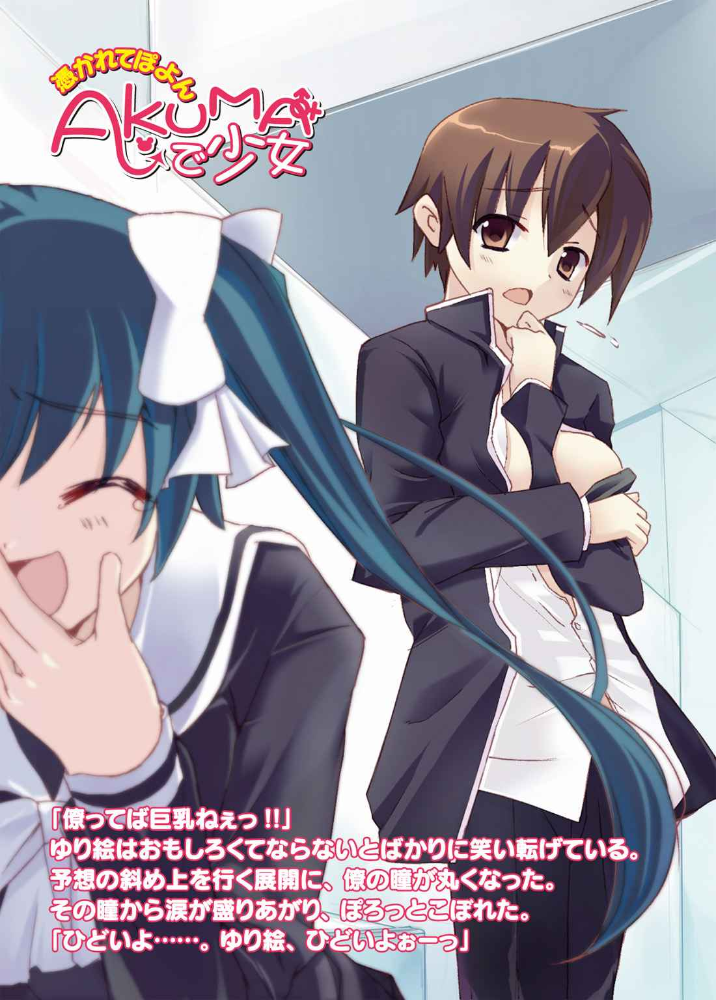
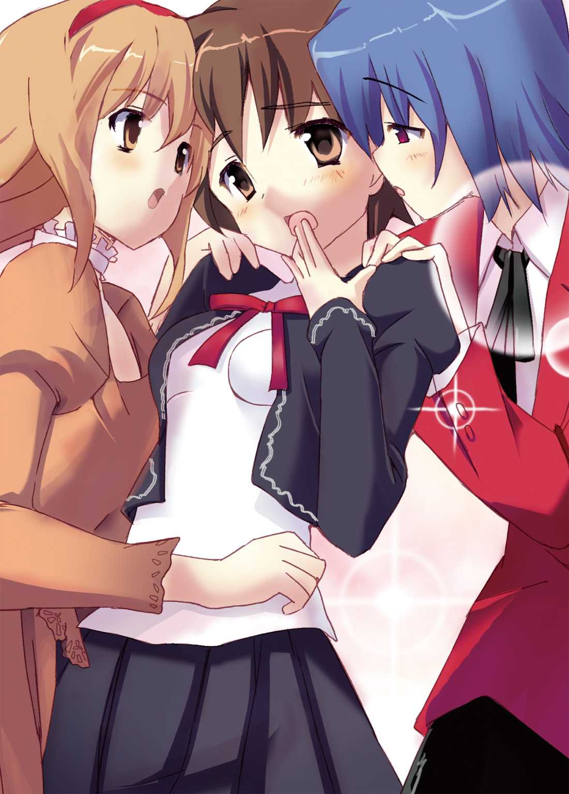
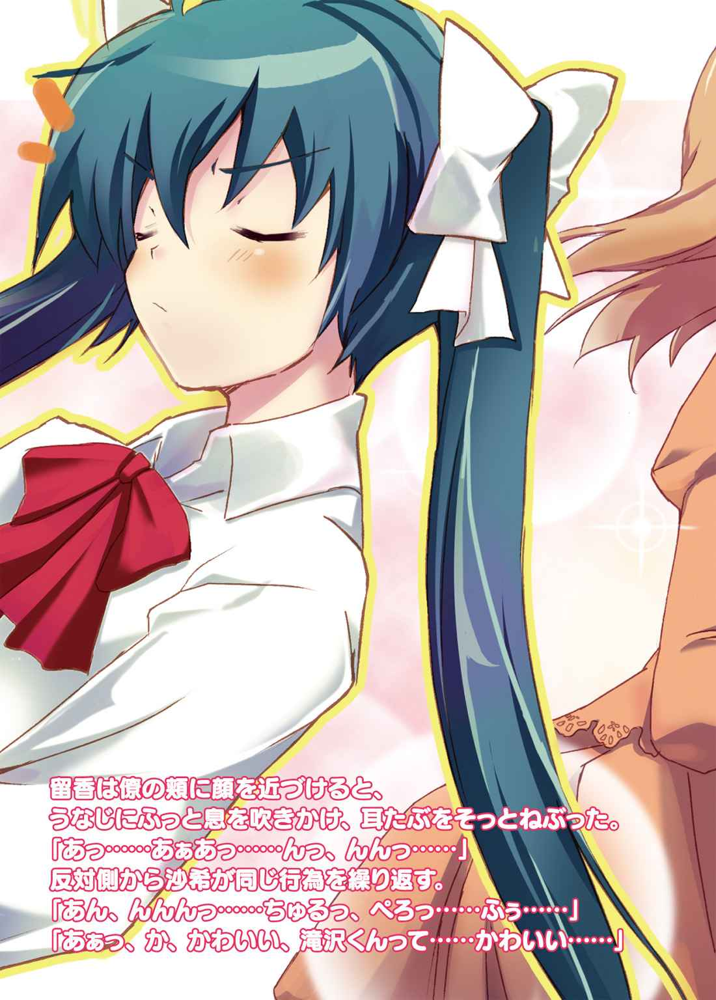
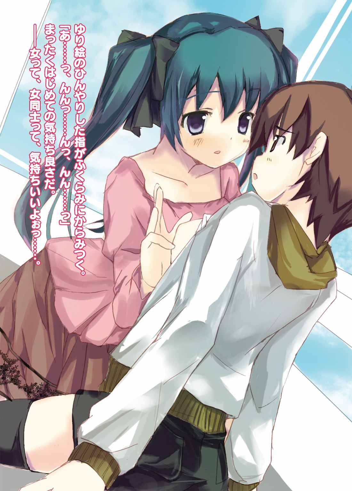
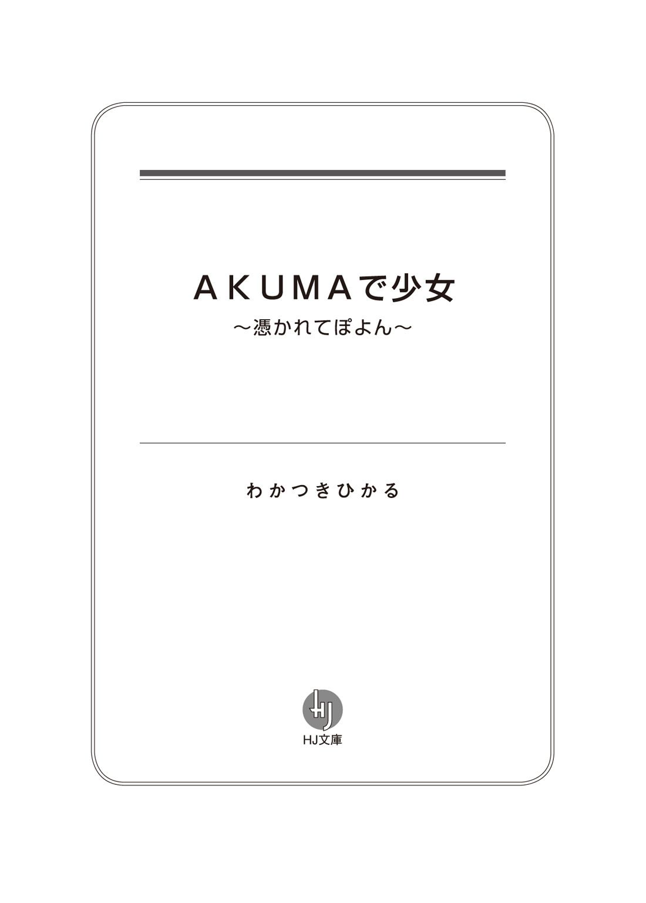
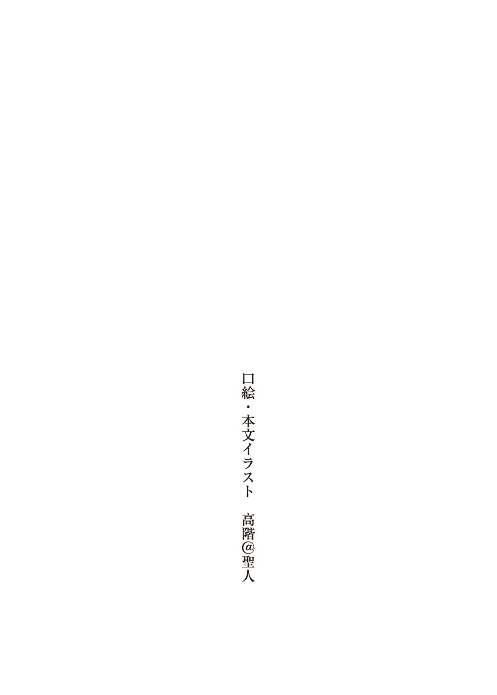
プロローグ
いつもと同じ朝のはずだった。
カーテンの隙 間 から差しこむ朝の光。小鳥の声、けたたましく鳴り響 く無 粋 な目覚まし時計の音。
眠 りの縁 から浮 かびあがってきた滝 沢 僚 は、布団から手を伸 ばして時計を止めた。
寝 ぼけ眼 を手の甲 でこすりながら、布団の中からもぞもぞと這 い出て起きあがる。
足をもつれさせて、前のめりに倒 れ伏 した。
「あれっ？」
男子高校生の部屋らしく、適度に散らかっているものの、何かに足を引っかけてしまったわけではない。何もないところで転び、ほこりまみれの畳 にキスした僚は、頭を振 りながら立ちあがった。
――寝ぼけてるのかな？
起きあがって歩き出そうとして......そしてまた前のめりに転ぶ。
「あれっ、あれあれ？」
胸が重く、まっすぐ立つことが難しい。バランスが取れないというか、まるで立ち方を忘れてしまったみたいだ。
「なんでだ？ なんで胸が重いんだ......」
僚はその場に座りこみ、パジャマの衿 に指先を入れて引っ張った。
ありえないものを見て目を見張る。
そして、たっぷり数分間、途 方 に暮れた。
これはいったい何だろう。
ふっくらと盛りあがった双 つの胸のふくらみの頂きで、ピンクの乳首が尖 っている。
どう見ても、女の子のおっぱいにしか見えない。
「な？ 何だ、これ？」
寝ているあいだ、恋 人 のゆり絵 がいたずらし、おっぱいの形をしたパーティグッズを胸に張り付けたのだろうか。
虫さされか何かで、胸がふくらんでしまったのだろうか。
胸をそうっと手で押 さえる。パジャマ越 しに、ふよっとした弾 力 のある手 触 りが返ってきた。温めたゼリーをナイロン袋 に入れて口を縛 ったようなぷりんぷりんの感 触 だ。
このＦカップほどありそうな立派なおっぱいが、おもちゃでもなければ、虫さされで腫 れているわけでもないと伝えてくる。
「ま、また、い、入れ替 わった？」
女の身体になるのはこれが三度目だ。
恋人のゆり絵と、魂 が入れ替わってしまったことがあり、ゆり絵の身体で生活したことが二回ある。
だが、今回は何かが違 う。
前のときは、胸が重くてバランスが取れずまっすぐに立てない、なんてことはなかった。
いやな予感を覚え、転ばないように手すりにつかまりながら階段を下り、洗面所に向かう。鏡で自分の顔を見ようと思ったのだ。
しばらく歩いているうち、身体がバランスを覚えたのか、普 通 に立てるようになった。どきどきしながら鏡を見た彼は息を呑 んだ。
「そんな......」
鏡に映っているのは、自分だった。手でこするが、顎 も口の周りもつるつるのすべすべで、髭 剃 りあとのザリザリ感がぜんぜんない。いつもと同じ顔なのに、どこか雰 囲 気 が違って見える。
不安と恐 怖 で世にも情けない表情を浮かべているのに、いつものヘタレ顔ではなく、これではまるで憂 い顔 の美少女だ。
彼は、ごく平 凡 な容姿をした少年なのに、女性化するとかわいくなってしまうのである。
――も、もしかして......。
僚は、ズボンの前を手で押さえた。
男性のシンボルは、そこになかった。
「な、ない......」
さーっと顔から血の気が引いた。
本来ならペニスのあるべき場所に、ふんわりふわふわのヴィーナスの丘 があった。
玉を二個納めてぶらさがっているおいなりさんがなく、ふにゃふにゃの何かが股 間 に張り付いているのが、パジャマの布ごしにはっきりわかる。
真ん中にスリットを通した楕 円 の形の蒸しパンそっくりのそれは、僚の乱暴な揉 み方に抗 議 したのか、ゾクリとした感触を持ち主である僚に返してきた。
「ははは......。ウソだ冗 談 だ。そんな、そんなはずは......、ま、まさか......」
僚は乾 いた笑い声をたてながら、片手を背中に回し、自分のお尻 を撫 でた。まあるく張った、むっちりと形のいいお尻の感触。
ズボンの前を指先で引っ張って中を見る。
なかった。
ペニスはなかった。
繰 り返すが、なかったのである。
まさかまさかと思っていたが、身体が女性になっている。
「ぎゃあぁあああっ!! 」
僚は絶 叫 をあげた。千円カットの店で毛先をそろえてもらったばかりの短 髪 を両手の指で掻 きむしって苦 悶 する。
男にとって、ペニスが無くなること以上の恐怖はない。
「びょ、病気だっ。僕、病気になってしまったんだ......っ!! 」
これは病気だ。身体が女性化する病気。そうとしか考えられない。
バランスが取れなかったのも道理。僚の身体は、男性のボディバランスに慣れている。おっぱいの重さに混乱したのだ。
僚はその場に座りこみ、両手で顔を覆 ってしくしくと泣き出した。
滝沢僚。十七歳 。
ごく普通の男子高校生。
やや低めの身長に、平凡な容姿。運動神経は標準以上だが、帰宅部で打ちこんでいるスポーツはとくにない。成績は至って普通。
隣 家 に住む恋 人 の如月 ゆり絵とラブラブで、怒 鳴 られたり、かまわれたり、足 蹴 にされたり、お弁当を作ってもらったり、殴 られたりしながらも、普通に忙 しい日々を過ごしている。
だが、彼は、ある特 徴 があった。
最近になってようやく気付いたばかりだが、彼のその特徴は、他者の追従を許さないほど強力だ。
滝沢僚は、超のつく不幸体質だったのである。
第１章 重 い胸と想 い人
ノートパソコンの画面をじっと見ている男性がいた。
ものがごちゃごちゃにあふれた狭 い部屋だ。安っぽい家具とカーテンレールから下がった洗 濯 物 から、単身者用のアパートだとひとめでわかる。
「願いを叶 えてくれるぬいぐるみ、か......」
液 晶 画面には、ＵＭＡ というロゴが躍 るサイトが表示されている。
ＵＭＡ、すなわち、ネッシーやつちのこなど、未確認生物を信じる人たちのサイトである。
『ユーマニスト』のサイトには、スピリチュアルグッズのネット通 販 だけではなく、会員登録をした人たちだけが書きこみができる掲 示 板 がある。
この掲示板に、「願いを叶えてくれるぬいぐるみを見つけましたが、これはいったい何でしょう？」という質問が出たのは、半月ほど前のことだった。
「ぬいぐるみを捕 まえるためにはどうしたらいいでしょうか？」
「ようやく捕まえることができましたが、言うことを聞きません。方法は？」
ときおりアップされる質問に対して、同じ趣 味 を持つ仲間たちは、真 摯 にアドバイスを書きこんでいく。
知らない人間がもし読めば、あまりの電波っぷりに引くだろうが、仲間たちは真 剣 だ。
会員登録をしているという安心感によるものか、あるいはアツくなりすぎたあまりなのか、直接には書かれていないものの、個人情報が類推できるレスがある。
どう考えても、桜 井 坂 高 校 の関係者、生徒か先生が書きこんでいるとしか思えない。
やがて、その書きこみは、「おかげさまで願いが叶いました。ありがとう」で終わった。
それから、ずっと掲示板を見ていたが、ぬいぐるみに関する書きこみはでてこない。
ぬいぐるみは、今も桜井坂高校のどこかにいて、誰かの願いを叶えているのだろうか。
悪 魔 だとか書かれていたが、少し違 うような気がする。
クマのぬいぐるみの姿をしているなんて、これはむしろ水子霊 とか子供の霊とか座 敷 童 とか、そうしたたぐいに違いない。
悪魔であったとしても、あるいは悪魔でなかったとしても、人ならぬものであることは確かだろう。
召 喚 の儀 式 をすれば呼び出すことはできるはず。
男性は、次に、バイオリズム曲線が計算できるサイトを表示した。
生命体 の調子のリズムを計算するそのサイトに、桜井坂高校のデータを入力する。誕生日は創立日だ。高校は生きている。バイオリズムだって出てしまう。
次に、ホロスコープを表示する。ホロスコープは占 星 術 。いわゆる星 占 いである。
「くっくっく」
男性は、呵 々 大 笑 をした。
星のめぐりが最高で、召喚の儀式にちょうど良い日は、桜井坂高校の文化祭の一日目だったのである。
思いがけない偶 然 に、笑うことしかできなかった。
「あっはっはっ、ははははっ、はーはははっ」
十年前の桜井坂高校の文化祭。
忘れられない一日だった。
その日に起こったある事件が、彼と、彼のもっとも大事な女性にとって、悪夢のはじまりだったのだから。
☆
滝 沢 僚 と如月 ゆり絵 は、屋上のベンチに肩 を並べて座り、仲良くお弁当を食べていた。
秋の昼下がり、太陽に温められた屋上はぬくぬくだ。
文化祭まであと数日になり、学内の雰 囲 気 はどことなく浮 ついている。とはいえ、昼休みの屋上は、のんびりした空気が流れていた。
二人の膝 の上にはランチボックスが広げられていた。
ゆり絵のぶんは、もうほとんどからになっていたが、僚のぶんはあまり減っていない。
朝、ゆり絵が僚のぶんまで作ってくれるお弁当は、ボリュームもあり、とてもおいしい。
だが、食欲がない。女性化のせいで胃まで小さくなってしまったのか、少し食べただけでお腹がいっぱいになってしまった。
お箸 を持つ指も、詰 め襟 の袖 から出ている手首も、ほっそりとした女の子のものになっていて、気付かれるのではないかと思うと気が気ではない。
体育の授業は風 邪 だということにして休んだが、いつまでも休めるわけがなく、この先のことを考えると暗 澹 とした気持ちになる。
朝のようなパニックは治まっているものの、明るく振 る舞 えるわけがない。
陰 気 な顔をしている僚をよそに、ゆり絵は元気いっぱいだ。食べ終わったランチボックスを布ナプキンでくるみながら、どうでもいい話を楽しそうに話している。
「あの階段、地 縛 霊 がいるんだって。とくに文化祭の前あたり、出やすいらしいよ」
「ああ、それ聞いたことある。学園伝説だよな。幽 霊 なんかいないって思うけどな」
心ここにあらずという状 況 だが、うわべだけ話を合わせて相づちを打つ。
ゆり絵に生返事をすると、握 り拳 になって返ってくるからだ。
「ああ、そうかぁ。伝説なのね。じゃあ、この話、有名なのかな？ カップルが歩いていると、幽霊が女の子の足を引っ張って転ばせるんだって。階段でコケた子がいて、クラスメートがそんなことを言ってたわ」
今はそれほどでもないのだが、ゆり絵は過激な性格のせいで、クラスで浮 いた存在だった。敬して遠ざけられていたのである。
そのため、学園伝説や、女の子たちのウワサ話にうといところがある。この話も、最近聞いたばかりのようだ。
「前にゆり絵がコケたのも、幽霊のせいなのかな？」
僚は、幽霊話なんかくだらないと思っているので、おどけた口調になってしまう。
二人が階段から落ちたのは、二週間ほど前のことだ。
足を踏 み外 したゆり絵を支えようとしたら、僚も一 緒 になってもつれあって落ちてしまった。
その拍 子 に魂 が入れ替 わってしまい、ゆり絵の身体で生活しなくてはいけないはめになった。入れ替わりは二度目とはいえ、大変な思いをした。
「まさか。女って、どうしてこう、くだらない話が好きなのかなって思ったの」
「ゆり絵も女なのに」
「あはは。そうね」
――今の僕も女だな。
僚は、はぁ、と陰気なため息をついた。
魂の入れ替わりが起こり、ゆり絵の身体で生活したときは、いきなり替わったのだから、いつかまた替わるだろう、という思いがあり、どこか気楽だった。
だが、今回はわけが違 う。
身体が女に変化してしまったのである。
いつまでこのままかわからない。
あるいは一生このままかもしれない。
――いやだっ。そんなのっ。
瞳 がうるっとなり、涙 がこぼれた。女性化すると涙 腺 が緩 くなる。僚はくしゃっと顔をゆがめ、ぽろぽろと涙をこぼした。
過去二回の女性化体験によるものだろう。小首を傾 げ、立てた指先で目頭を押 さえている仕草はすでに女だが、本人だけが気付かない。
「僚、どうしたの？ どっか痛いの？ なんかヘンねぇ。食欲なさそうだし。顔色悪いゾ。声も妙 に甲 高 いし。ずっと上の空よねぇ。病気かな？」
心配そうな表情を浮かべたゆり絵は、僚に向かって手を伸 ばした。おでこに手を当てて、熱を測ろうとしたのだろう。
気 遣 ってくれるのはうれしいのだが、触 られるのは困る。ゆり絵には女性化を知られたくない。
「いやっ」
僚は、ゆり絵の手を振り払 った。そのとき、彼女の手が詰め襟の胸をかすめた。
二人のあいだの空気がシンと凍 り付く。
ゆり絵がふいに立ちあがった。膝の上のランチボックスがコロンと落ちる。
もう食べ終わっていたし、布ナプキンで包んでいたから中身が散乱することはなかったが、お昼休みをそれぞれに過ごしていた生徒たちが色めきたち、ざわっとなった。
僚とゆり絵は何かと目立つカップルだった。
穏 やかな性格をしたなごみ系男子高校生と、性格はキツイが目を見張るほどの美少女が交際をしているのだ。あまりの凸 凹 っぷりに、周囲の注目はいやおうなく集まってしまう。しかも彼と彼女は、ねたましくなるほど仲がいい。
その二人が痴 話 喧 嘩 をはじめたのである。
視線を感じた僚は、恥 じらいに顔を染め、初々しく目を伏 せた。長いまつげがゆらゆら揺 れる。
ゆり絵はすっと立ちあがり、無言で席を立って階段へと向かう。横顔がこわばっているのが見て取れた。
「待ってっ」
僚は彼女を追おうとして、ランチボックスのフタをしめた。布ナプキンでくるむのに意外と手間取り、腰 をあげようとした瞬 間 、階段のドアが閉まった。
「ゆり絵、待ってよ」
バタバタと彼女のあとを追う。
口調や走り方が、すでに女の子になっていた。
☆
階段の重いドアが閉まり、僚の姿が隠 れると同時に、生徒たちがそわそわと腰をあげた。
――ケンカかなぁ？ あの二人、仲が良かったんだけどな。
――滝沢が如月を怒らせたっぽいね。
――でもさ、如月さんってさ、いっつも怒 ってるよな。滝沢のやつ、よくやってるなと思ってたんだよ。あんな怖 い女、俺はまっぴらだね。
にぎやかなおしゃべりがいっせいにはじける。
二人のケンカを見物したいのだが、あからさまに見に行く生徒はさすがにいない。
階段のドアにとりついて、鍵 穴 や隙 間 から、物見高く見物する。
さながら、火事に集まった野次馬のようなありさまだ。
――うー。見えねぇ......。
――なんかしゃべっているような声が聞こえるけど......。痛いとか何とか......。嫌 がってるみたいな。......悲鳴？
――違 う。笑ってるんだ。なんだ、もう仲直りか？
――あ、いや、違うか......。泣き声、だよな？ もしかして修 羅 場 っ!?
デバガメ状態の生徒たちが、ざわっと色めきたった。
彼らは漏 れ聞こえる声や気配などのわずかな手がかりから、階段の下で何が起こっているのか想像して身もだえている。
しばらくしてチャイムが鳴った。午後の授業開始五分前を示す予 鈴 だ。彼ら彼女らは顔を見合わせると、これで免 罪 符 をもらったとばかり、いそいそと階段を下り始めた。
☆
それより少し前。
僚は、階段を下りていたゆり絵の背中に声を掛 けた。彼女は生まれつき心臓が悪いため、階段はゆっくり歩く。だから、追いつくことは容易だった。
「ゆり絵っ」
ゆり絵が階段の踊 り場 で、足を止めて振 り返った。不安そうな、怒っているような、心配そうな表情を浮 かべている。
「よかった。追いついた。一 緒 に行こう」
ゆり絵に向かって手を伸 ばしたとき、ちょうど伸びてきた彼女の手が、僚の胸を詰 め襟 の上からむぎゅっとつかんだ。いきなりだった。かなり痛い。
「な、何をするんだよ!? 」
「やっぱりだわ。おっぱい、ふくらんでる！ さっき、手の甲 がかすめたとき、ぷるるんって揺れたのよっ。錯 覚 じゃなかったのね」
ゆり絵は怖い顔をして、双 つの胸乳を、ぎゅうぎゅうと揉 んでくる。
「うーっ、い、痛いっ」
「痛覚があるのね？ コレ、パッドじゃないんだわ。いったいどうして、どうなってこうなったの？ 説明しなさいっ!! 」
「わ、わかんないよ。朝起きたらこうなってたんだ」
ゆり絵の尋 問 に、半泣きで答える。
自分でさえ理由がわからないものを、説明できるわけがない。
乳 房 の根本にぐいぐいと食いこむ彼女の指先が痛くてならず、涙 がこぼれて止まらない。
「い、痛いよ。離 してくれ......っ」
「あ、ごめん......つい、びっくりしちゃって......」
ゆり絵がぱっと手を離した。
ジェットコースターは止まっても疾 風 の感覚が残るように、圧 迫 感は消えたのにまだ乳房をつかまれている感じがする。
僚は、胸をクロスした両手で押 さえ、小首を傾 げてはぁはぁと荒い息をついた。
ゆり絵は複雑な顔をした。
僚は、ごく普 通 の少年なのだが、女性化したときは不思議なほどかわいくなり、そんじょそこらの女では太刀打ちできないほどの色気を放つ。僚の妖 しいセクシーさが、ゆり絵の悪 戯 心を刺 激 した。
「ちょっとおっぱい見せてみなさいっ」
「い、いやだっ。やめてくれっ。恥 ずかしいんだっ」
僚の詰め襟の胸元で、小さないさかいが繰 り広げられた。
心臓の悪い恋 人 の手を勢いよくふりほどくことは、僚にはできない。しかも女性化した身体は男のときのような力がでない。だが、僚は必死に抵 抗 した。
「いやっ、恥ずかしいのよっ。やめてっ」
仕草といい口調といい見事なほどに女の子だが、恥じらいに身もだえしている僚は、自分がナチュラルに変化していることに気付かない。
「ちょっと僚、私は何なの？ 恋人でしょ。恋人の身体を気にするのは当然よっ」
ゆり絵は、心配でならないとばかりの表情を浮かべた。おもしろさのあまり口元が緩 んでひくひくしていることまでは、動転している僚に気付く余 裕 はない。
――あ、そうか......。僕の身体が女になってしまったら、ゆり絵だってショックなんだ......。
僚の表情が揺 れたことを見て取ったのだろう。ゆり絵がここぞとばかりに言 い募 る。
「ひとりで悩 んでいないで、もっと私に相談してよ」
「そ、そうだね......」
僚は、恥じらいに染まった顔を背 けながら、詰め襟のボタンを全部外した。
シャツの胸元を押しあげるふんわりしたふくらみが合わせ目からのぞく。
僚は、早くするほうが恥ずかしくないとばかりにそそくさと、シャツのボタンを全部外して前を開いた。
もちろんノーブラである。
頭頂部にピンク色の尖 りを乗せた雪白のふくらみがぷるるんと揺れる。
ロケットみたいに前に突 きだした量感のある乳房だ。鎖 骨 のヘコミも、キュッとくびれたウエストも、十七歳 の少女の身体そのものだ。
乳房がぷるぷる前後に揺れているのは、寒さと恥ずかしさで小刻みに震 えているせいだ。
僚は、恥ずかしさのあまり目を伏 せている。匂 い立 つような未熟な色気と可 憐 な雰 囲 気 は、守ってあげたい系のか弱い少女を絵に描 いたみたいだ。
ゆり絵はあっけに取られた表情で胸元を見ている。
――ゆり絵もショックだよな。恋人の僕が、こんな身体になってしまったなんて。泣き出すかも......。
時間が止まったようだった。
彼女はしばらく息を詰めていたが、はじけるように笑い出した。
「僚ってば巨乳ねぇっ!! 」
ゆり絵はおもしろくてならないとばかりに笑い転げている。
予想の斜 め上 を行く展開に、僚の瞳 が丸くなった。その瞳から涙が盛りあがり、ぽろっとこぼれた。
「ひどいよ......。ゆり絵、ひどいよぉーっ」
恋人が、僚の身体の異常を、おもしろがっている。
僚は、男性のシンボルが消えてしまったことにショックを受け、食事も喉 を通らないほどなのに、恋人に笑われてしまったのだ。
僚は唇 を震わせながら身だしなみを整えて乳 房 を隠 すと、その場を離 れようとした。
だが、二歩ほど歩くと、両手で顔を覆 ってその場に座りこみ、おいおいと号泣した。
予 鈴 が四分前に鳴り終わり、本鈴が鳴るまであと数十秒になっていることも、修 羅 場 （？）真っ最中のカップルを取り囲み、生徒たちがきょうみしんしん眺 めていることも、絶望に浸 っている僚はぜんぜん気付かなかった。
☆
「君たち、何をやっているの。予鈴、とうに鳴ったわよ。早く教室に行きなさいな。もうすぐ本鈴が鳴るわよ」
階段をあがってきた白衣の女性が、踊 り場 の人 垣 に声を掛 けた。
白衣の女性は、ポケットに手を入れて、背 伸 びしながら人垣の内側をのぞく。メガネの奥 の瞳がやさしそうに細められている。
「あっ。先生っ。滝沢くんが泣いてるんです。如月さんは大笑いしてるし。何かなって思って」
「好 奇 心 とかじゃないですよ。病気かなって心配で......」
チャイムが鳴った。
「そうなの。先生が診 るわね。ほら、本鈴よ」
古 泉 麻 子 先生。養護教 諭 である。
プロポーションのいい身体は白衣に隠されているが、おだやかな雰囲気のやさしそうな先生だ。
赤い縁 のメガネを掛け、淡 くメイクし、ストレートロングの黒 髪 を、首の後ろでくくっている。
三十歳の彼女は、笑うと目 尻 の小 皺 がやや目立つものの、それが笑顔を甘 くさせている。大人の落ち着きと包容力を感じさせる、しっとりした女性だ。
「ほんとだ、鳴ってる」
「早く行かなきゃっ」
「次、教室移動なのよねーっ」
お騒 がせカップルを取り囲んでいた人 影 がばらけていく。
やがて、人垣の内側から、床 に座りこんで泣きじゃくっている男子高校生と、同じく床に座りこみ、後ろ手をついて顔を仰 向 かせ、笑いすぎて涙 を流している女子高生が現れた。
「滝沢くん。だいじょうぶ？」
僚は、こくこくとうなずいた。だいじょうぶです、と言いたいが、しゃくりあげるのに忙 しく、言葉が思うように紡 げない。
「どこかケガしたの？ 生徒が呼びに来てくれたのよ。階段の踊り場で泣いている生徒がいる、階段を落ちたのかもって。まさか滝沢くんだったとはね。ケンカしたのかな？」
「だ、だいじょうぶ、です。僚が......そ、その......あははっ、あはっ、あはっ、ははははっ」
ゆり絵の笑いの発作はいつまでたっても治まらないようだ。
笑い声に刺 激 され、さらにえぐえぐとすすり泣く。
「ひどいよ、ゆり絵......ぐすっ、ぐすぐす......なんてひどい......」
「とにかく二人とも、保健室に来なさい。そんなんじゃ授業にでれないでしょう。次の授業は欠席だって、若 葉 先生に連 絡 してあげるから」
若葉先生は二年Ｄ組の担任だ。
「は、はい」
手の甲 で涙を拭 きながら、立ちあがったときのことだった。足がよろめき、支えようとして手を伸 ばした古泉先生に抱 きついてしまった。おっぱいの重さに慣れてない僚は、立ちあがるときによく転ぶ。
先生の白衣の胸に顔を埋 める結果になり、思いがけずボリュームのある乳房に陶 然 となる。
養護教諭が、ハッとして僚の肩 を持つ。
顔色が変わっていた。
「滝沢くんっ、あなたっ!! 」
「そ、そうなんですよぉ～っ。先生っ。あははっ、おっかしぃっ」
「先生ーっ、僕、僕、病気なんですかっ？ おかしいですよね？ ぜ、絶対っ、おかしいですよねっ!! ぼ、僕っ、病気になってしまったんだぁっ」
「い、いつから？」
「今日の朝からです」
養護教諭が顔色を変え、ゆり絵が笑い転げ、僚が先生にとりすがって泣きじゃくる。
「と、とにかく、保健室にいらっしゃい。診 察 してみましょう......こんなのはじめてだから、私に何ができるかわからないけど......」
古泉先生は踵 を返すと階段を降り始めた。首をひねりながら歩いていく。僚はゆり絵と手をつなぎ、古泉先生のあとをついて行く。
☆
「脱 ぎなさい」
「ぬ、脱ぐんですか？」
「女同士だから平気でしょ」
「僕は男ですっ!! 」
「あははっ、男よねっ、くすくすっ......あーっ、もう、発作起こしちゃいそう」
「脱がなきゃわからないでしょっ。早く脱ぎなさいっ。今すぐよっ」
「い、いやですっ!! そ、そんな恥 ずかしいっ」
「くすくすっ、ひぃひぃっ、あははーっ」
カーテンというカーテンを全部引き、内 鍵 を掛 けた保健室で繰 り広げられるショートコントは、複雑な様相を呈 していた。
心配顔の先生が脱げ脱げ今すぐ脱げ全部脱げと僚に迫 り、ゆり絵が薄 情 にも笑い転げる。
僚は両 腕 で胸を抱き、嗚 咽 しながら首を振 る。
どうしてこんな目に遭 うのかわからない。これは何のバチなのだろう。前に女性化したとき、もうこのまま女の身体のままで暮らしたいと思ったことが原因なのだろうか。
それとも、ゆり絵の身体になったのをいいことに、ゆり絵の身体を触 りまくり見まくって陶 酔 したのが悪かったのだろうか。
「ぬ、脱がなきゃいけないの？」
「僚、そ、その口調、お、女っぽいよ......きゃははっ」
「脱ぎなさい」
「くすくすっ......わったしー脱ぐの恥ずかしいわー、お嫁 に行けなくなっちゃうーっ......あっはははっ」
ゆり絵が僚のマネをして、声音を使いしなをつくった。動転している僚には悪 魔 の笑い声に聞こえる。
ムカッときた。
僚はこんなにも困り果てているのに、笑い飛ばす神経がわからない。
「ぬ、脱ぐよっ。脱げばいいんだろっ」
僚は、どこか投げやりな気分で詰 め襟 を脱ぎ、シャツのボタンを外し、前を開いた。乳 房 がぷるるんと揺 れる。
――笑われる......。
だが、古泉先生は笑わなかった。
養護教 諭 は顎 に手を置き、メガネを光らせてじっと僚を見ている。
ぷるんぷるんの大きな乳房ではなく、ウエストが細くなったせいでズボンがゆるみ、ベルトで締 めてなんとか止めているお腹を見ながら、考えこんでいた。
その様子はいかにも頼 りがいがあるように思えた。
僚は涙 をおさめ、ゆり絵も笑いをひっこめて、期待と不安が半ばする表情で古泉先生を見ている。
――もしかして、先生、僕を男にしてくれるかも......。
アブナイことを考えたときのことだった。
「触っていい？」
否も応もなかった。古泉先生のひんやりした手が、僚のお腹に伸 び、お臍 の下をぐっと押 さえた。
「きゃあっ」
「子宮があるわね」
「し、子宮ーっ!? 」
悲鳴をあげたのはゆり絵だった。
僚は、あまりのなりゆきに言葉を失ってしまった。両手で口を押さえ、目を見開いている。押さえた手の下で、口がぱくぱく動いている。
「完全に女性化しているわ。ペニスや陰 嚢 、無くなってるでしょ？ ......ごめんなさい、先生には何もできないわ」
希望の糸が切れる音がぶちっと聞こえた。
「わーんっ」
期待していただけに、絶望の深さは強 烈 で、僚はその場に座りこみ、さめざめと泣き出した。
「うわわーんっ。わーんっ。えーんっ」
「そ、そんなに、泣かなくても......妊 娠 はしていないから安心して」
「よかったねー。僚、妊娠してないんだってさーっ。きゃははーっ」
「ひっく、ぼ、僕、お、男なのにぃっ、えぐえぐっ、男になりたいのにぃっ」
「えっと、ちょっと待ってね。たしか性 転 換 薬がネットに出ていたのよね」
保健室の先生は、ケータイを取り出して親指を数字盤 に走らせた。
「あったわっ!! 性転換薬よ。アルラウネとマンドレイクと処女の経血を、ヘルメス・トリスメギストス学派を修めた錬 金 術 師 が錬金した秘薬ですって。百万円って安いわね。あっ、待って、副作用の注意書きがあるわ。なになに？ 五十パーセントの確率で植物人間になりますが、自己責任のうえで服用してください。なお、植物は、針葉樹ですが、人間サイズの大きさで、手入れは観葉植物と同じです......なるほどねぇ、確かに植物人間ね......。どうかしら、僚くん。買ってみる？」
「わーんっ、うわわーんっ」
「へえ、先生、そんなのが通 販 しているんですか？」
「ええ、そうよ。『ユーマニスト』のサイトなの。何でもあるわよ。ほら、この、つちのこのストラップもこのサイトで買ったのよ。こっちの亀 の首が龍 になっているのは中国の風水の縁 起 物 で、幸運を招くの。このラッキーストーンもそうね」
「じゃあ、このマグカップも？ ネッシーですよね」
「これはファンシーショップで買ったのよ」
「えええっ、ネッシーなんて、ぜんぜんファンシーじゃないですよーっ」
「あら、そうかしら。先生はファンシーだと思うわ。だってコレ、カワイイじゃない？」
「かわいくないですーっ」
ゆり絵と先生は、なごやかに会話を楽しんでいる。
しょせん人ごとだと思っているのだろう。気楽なものだ。
自分だけが世界中の不幸を一身に背負っている気分になり、涙がこぼれて止まらない。
「ひぇっ、ぐすっ、ぐすぐすっ、ひくっ」
「だいじょうぶよ。滝沢くん。如月さんに頼めば、なんとかしてくれるわよ。ほら、願いを叶 えてくれるぬいぐるみがあるじゃない。あれ、如月さんのペットでしょ」
「はい。私も、デビルベアに頼 もうと思っていたんです」
「あ、そ、そうか......」
デビルベア。大 阪 弁 をしゃべるテディベアだ。愛くるしい外見をしたクマのぬいぐるみは、ゆり絵が深夜の二時に合わせ鏡をしたことによって偶 然 に召 喚 してしまった悪 魔 だった。
「いちおう、アイツ、悪魔だし、性転換ぐらい簡単ですよ」
気楽な口調だ。ゆり絵が爆 笑 したのは、薄 情 だったからではない。何とかなると思っていたからだ。
僚は、はーっとため息をついた。
――そうだ。悪魔の恩返しが残っていたんだ......。
身体がいきなり女性化したショックで動転し、デビルベアのことを綺 麗 さっぱり忘れていた。
彼はゆり絵の奔 走 で無事に魔界に帰ったが、何かあったら手助けをすると約束している。
デビルベアはかなり抜 けているが、あれでもいちおう悪魔だし、すごい魔力の持ち主のはずだから、きっとなんとかしてくれるだろう。
そのとき、カチャカチャと音がして、内 鍵 を掛 けたはずのドアががらりと開いた。
目鼻立ちの整った少年が顔を出した。
花 村 勇 作 。僚とゆり絵のクラスメートだ。
「麻子さ......」
勇作は、詰 め襟 の胸を開いたままの僚を見てぽかんと口を開ける。
鍵 を掛けたはずのドアがいきなり開いた驚 愕 に、僚は両 肘 を脇 腹 につけて両手を身体の横で開いた「きゃーびっくりー」のポーズのままで硬 直 した。
「いやーっ」
たっぷり数秒遅 れで悲鳴をあげ、両手で胸を隠 し、背中を向けてイヤイヤをする。
仕草はまるっきり女の子だ。
「うーん。僚ってば、何て色っぽいの......女の子よりもかわいいじゃないの。なんか悔 しいわね......それにしてもおっきいおっぱいよねぇ。元が男なんて思えない......。Ｆはありそう。この大きさだったら、私のブラを貸せるかな」
「いやいや、恥 ずかしいっ。きゃああっ」
ゆり絵がのんきな感想をぶつぶつしゃべり、僚がきゃあきゃあ悲鳴をあげて泣 き叫 ぶ。
過去二度の女性化体験によるものなのか、ウソだ冗 談 だこれは病気だと思っているにもかかわらず、無意識の仕草が女っぽい。
それでいて、心理的には女の身体を受け付けていないから、ナチュラルに女の仕草をしていることに気付く余 裕 さえないのであった。
「失礼っ」
ドアがぴしゃりと閉まる。
保健室が静かになり、動 揺 が少しばかり治まった。震 える指先でボタンを嵌 め、前を閉じる。乳 房 が隠れると少しばかり安 堵 した。小刻みに震えながら、細い声でつぶやく。
「か、鍵、掛けたのに......、どうして......」
「ごめんなさいね。私が合い鍵を渡 したの」
先生と勇作は恋 人 同士だ。
まったくの偶然だが、僚とゆり絵が仲を取り持ってしまう結果になったので、二人のラブラブぶりはよく知っている。
だから勇作が鍵を開けて入ってくるのはわかるのだが、おっぱいを見られてしまった衝 撃 は激しくて、どうしていいかわからない。
ノックの音がした。
勇作が叩 いているのだ。
古泉先生が「どうする？」というふうに僚を見る。
僚はしかたなくうなずいた。
すでに半 裸 を見られている。もういまさら隠してもしかたがない。
――僕の人生は終わってしまった。
「いいわよ」
養護教 諭 が答え、ドアがそろそろと開いた。
頭からクエスチョンマークを飛ばした勇作が、腕 組 みをして空を仰 ぎながら、不思議そうな表情で保健室に入ってくる。視界に入ったものが信じられず、自分の正気を疑っているという雰 囲 気 だ。
「勇作くん。鍵、掛けて」
「わかっているよ。麻子さん」
勇作は内鍵を掛けたあと、僚に向かい合った。直視できないのか、そっぽを向きながら「よぉ」と話しかける。頬 が赤くなっていて、いかにも照れくさそうだ。
勇作は迷うように瞳 をさまよわせていたが、やがて気持ちが定まったのか、僚に向かって頭を下げた。
「ごめん。俺、滝沢が女なんて知らなかった......失礼なことをしてすまない」
「わーっ。ち、違 う。朝起きたら、女になってたんだよーっ。僕は男だーっ。男なんだよーっ」
僚は再び両手で顔を覆 って泣き伏 した。
ゆり絵がまたきゃーきゃーと笑い出す。
養護教諭は腕組みをしてふぅとため息をつき、勇作は信じられないとばかりに首を振 っている。
「麻子さん。カーテンの合図、ちょっとマズイと思う......」
「ほんとうね。私、ドアのカーテン、少し開けていたのね。全部閉めたつもりだったのに。何か別の合図を考えましょう。でなきゃ、こういうことになっちゃうしね」
「まあ、男のはずが女で、しかも着 替 えの最中、なんてことはめったにないだろうけど。しかし、女になった滝沢がこんなにかわいいなんて思わなかった」
年の差カップルは、のんきなことを話している。
ゆり絵がこのときとばかりにおもしろそうにはやし立てる。
「うんうん、そうよね。僚ってかわいいよねーっ。文化祭の仮装喫 茶 、そのまんまでいけそうねー」
「あーんっ、わーん」
泣き声がいっそう大きくなる。
「今日は早退しなさい。そんなんじゃ授業にならないわ。担任の先生には私のほうから連 絡 しておくから。明日から自由登校日でしょ。休めるなら休みなさい」
文化祭は土日祝日の三連休を当てるため、文化祭前の二日を自由登校日に設定してある。
文化祭準備のために学校に来る生徒もいれば、これ幸いと休日を楽しむ生徒もいる。
「そうね。休んじゃおう。私は前日のクッキー作りさえちゃんとやったらいいんだし。僚は、仮装喫茶のウエイターだから、当日行けばいいのよね？」
僚はコクコクとうなずいた。
「じゃあ家でゆっくりしてなさい。寝 て起きたら、また男に戻 るかもよ」
古泉先生は、なぐさめにもならないことを口にする。
「麻子さん、車で送ってあげて欲しいな。かわいい女の子を、そんな顔で、歩かせられないよ」
フェミニストの勇作が言い出した。
かわいい女の子という言葉がショックで、また涙 があふれてしまう。
「そうね。先生が送ってあげたほうがいいかもね」
「麻子さんが車を買ったの、なにかあったときに、病気の生徒を病院に送れるからだって言ってたよね。こういうときこそファイアットくんに活 躍 してもらわないと」
「その通りなんだけど......でも、困ったわねぇ。先生ねぇ、まだ仕事中なのね。放課後まで待ってくれる？」
「い、いえ、自転車なので、ひとりで帰ります」
放課後まで待つ気力がない。
自転車のペダルを漕 いでいるほうが、まだ気がまぎれそうだ。
僚は、よろよろと歩き出した。
☆
自転車に乗ろうとしたときのことだった。
「あれ、おまえ、二Ｄの滝沢だよな？」
背後から声を掛 けられ、きゃっと飛びあがった。
渡 り廊 下 に立った先生が、泣 き濡 れた顔を伏せながら自転車を押 している僚を見て、不審そうに眉 根 を寄せている。
数学の倉 森 博 人 先生だ。半月ほど前に赴 任 してきたばかりの産休補助教員で、僚たちのクラスを担当している。
中肉中背で、年 齢 は三十代の前半ぐらい。
散 髪 をさぼっているせいでこうなりましたという感じの髪 形 に、地味なシャツにこれまた地味なデザインのブレザーを着て、数学の教科書を胸に抱 いている。
ようするに、数学教師を絵に描 いて額に入れたらこんな感じになるだろう、という外見の先生だったのである。
「ど、どうした？ 風 邪 でもひいたのか？ 目が赤いぞ」
倉森先生は、僚の怯 えように驚 いた様子で、後ずさった。
五時間目の授業が終わるまでまだ時間はあり、自転車置き場は静かなものだ。
体育の授業なのだろう。バスケットボールをしているらしい生徒の歓 声 が、平和なリズムで響 いている。
「か、風邪......そうです。風邪なんです」
「風邪なのに自転車なんてだいじょうぶなのか？ 熱があるんじゃないか？ 感 染 症 は甘 く見 ないほうがいいぞ。風邪は万病のもとだからな」
感染症のほうがまだよかった。風邪なら薬を飲んで安静にしていたらそのうち治る。保健室の先生でさえサジを投げるこんな病気、いったいどうしたらいいのだろう。
――勇作にまでバレてしまうし......。
そう思うと、またもうるっとなってしまい、せっかく止まった涙がまたあふれた。
手の甲 でそっと涙を拭 く。
「だ、だいじょうぶ、です......保健室の先生に、早退したほうがいいって言われて......」
「そ、そ、そうか。気をつけろよ。だいぶ苦しそうだぞ」
女の身体に詰 め襟 をまとい、しゃくりあげている僚は守ってあげたい系の内気少女そのもので、男性を夢中にさせずにはおかないアブナイ色 香 を放っている。
しかも、服装は詰め襟で、見かけ上は男子高校生なのだからタチが悪い。僚の泣き顔を見た男性は、自分の正気を疑わずにはいられなくなる。
先生はほんのりと頬 を上気させ、どこを見ていいかわからないとばかりにおどおどしている。
「先生はどうされたんですか？」
「五時間目は授業がないから、時間をつぶしてたんだ。職員室は息がつまるから......まあ、そんなことはどうでもいいから、早く家に帰れ。ムリそうなら、タクシーを呼んでやる」
「自転車で帰れます。失礼します」
僚は、自転車に飛び乗って走り出した。
涙の滴 が頬を伝って後方へと落ちていく。
☆
「僚、いないの？」
布団の中に潜 りこみ、フテ寝 をしていた僚は、ふすまの開く気配と恋 人 の声で目を覚ました。
ゆり絵はいつもそうだ。エアコンの室外機の後ろに掛けて隠 してある鍵 を使い、勝手に玄 関 の鍵を開けて入ってくる。
「もう、病気じゃあるまいし、なんで寝てるのよ」
まだ機 嫌 が悪かった彼は、寝たふりをつづけながらうす目を開けた。
枕 元 に正座したゆり絵の膝 小 僧 と、つやつやのナマ太 腿 が目に飛びこんできた。ゆり絵はミニスカートにカットソーという普 段 着 だった。太腿の間から、ショーツの奥 底 が白く光っている様子が見える。
「着 替 えもってきたよ。ブラジャーとかショーツとかキャミソールとか。ワンピースとか。メイク用品とか。スキンケアはしたほうがいいと思うよ。お風 呂 のあと何もつけないと、肌 が荒 れちゃうから」
ゆり絵は膝 の横に置いた紙 袋 をぽんぽんと叩 いた。
――なんでワンピースに女性下着にメイク用品なんだよ。ネタなのかよ。ゆり絵のやつ、おもしろがってるんだ......。
「うーん。なんか、僚の顔、腫 れぼったいぞ。泣いたせいかな？」
寝たフリをしていたら、枕元に座ったゆり絵が、僚のおでこに自分のおでこをくっつけた。
「平熱だよね？」
ゆり絵の甘い吐 息 が顔にかかり、びっくりして目を見開く。
目と目が合った。
ゆり絵は甘い笑顔を浮 かべると、ちゅっと唇 にキスをした。ひんやりした唇がふれあい、すぐに離 れる。
心臓がドキンと飛 び跳 ねた。
彼女の甘い匂 いになごんでしまう。
僚はゆり絵につられるようにして上半身を起こした。いつも着ているブルーのストライプのパジャマ姿だ。布団の上につくねんと正座する。
「だるいの？」
「そんなことないけど」
「だって寝てたから」
「寝ると身体が戻 るかなって思ったんだ」
「寝れた？」
「息苦しくて寝れなかった」
「どうして？」
「おっぱいが重くて、胸がつかえる感じがする」
「あははっ、はははっ、やだぁ、あはははっ......そりゃ、おっきなおっぱいだもんねぇ......」
ゆり絵はお腹を抱 えて笑い出した。
ブゼンとした表情の僚を見て取って笑いをおさめる。
「......ご、ごめんね。笑っちゃって」
「い、いや、いいよ......じっさい、おかしいと思うし......」
僚にとっては一大事だし、これ以上ないほどの不幸だが、他人にはおかしいだろう。
――あ、そ、そっか、ゆり絵に笑われてイヤだったのは、他人っぽいせいなんだ......。
ゆり絵は恋人だ。他人じゃない。
苦しいときは慰 めて欲しい。
うれしいときは、一 緒 に喜んで欲しい。
だからゆり絵に笑われたとき、あんなにもショックだったのだ。笑われたのがもしも赤の他人なら不 愉 快 になる程度ですんだはずだ。
「でも、笑いすぎちゃった。ごめんね」
ゆり絵らしくもないストレートな謝罪に、どぎまぎして目を伏 せる。
僚の長いまつげがゆらゆら揺 れ、上気した頬 に影 を落とす。
本人は意識してないことながら、その様子は本職の女性であるゆり絵をドキンとさせるほど可 憐 だった。ゆり絵は嬌 声 をあげた。
「あー、もう、僚ってば、かわいいんだからっ。なんでなのかな。僚ってさ、男のときは普 通 なのに、女の子になるとすごくかわいくなっちゃうのよねー」
「かわいいって言われるの、イヤだっ!! 」
「うん。わかるよ。私も心臓のこと言われるの、イヤだもん」
ゆり絵は先天性の心臓病だ。
心臓の部屋を隔 てる壁 に小さな穴が開いていて、血液を送り出すポンプとしての性能が落ちている。運動はできないし、ときおり発作を起こす。
医者からは心臓手術を勧 められていて、手術の前段階のカテーテル検査が、一ヶ月後に迫 っている。
「あ、そ、そうか。そうだよな......ごめん」
「謝るの、私のほうだよ。でもさ、女になるって、そんなにショックなもんなの？ 私と入れ替 わったときはそんなでもなかったでしょ？ むしろ、楽しんでるみたいに見えたけどな。私、男になるのなんか平気だけど」
「そ、そりゃ、ゆり絵は、心臓に毛が生えているから......」
口に出してから後 悔 した。
ゆり絵の前で心臓のことを口に出すのは禁句だ。過 剰 反応した彼女が怒 り出したことは二度や三度ではない。
だがゆり絵の反応は、予想外のものだった。
「あーっ。言ったねっ!! 殴 っちゃうぞっ」
ゆり絵は、怖 い顔をつくろうと、握 り拳 にハーと息を吹 きかけて、僚の頬や顎 のあたりを殴りつけてきた。だが、顔はほころんでいるし、殴ってるというよりふざけているみたいだ。
くすぐったくて、思わず笑みがこぼれてしまう。
「悪かった。あははっ、やめてくれっ」
「ええい。くすぐってやるっ!! 」
ゆり絵が腋 の下 や脇 腹 のあたりをくすぐってきた。僚も手を伸 ばし、ゆり絵の腋の下やうなじのあたりをくすぐり返す。
「ははっ、やだぁっ、くすぐったいよーっ」
ゆり絵のひんやりした小さな手が、肩 や脇腹にタッチする感 触 は、ドキドキするほど気持ちいい。
彼女のほんわかする体温と、甘 い体 臭 が心 地 よい。掛 け布 団 をはねとばし、二人でくすぐりあいっこをしてはしゃいだ。
僚が伸ばした手がゆり絵の乳 房 をかすめ、んっ、と甘い声が漏 れた。
ゆり絵は寄せた眉 根 をせつなく下げて、はぁ、と熱い吐 息 をついている。
さっきまで子 猫 のようにじゃれあっていたのに、今はもう淫 靡 な雰 囲 気 に変わってくる。
「あっ、ごめんっ。当たっただけなんだ」
「そうなの？ 当たっただけ？ そんなの、寂 しいな」
ゆり絵は、興奮にかすれた声で言った。
僚の手首を両手でつかみ、そっと乳房に当てる。反射的に手を引こうとしたが、ゆり絵はつかんだ手首を離 してくれない。
「だ、だめ、だよ。離せよ......」
「いやよ。離さない」
もっと触 ってくれていいよ、というふうに、はにかんで笑っている。
ゆり絵の胸乳は、僚と同じぐらいの大きさがあり、お皿に盛ったばかりのプリンのようにぷるぷるしている。なによりもすごいのはその熱さと、心臓の鼓 動 だった。
ほんの少し手に力をいれ、まあるいふくらみをそっと揉 むと、ゆり絵がくすぐったそうに上半身をくねらせた。
「えへへっ」
テレテレと笑いながら小首をかしげる。ツインテールに結った髪 が揺 れ、僚の手首をくすぐる。
――ゆり絵、その気になってるのかな......。
布団がある。僚はパジャマ姿だ。
ＡやＢどころか、Ｃだってできそうな雰囲気だ。だが、Ｂはできても、Ｃはできない。こんな状態の身体で、セックスができるわけがない。
――なんでチンポが無いんだよっ!?
そう思うと、止まったと思った涙 が、またもやこみあげてきた。
僚は顔をゆがめて泣き出した。
「やだもう、どうしたのよ」
――だって、僕、チンポ、無くなったんだぜ......。ゆり絵とセックスできないよ。せめて一度は体験したかったよ。僕のチンポがかわいそうすぎる......。
とはさすがに口に出せない。
僚は布団を被 って寝 ころび、ゆり絵に背中を向けた。
「だって、僕、女になっちまって......ゆり絵に嫌 われちまう」
「私は僚が女でも好きよ」
意外なセリフに驚 いて、振 り返ってゆり絵の顔をじっと見る。
「僕が男じゃなくてもいいのか？」
「私が好きなのは、滝沢僚っていう存在なの。おっぱいがおっきかろうが、太ってようが痩 せてようが、僚が僚だったらそれでいいの。私、僚が男でも女でも、病気でも好き。宇宙人でもヘンタイでも、きっと好きだよ。......やだな、なんでそんなヘンな顔をするのよ」
ゆり絵は無 邪 気 に笑っている。
――ゆり絵って、自分がどんなにすごいことを言ったのか、気付いていないんだろうなぁ......。
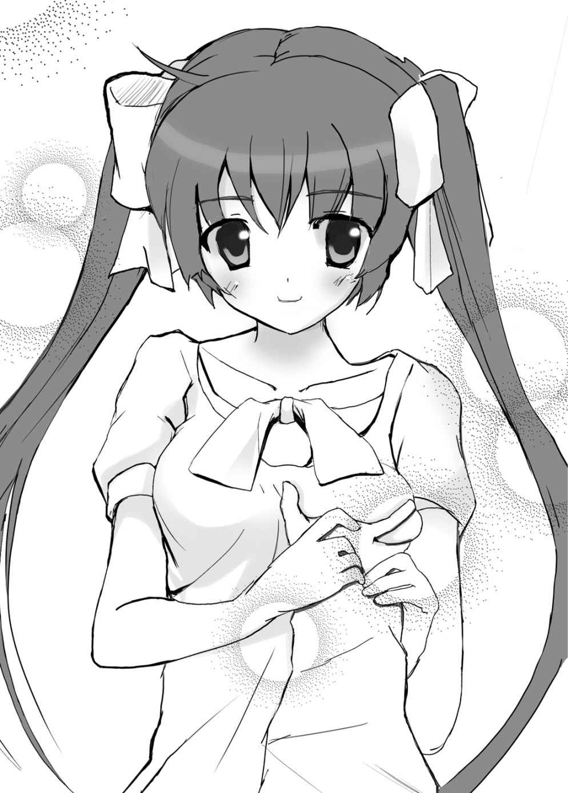
心臓病を患 うゆり絵だからこそ、病気でも好きというセリフが出たのかもしれないが、僚が僚であれば外見とは関係なしに好きというセリフは、僚を感動させた。
「ほ、ほんとうに？」
「うん。......でも、そうだな、僚が爬 虫 類 型宇宙人とかだとちょっとイヤかも......やっぱり僚は僚のままがいいな」
「うん。僕も男のほうがいい」
「安心して。夜の二時に鏡に向かって話しかけたら、デビルベアと話せるから。アイツが嫌 がったら、引っ張り出しても言うこと聞かせるよ。だからだいじょうぶよ。ぜったいぜったい、だいじょうぶ」
「ああ、そうだっけ。デビルベアが魔 界 に帰るまえ、そんなことを言ってたな」
起きあがってゆり絵を抱 きしめようとしたが、乳房が重くて起きあがれない。ゆり絵の身体で生活したときは、こんなことはなかった。
僚の脳は男のつもりで神経組織に信号を送っているのに、ボディバランスが女だから混乱を起こしてしまうのだろう。
もたもたしていたら、ゆり絵が僚の横に添 い寝してきた。掛 け布 団 を引っ張りあげ、一 緒 になって寝ころぶ。
「ゆ、ゆり絵......」
――うわ。ひとつ布団に一緒だぁーっ。
ゆり絵の体 臭 とフローラルシャンプーの匂 いが、いっそう甘 く香 ってきた。
恥 ずかしくて照れくさくて、背中を向けたところ、カットソーとミニスカートのゆり絵が、僚の背中をきゅっと抱きしめてきた。ひんやりした膝 小 僧 が、僚のひかがみ（膝小僧の裏側）を押 す。
密着したところから、ゆり絵の体温が伝わってくる。
ウエストに回された小さな手のひんやりした感 触 がパジャマの布越 しに感じられた。
ゆり絵は、僚の背中におでこをくっつけてスリスリした。
――かわいい。ゆり絵、すごくかわいい......。
甘いせつなさがキュウッと胸に染みていく。
「私ね、僚が好きよ。僚の全部が好き」
笑みを含 んだゆり絵の声がリズムを帯びて身体に響 く。心臓がドキドキと音を立てた。
「僕もゆり絵が好きだ」
「どこが好き？」
「ん、そうだな......プロポーションがいいし、綺 麗 だし......料理が上手なところとか......」
「正直でよろしいっ!! ふんっ。まっ、私がかわいいのは、いうまでもないけどねッ！」
軽いのではないかと心配しながら言ったのに、ゆり絵はうれしそうに胸を張っている。
ゆり絵は、自分の美 貌 に自信を持っている。そんな彼女には、かわいいとか綺麗だというストレートな誉 め言葉が効くらしい。
お布団の中はヌクヌクで、密着感が照れくささや恥ずかしさを溶 かしてしまう。正気のときなら照れくさくて言えない言葉も口から出る。
「僕はゆり絵の全部が好きだよ。外見だけじゃなくて、中身も好きだよ。男前だしな」
「えへへっ。触 ってもいい？」
いいよと答えるヒマもなく、ゆり絵の小さな手が僚の乳 房 をつかんできた。そっとつかみ、ゆさゆさと揺 する。
検査するような手つきなのに、おかしいぐらい感じてしまい、身体がゾクゾクしてしまう。
「はぁ......っ、あんっ......ん、んん......っ」
「おっきいなぁ。Ｆカップぐらいありそうだよ。えいえいっ。どう？ こうすると感じるでしょ？」
ゆり絵の手つきが変わった。
女だからこそ女の感じるところはわかっているのだといわんばかりのねちっこいペッティングに、静電気のような戦 慄 が忍 びあがる。
ゆり絵のぷりんぷりんの乳房が背中に密着して気持ちいい。
「んっ......んんっ......んぁっ」
「あーっ。その声、すっごい色っぽいーっ。ふふっ、くすくすっ、どう？」
「あぁ......はぁはぁ......っ、んっ、んんんっ......」
ゆり絵は僚のうなじに息を吹 きかけ、耳たぶを軽く噛 み、頬 をぺろっと舐 めた。背筋にツキーンと来る戦慄が走り、身体がぶるっと震 えてしまう。
「きゃっ。だ、だめ......っ。やめてぇ......」
僚は甘い声をあげて悶 えた。
触 れあっているところが熱い。パジャマの下の肌 が、しっとりと汗 ばんでくる。
ゆり絵は、パジャマのボタンを外して胸に手を入れて、乳房を直接いじってきた。
――う、うわ。き、気持ち、いい......っ。
ひんやりした彼女の指が、乳房をそっとつかんだ瞬 間 、ぶるぶるっと身体が震えた。
ぷにぷにした細い指先が、興奮のあまり尖 っていたピンク色の頂をちょんとつまむ。
「あぁあぁっ!! 」
――つ、ついに......するんだ......。
初体験が女同士というのはちょっとアレだが、妊 娠 の心配はないので逆にいいのかもしれない。
先天性の心臓病を患 うゆり絵は、妊娠出産だの激しいスポーツだのが御 法 度 だからだ。
粘 膜 を接 触 させて上になったり下になったりする行 為 が激しいスポーツになるかどうかは微 妙 だが、ゆり絵の反応を見ながら慎 重 にやろう。
もしも嫌 がったり、苦しそうなそぶりを見せたらすぐさまやめる。状 況 によってはやめられないかもしれないが、それでも絶対にやめるのだ。
心臓はどきんどきんと高 鐘 を打ち、緊 張 と興奮で皮 膚 がヒリヒリしてしまう。下腹のあたりがキュンと疼 き、ショーツの奥 底 がジュンと濡 れた。
だが、ひとつ疑問があった。
――女同士って、どうやってやればいいんだろう......。チンポないしな......。
だが、やってみるしかない。
「お願い、はじめてだから、やさしくして......」
僚は正気のときなら噴 飯 物のセリフを口にした。
だが、反応がない。
スウスウという規則正しい寝 息 が聞こえてくる。乳房に当たっていた手がぱすんと落ちた。
――えっ？ も、もしかして......っ。
「ゆ、ゆり絵っ!? 」
僚は、身体を起こし、恋 人 の顔をのぞきこんだ。
――ね、寝てる......。
ゆり絵は目をつぶり、あどけない寝顔を浮 かべている。
「は、ははは......」
脱 力 してしまった。
期待と困 惑 でドギマギしていただけに反動は大きくて、緊張がほどけたあまりの虚 脱 状態に陥 ってしまう。
僚はそのままで呆 然 と座りこんでいた。
――まあ、まあ、いいか......。
初体験は、男の身体でしたい。
別に抜 いたり挿 したり、中で出したり外で出したり、上になったり下になったりしなくても、くっついているだけで気持ちがよかった。
ゆり絵の体温で温められた布団は居 心 地 が良く、温かいお風 呂 に浸 かっている気分になる。
横たわって目を閉じると、もうそれだけで睡 魔 に引きずりこまれていく。
ゆり絵と僚の美少女二人は、手をつなぎ側頭部をくっつけ合わせながら、スウスウと寝息を立てた。
翌日に待ち受けるとんでもない事件のことなど夢にも思わず、二人は安息に浸 っていた。
第２章 女の子同士で遊園地
「先生は私を好きじゃないの？」
彼女が僕を詰 問 する。
ひとけのない階段の踊 り場 で、彼女の声がひんやり響 く。
屋上で、外を見ながら話そうと思っていたのに、屋上へ出るドアは閉ざされ、施 錠 されていた。当時、僕は教育実習生で、鍵 のありかなどわからなかった。今なら鍵の置き場所がわかるのに。
あのとき、彼女と約束したとおり、階段の踊り場ではなく屋上で外の景色を見ながら話していたら、結果は違 っていたのだろうか。
文化祭のにぎわいが階下の方から聞こえてくる。さすが女子高というべきか、トーンの高い黄色い声だ。
たのしげな響きを帯びたざわめきだし、聞き慣れているはずなのに、なぜだか今日はいらだたしい。
「好きだよ。だけど、あまりに突 然 すぎて......。考える時間が欲しいんだ」
白いワンピースの彼女は、涙 を溜 めた目で僕を睨 んだ。
ほっそりした身体が、怒 りのあまりにわなないている。
「先生は、私を好きじゃないんだわっ。うれしいよ、おめでとうって、どうしてそう言ってくれないの？」
僕は黙 りこんだ。
彼女の言うことももっともだが、僕はまだ大学生だったのだ。
未来はまだまだあいまいで、まだなにをもなしていない。
いきなり現実を突 きつけられて、とまどうことしかできなかった。
「こんなのいらないっ。返すっ!! 」
彼女は指輪を左手の中指から引き抜くと、僕に向かって投げつけた。
十七歳 のシルバーリング。
当時、女子高生の間で流行っていた。
十七歳の誕生日に恋人からプレゼントされたそれを、左手の中指につけると幸せになれると言われている。
左手の薬指ではなく中指につけるリングは、彼がいるしるし。だから指輪が欲しいとねだられて、僕が買って彼女に贈 った。
それを外して僕に向かって投げたのだ。
僕は目をつぶり、手のひらを顔の前にかざした。
指輪は額のすぐ横を通り過ぎ、ちりんと涼 やかな音を響かせながら、屋上のドアに当たって跳 ね返った。
「きゃっ。や、やだっ」
彼女は、跳ね返った指輪に向かい、とっさに手を伸 ばした。
だが、指輪は、彼女の指先をかすめて落ちた。
一 瞬 浮 かんだ悲しげな表情は、激情に駆 られて指輪を投げつけたことを、後 悔 していることを示していた。
身体をひねった彼女の身体がバランスを崩 す。
「危ないっ」
僕は彼女を助けようとして手を伸ばしたが、彼女を助けることはできなかった。
彼女の身体がガクンと落ちる。
足を踏 み外 したのだ。
落ちる一瞬、彼女の顔が信じられない、というふうに歪 む。
重い音がして、彼女が階段を落ちていく。
「きゃあああぁあっ」
絹を引き裂 く悲鳴をあげて、大好きな女性が落ちていく。
僕は彼女の名前を呼びながら、階段を駆け下 りた。
彼女の時間は、それきり止まった。
☆
ゆり絵 は、濡 れた髪 を指先でほぐしながら、ドライヤーを掛 けていた。
そんなつもりはなかったのに、僚 といちゃいちゃしているうちに眠 くなってしまい、ぐっすりと眠ってしまった。
目が覚めたときは明け方の四時で、デビルベアと話しそこなってしまった。
僚は、泣いたことで疲 れたのだろう。ぐっすりと眠っていた。ゆり絵だけ如月 家に帰り、食べ損なった晩ご飯を作って食べた。
変な時間に起きたせいで眠くなってしまったが、食べたあとすぐに寝 ると太る。
片づけをしたり、洗 濯 をしたり、掃 除 をしたりしてから朝シャワーを浴びた。ひとりぐらしは雑用が多い。
母親はゆり絵が幼い頃 に鬼 籍 に入っているし、父は単身赴 任 中だからしかたがない。
そんなこんなですっかり目が覚めてしまい、もうぜんぜん眠くない。
――僚、起きてるかなぁ......。
もう朝の七時だから、そろそろ起きてもいいころだ。
――デビルベアの呼び出しができなかった、なんていうと泣くかなぁ......。
そんなことを考えながら、洗面所の窓を見たときのことだった。
「私の服だわ」
湿 気 が籠 もるので、細く窓を開けているのだが、その窓から道を歩く人 影 が見える。ゆり絵のカットソーとミニスカートを着たショートカットの少女だ。ニーソックスまでちゃんと履 いている。
おぼつかない足取りで歩いているその少女は、間 違 いなく僚だった。
「僚っ、な、なんで？ なんで女装しているの？」
シャレのつもりで持っていったゆり絵の服だった。
楚 々 とした後ろ姿は、どこから見ても女だ。ブラジャーもちゃんとつけているらしく、背中にブラジャーの線が走っているのが見て取れた。
ゆり絵はドライヤーのスイッチを切って放り出し、台所にある勝手口から飛び出した。
「僚ーっ」
後ろ姿に声を掛けるが、彼はふらふら歩くばかりで、ゆり絵には見向きもしない。
なにかヘンだった。
――僚なの？ ほんとうに？
心配で、胸がきゅうっと痛くなる。
ゆり絵はミュールサンダルをばたつかせながら、恋 人 を追いかけた。持病があるとはいえ、少しなら走ることができる。
「僚っ。どこに行くのよっ」
息を切らしながら肩 をつかむと、彼女 が振 り返った。
僚の顔をした美少女は、全力疾 走 したみたいにはぁはぁしているゆり絵を、見知らぬ人を見る視線で眺 めている。
――違 う......。僚じゃない......。
それは直感だった。
「あんた、誰？」
僚ではない誰かは、ゆり絵の手をふりほどいた。
「私、行かなきゃ......」
そして、またぎくしゃくと歩いていく。
視線がぜんぜん定まらず、ロボットみたいでちょっと怖 い。
ゆり絵は、彼女を追いかけた。
「どこに行くのっ!? 」
「学校」
「学校って、桜 井 坂 高 校 ？」
「そうよ」
「学校の、どこよっ!? 」
「屋上......。約束があるの。文化祭だから......」
屋上と文化祭という二つの言葉がキーワードになり、前に聞いた学園伝説がよみがえった。
屋上に向かう階段には女子生徒の地 縛 霊 がいて、文化祭の前になると出現する。カップルが歩いていると階段から手を出して、女性の足を引っ張って転ばせる。
――あっ......。
僚の背中に何かいる。おんぶみたいに抱 きついている。
セーラー服の少女だった。その姿はあいまいで、目を凝 らさないとはっきり見えない。
先天性の心臓病のゆり絵は、死を近しいものと感じているせいか、人ならぬものを見たり感じたりするときがある。
大きくなってからはほとんど見えなくなっていたが、小さい頃はよく見えた。
存在を意識すると、よりクリアに幽霊の姿が見えてくる。
「あなた。階段の幽霊ねっ!? 」
「幽霊？ 私が......？」
僚は、取り憑 かれてしまったのだろうか？
僚の身体が女性化したのも、幽霊に取り憑かれたせいだろうか。
――どうして今まで気付かなかったの!?
僚が女性化したときからずっと、この幽 霊 は僚に憑いていたはずなのに。
ぞっとした。
笑い話ではすまない。
「僚っ。正気に戻 ってよっ」
ゆり絵は、彼女の肩をつかんで思い切り揺 さぶった。
だが、幽霊は離 れない。
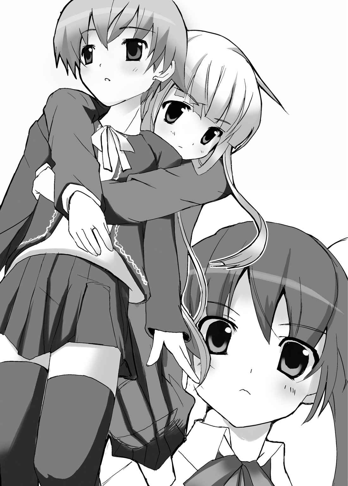
視線が定まらない瞳 で、ゆり絵をぼんやり見ているだけだ。
怒 りの感情がふくらんだ。
僚にぴったりだきついているこの幽霊は、私の僚をひとりじめしようとしている。それはゆり絵にとって、許せる筋合いのものではなかった。
「僚、戻りなさいっ!! 戻るのよっ!! 」
ゆり絵は、恋人の頬 に向けて平手を放った。手加減はしない。
手首のスナップを利かせた張り手が、僚の頬で右に左にと炸 裂 する。
紙風船をつぶしたような、ぱんと乾 いた音が連続して鳴り、僚の頬が赤く染まる。
彼の瞳に正気が戻った。
「あ、あれ......ゆ、ゆり絵......？ 痛ぇよ。なんで殴 るんだよぉっ？ な、なんだ？ うわぁっ。ぼ、僕、な、なんだよっ、この格好はっ!? うわーっ、へ、ヘンタイだぁっ!! ぼ、僕はどうなってしまったんだーっ」
さっきまで背後にぴったり抱き憑いていた幽霊の姿が消えている。
幽霊はいなくなったのか、あるいはまだ取り憑いたままなのかわからないが、身体の支配権は僚に戻っているようだ。
「僚、よかった......」
ゆり絵は女装の僚に抱きついた。
☆
僚は、ヒリヒリする頬の痛みと、抱きついてくるゆり絵の温かさに混乱していた。
ゆり絵と一 緒 に寝 て、次の瞬 間 には路上にいるのだからわけがわからない。しかも自分はパジャマではなく女装している。
頬に触 ると、指先に白いものがついた。ゆり絵がよくつけている、日焼けどめの効果のあるうっすら色づく乳液だ。お肌 のお手入れまでしたようだ。
今、自分が身に着けているのは、ゆり絵が昨夜、持ってきたものだろう。
胸に感じる確かな下着の感 触 はブラジャーだ。
しかも、お尻 と股 間 にぴったり張り付く面積の狭 い布の感触は、女物のショーツらしい。
――僕、下着まで着 替 えたんだ......。
「ネタじゃなかったのかよっ」
つい口に出してしまったところ、ゆり絵が眉 根 を寄せた。心配そうな顔をしている。
「なんのことよ？ 早く家に入ろう。もし誰かに見られたら、たいへんなことになっちゃう」
「そ、そうだね。岡 下 先 輩 とか沙 希 とかに見つかったら......」
押 し倒 されるかも、と続けようとしたときのことだった。
「如月さん？ あ、あれっ、滝 沢 くん、だよね？」
「ほんとだ。滝沢くんだよね？」
「ど、どうしたんだ。その格好？ スカート？ まさか......」
「な、なんで、滝沢くんが女装しているのよっ!? 」
聞き覚えのある声が響 いた。
――うわぁっ。最悪っ。
岡下留 香 と藤 宮 沙希が手を繋 ぎ、身体を寄せ合いながら立っている。
岡下先輩と沙希は桜の木の下で制服のリボンタイを交 換 し、契 りを交わした姉妹だ。
元女子高の桜井坂高校には、今でも姉妹制度が存在する。姉は妹を引き立てて、妹は姉を慕 う。
岡下先輩はご近所さんだ。姉妹なのだから、休日に二人でデートしてもおかしくない。
女子生徒からオスカル様との愛 称 で呼ばれて慕われる留香は、すっきりしたパンツルック。学園のアイドルの名を欲しいままにする沙希はフリフリのワンピース姿で、美少女ぶりを際だたせている。
二人は、ポカンと口を開いて僚を見ていた。
同じ学校の少年が、女装して道を歩いているのだから、驚 くのもムリはない。
――終わりだ。もう、僕は終わったんだ......。こんな姿を見られてしまった......。
二人は僚を軽 蔑 するだろう。
女装のヘンタイだというウワサが立ち、もう学校には行けなくなる。
えぐえぐとすすり泣く。
だが、姉妹たちの反応は、僚の想像を超 えたものだった。
「かわいいっ。ねぇ、お姉さま、滝沢くんってかわいいのね......」
「ああ、そうだな。似合う。そんなに似合うなんて思わなかった」
二人は顔を見合わせ、感心したようにうなずきあったのである。
「わーんっ」
沙希が無 邪 気 な感想を言い、留香が同意し、僚が泣きわめく。
「もう、早く入ろうよっ」
ゆり絵はオスカル様と学園のアイドルには目もくれず、僚の背中を押して家に戻 そうと必死になっている。
クラクションの音が響いた。
道ばたに赤いファイアットが停車した。
「えっ？」
いやな予感がした。こんなに目立つ派手な外車に乗る大人は、僚の知っている中ではひとりしかいない。
運転席のドアが開く。
プロポーションのいい身体に、高価そうなブランド物のワンピースを上品に着た女性が出てくる。
助手席からでてきたのはハンサムな少年だ。
古 泉 麻 子 養護教 諭 と、先生の彼氏の花 村 勇 作 。
逢 いたくなかった人たちの出現に、僚は背中を向け、両手で顔を覆 って細い肩 を震 わせた。
二人はびっくりして顔を見合わせている。
「あらあら、滝沢くん、かわいいわね。その格好は？」
「滝沢って、女の格好をするとやっぱりかわいいな。その洋服、すごく似合う」
保健室の先生と友達に、かわいいかわいいと連呼され、僚の男心がキズついた。
「うえっ。えぐっ、えぐえぐ......っ、ぐすぐすっ」
「私の僚をからかわないでよっ!! 」
泣きじゃくる僚を背中で守るようにして、ゆり絵が怒 鳴 る。
「如月さん。でも、滝沢ってかわいくないか？ 男のときは普 通 なのに、女の子になるとこんなにかわいくなるなんてサギだと思うよ」
「う、うん......そうだね......確かにかわいいけど......」
「わーんっ」
恋 人 にまで同意されてしまった僚は、盛大に泣きじゃくった。
「先生、おはようございます。ステキな車ですね。藤宮さんもそう思うだろう？」
「ほんとね岡下さん。古泉先生って、花村くんと一 緒 にお出かけなんですか？」
「おはよう。親 戚 なの。車はローンよ」
「岡下さんと藤宮さんだよね。こんなに朝早くからどうしたの？ 藤宮さんのリボンは、今日はピンクなんだね。岡下さんのその服すごく似合う」
「ええ、ちょっと」
僚がこんなにも困り果てているにもかかわらず、二組のカップルはなごやかにあいさつを交わしている。
ゆり絵がヒステリーを起こす。
「もうっ。うるさいわねっ。家に入るわよっ」
僚の手をぐいぐいと引っ張り、如月家に向かって歩いていった。
僚のすぐあとを、年の差カップルと姉妹カップルがぞろぞろとついていく。
☆
滝沢僚は困っていた。
オスカル様と沙希、養護教諭とイケメン少年、それに女性化した僚とゆり絵の三組のカップルは、如月家のリビングで頭をつきあわせて話し合っていた。
ゆり絵はきれい好きなので、リビングにはほこりひとつ落ちていない。だが、六人もの人間がいるため、さすがに狭 く息苦しい。
「お姉さま。どうしましょう」
「僕は、滝沢くんは、このままでもいいんじゃないかって思うんだ。だって、女性化した滝沢くん、かわいいぞ。ぼ、僕は～っ、かわいいものが好きだ～。だから僕は、沙希が好きだ～っ」
「愛、愛っ、私の愛。お姉さまに私の愛を捧 げます～」
まともに話していたのははじめだけで、沙希と留香が歌い出す。
宝 塚 な姉妹は、手を取り合って歌い踊 りはじめた。
二人の世界に入ってしまった姉妹たちは、もう僚や年の差カップルのことなど視界に入っていない。
「やっぱり性 転 換 薬買いましょう。百万ぐらい先生が出してあげるわ」
「麻子さん。いくらあなたがすご腕 のネットトレーダーだからと言って、お金のムダ使いはよくない」
「そうね。お金は、二人の将来のために使わなきゃね」
「ということは、僕のプロポーズ、受けてくれるのか？」
「あら、うふふ。どうしようかしら。だって、勇作くんはまだ若いし、心変わりするんじゃないかなって心配なの」
「そんなことしないよっ。麻子さん以上に魅 力 的 な女なんていないよっ」
「勇作くんっ」
「麻子さんっ」
年の差カップルはお互 いに手を取り合って見つめ合い、ピンクのハートを頭上から飛ばしている。
さっき、道ばたで逢 ったときは、自分たちの関係を隠 す理性は残っていたようなのに、理性のカケラもない宝塚姉妹に煽 られてしまったらしかった。
二組とも、お互いに内 緒 のつきあいを続けているはずなのに、そんなこと関係ないわとばかりにはしゃいでいるのだから無 邪 気 なものだ。
「もう、うるさいわねぇっ。あんたたち、関係ないんだから出ていってよっ!! 」
怒 るゆり絵に、宝塚姉妹と年の差カップルが交 互 に答える。
「関係あるぞ。僕が沙希と仲直りできたのは滝沢くんと如月さんのおかげだ。だから、僕たちは滝沢くんの手助けをしたいんだ。なっ。沙希？」
「そうよ。お姉さまっ」
「俺たちもそうだよ。麻子さんの美しさに気付けたのは如月さんのおかげさ。まっ。麻子さんは元からステキだけどね」
「まあ、いやだわ、勇作くんったら」
「それに俺は、かわいい女の子が困っているのに知らないフリはできないんだ」
殊 勝 なことを言うくせに、二組のカップルの誰もが、女性化した僚を、おもしろくてならないとばかりの視線で見ている。
しょせんは他人ごとなのだ。
一夜のうちに女性化し、男性のシンボルが無くなって、あげくに女装して路上をうろついてしまった僚の混乱や絶望は、彼らにはわからないのだろう。
「ひどいやっ。みんなーっ、僕は困ってるんだよ......っ。おもしろがらないでよーっ」
僚は悲鳴に近い声をあげ、イヤイヤをした。
リビングがシンとした。
「か、かわいい......」
「滝沢くんって、ホントかわいい」
僚の味方であるはずのゆり絵までもが、感 嘆 の表情で僚を見ている。
ムカッときた僚は、キュッと唇 を噛 んで立ちあがった。
しかし、足をもつれさせ、よろめいてしまう。
歩き出すとそうでもないのだが、もともと男性の身体だから、おっぱいやお尻 の重さに慣れていない。そもそも重心が違 うのである。
棚 に手をついたところ、棚の上に載せてあった缶が落ち、脳天を直 撃 した。
ゴツッ、と重い音が脳天に響 く。
脳裏が、墨 を流したように暗くなり、意識がブツッととぎれてしまう。
「きゃああっ」
「うわっ、だ、だいじょうぶか？」
誰のものともわからない悲鳴が重なり合う。
僚は、水の中に引きずりこまれるようにして意識を失った。
☆
「もう。死んだフリしないでよ」
ゆり絵は、ぐったりした僚を笑いながら助け起こした。あんな小さな缶 ひとつで、意識を失うわけがない。ふざけていると思ったのだ。
だが、僚は、ふらふらと立ちあがると、ゆり絵の手を払 いのけた。
「行かなきゃ......」
「えっ。ちょっ、ちょっと、僚？ どうしたの？」
「私、行くの。......約束があるから」
目の色がおかしい。
しゃべり方が違う。
僚が僚の意志で行動していたときは見えなかったのに、今は僚の背後に張り付いているセーラー服の少女の姿が見える。
僚が意識を失ったり眠 りこんだりして身体の支配権を取ると、取 り憑 いている幽 霊 の存在がクリアになるらしい。まるで恋 人 か何かのように僚に背中から抱 きついている。
「僚......じゃないわね？ あんた、誰？」
「私？ 私の名前？ ......わからない」
「あんた、階段の幽霊ね？」
「幽霊？ そうなの？ 私って幽霊なの？」
「あんたが幽霊でなきゃ、何だっていうのよっ!? 」
少女の姿をした僚は、ゆうれい、ゆうれい、と繰 り返した。
その様子は現状が信じられないようにも、何もかも忘れているようにも見えた。
二組のカップルは、顔を見合わせながら僚を見ている。
「如月さん。ごめんなさい。幽霊だとか、さっぱり話が見えないんだけど、説明してくれないかしら？」
保健室の先生が遠 慮 がちに聞いた。
皆 は、そうだそうだとばかりにうなずいている。
「すみません。先生。私もよくわかりません。なんか幽霊に取り憑かれてしまったみたいなんです」
「そうね。今の滝沢くんって、なんだかぜんぜん違うもの。この幽霊、女の子ね？」
「あーっ。知ってる。階段の幽霊っ！ カップルが仲良さそうにしていると嫉 妬 して、女の子の足をつかんで転ばせるって」
沙希が言った。
真性百 合 であることを隠 すため、あまり友達づきあいのない彼女でさえ知っているぐらいだから、階段の幽霊の学園伝説は、そうとう有名なのだろう。
「あ、見えるわ。滝沢くんの後ろ......何かしら。人 影 みたいな......。ど、どうして？ さっきまで何も見えなかったのに......なんでいきなり......」
古泉先生が僚の頭上を指さして、怖 そうにあとずさった。
宝 塚 姉妹と勇作は、不思議そうな表情を浮 かべている。
霊 感 があるのは、ゆり絵と古泉先生だけのようだ。
「いやだ。怖い......お姉さま」
「沙希、僕がいる。だいじょうぶだよ」
「お姉さまーっ」
「沙希ーっ」
ひっしとばかりに抱き合って陶 酔 にひたる姉妹たちはほうっておき、ゆり絵は僚の肩 をつかんで力いっぱいゆさぶった。
「何でなの？ 何がしたいの？ 何で僚に取り憑くの？ 生徒なんかいっぱいいっぱいいるじゃないっ!! 」
「さわらないで......けがらわしい」
幽霊は、ゆり絵の手を振 り払うと、気持ち悪そうに顔をしかめた。
「けがらわしいですってぇっ！ どっちがよっ!! 僚の身体を女性化するのはけがらわしくないってのっ!? 」
「如月さん、殴 らないであげてっ。身体は滝沢くんなのよっ!! 幽霊さんは痛くも痒 くもないのよっ」
保健室の先生の悲鳴が、ゆり絵のふりあげた手を止めさせた。
「女の子がそんなはしたないことをしてはいけないな......ここは俺にまかせてくれ」
花村勇作が僚の前に進み出た。
自信ありそうな態度に、皆の注目が集まる。
ゆり絵も期待の視線で勇作を見る。
「俺には君の心残りがわかるよ。カップルを見ると嫉妬して女の子の足を引っ張りたくなってしまうんだよね......しかも触 られるなんてけがらわしい、ってことは、君は処女だね？」
――何を言い出すのよっ。この万年発情男がっ!!
期待しただけに、落 胆 は大きくて、ケッと（内心で）声をあげる。
「処女のまま死んでしまったことが残念でたまらないんだろう？ だいじょうぶだよ。俺が君を女にしてあげる。天国にイカせてあげるよ」
勇作はエッチっぽい仕草で、僚の顎 のあたりをそっといじった。そして、男にしてはほっそりした指先で唇 の上をツンツンする。その仕草がおそろしくエッチっぽい。
勇作の放つフェロモンに、掛 け値 なしの処女であるゆり絵は後ずさるばかりだ。
百合姉妹も、ミュージカルをやめてよりそうと、手を取り合って気持ち悪そうに勇作を見ている。
――じょ、冗 談 だよね？ 脅 しているだけだよね？
だが、勇作の目の色が変わっている。
勇作は、バサッと音を立ててシャツを脱 ぎ、長 袖 のＴシャツもくるくると脱ぎ捨 てる。
つるんとした胸板があらわれた。
「きゃっ」
百合姉妹が悲鳴をあげた。
――ほ、本気？ イカす......って、天国にイクって......、や、やっぱり、そ、そういう意味なの......。
「心配しなくてもいいよ。ちゃんとコンドームは使うから」
勇作はにやっと笑い、縁 がギザギザになった五センチ四方のナイロンパックをジーンズのポケットから取り出した。
「いやっ。やめてっ」
「私の僚に何をするのっ!? 」
幽 霊 が悲鳴をあげ、ゆり絵が怒 鳴 る。
さらに、古泉先生の静かな声が交 錯 する。
「勇作くん、そこまでになさいな。私がいるのに、許さないわよ」
保健室の先生の声は、ひそめた口調だったにもかかわらず、如月家のリビングにぴいんと響 き、室温を急速冷 凍 した。
「い、いてっ。痛いよっ。麻子さんっ」
古泉先生が勇作の耳を持ってひっぱり寄せ、脇 腹 をギリギリとつねりあげる。メガネの奥 の瞳 が細められ、危険な色を宿していた。
勇作の顔が赤くなり、次に青くなり、また赤くなった。
そして、助けてくださいとばかりに両手をあげ、ご機 嫌 を取るようにして気弱に笑う。
「冗談だよ。麻子さん。俺が麻子さん以外に、気持ちを移すと思うかい？ 俺を信じてくれよ」
「信じられないわ。だって君、浮 気 性 だし。性 転 換 薬、使ってみる？ 植物人間になったら、私が世話をしてあげるわよ」
「どこが浮気性だよ。俺は、麻子さんと知り合ってから、麻子さん以外の女の子とセックスしていないよ」
「ほんとうに？」
「ほんとうだよ」
勇作は古泉先生を抱 き寄 せると、唇を重ねた。
「んっ......はぁ......ちゅぱっ......んっ、ちゅるっ」
「麻子さん......んっ、んぁっ......あぁっ、あっ」
二人の唇の間で赤い舌が蝶 々 の戯 れのように絡 み合い、顎を唾 液 が伝う。
勇作の手は、古泉先生の形のいい乳 房 を揉 みしだき、お尻 の丸みをなぞるように撫 でている。
とつぜん展開された年の差カップルのエロティックなペッティングに、幽霊の僚はぼぅっと二人をながめ、百 合 姉妹はドン引きしている。
ゆり絵は顔が真っ赤になっているありさまだ。
勇作の手は、保健室の先生の胸元を探っている。衿 から手を入れて、胸のふくらみを直接揉むつもりらしい。
それを見た瞬 間 、ゆり絵の堪 忍 袋 の緒 がぶちっと音を立てて切れた。
「ここは私ん家 よっ!! なにをやってるのっ!? どっかよそでやってよねっ」
さっき、僚が落とした缶 のフタを取りあげ、二人の頭を叩 く。ベコンベコンと音がした。
――こんなことなら、昨日、やっちゃえばよかったっ!! 僚を押 し倒 していいのは私だけなんだからっ。
昨日、せっかく二人でひとつ布団の中に入ったのに、眠 ってしまったのがかえすがえすも残念だ。
あのとき、僚のはじめてをもらっておけばよかったのだ。
女性化してようが、男性だろうが、僚は僚なのだから。
――でも、女同士って、どうやってするの？
百合志向のまったくないゆり絵は、頭からクエスチョンマークを飛ばしながら考えこんだ。視線が、自然と目の前の百合姉妹に行く。
――岡下先 輩 と藤宮さんって、どんなふうにしてセックスしているのかな？
「麻子さん、続きは車で」
「そうね。勇作くん」
年の差カップルは、腕 組 みをして出ていってしまった。ピンク色の空気が満ちていたリビングから、フェロモン臭 が消えていく。
「あの二人、つきあっていたのね」
今 頃 になって沙希が言った。
「そうなのよ。もう濃 くて濃くて......ああっ、もう、暑苦しいんだからぁっ!! あ、そうだ。学校では言わないであげてね」
「わかってる。僕たちだって、内 緒 の関係なんだから」
「そうよね。お姉さま」
ゆり絵が念を押すまでもない。
言われて困るのは百合姉妹も同じだ。
「えーと、その......あなたたち......女同士で......どうや......」
――どうやってセックスしているの？
とはさすがに聞けず、口ごもってしまったときのことだった。
「女同士じゃないかしら」
ゆり絵の考えていることを読みとったようなタイミングで、沙希が言った。
「はあっ？」
「ああ、僕もそう思う」
「お姉さまも？ だって、桜井坂の生徒ですもんね」
「この幽霊がいつ死んだのかはしらないが、桜井坂は三年前まで女子高だったんだよ。もし恋 愛 関係の未練があるなら、男であるわけがないよ。姉妹だよね」
二人は顔を見合わせてうなずき合っている。
「だったら、僕が......」
「お姉さま、私も」
「そうだね。じゃあ、二人で」
「滝沢くんに愛の世界を教えてあげましょう」
二人の声が見事にハモる。
彼女らは、しっかりと手をつなぎながら、僚を支配している幽 霊 に向かってにじり寄った。
いつもと違 って歌い出さないところが、彼女らの本気を感じさせて怖 い。
どうすることもできずにおろおろしているうちに、留香は僚の頬 に顔を近づけると、うなじにふっと息を吹 きかけ、耳たぶをそっとねぶった。
「あっ......あぁあっ......んっ、んんっ......」
反対側から沙希が同じ行 為 を繰 り返す。
そうとう気持ちがいいらしく、女装の僚が、身体をセクシーにくねらせる。その様子は、元が少年だということが信じられないほど、未熟な色っぽさにあふれていた。
「あん、んんんっ......ちゅるっ、ぺろっ......ふぅ......」
「あぁっ、か、かわいい、滝沢くんって......かわいい......」
――ふうん、女同士って、ペッティングだけをえんえん繰り返すわけ？
これではまるで、相手の身体を使ってする自 慰 行 為 みたいだ。
――これなら私でもできるかも......。
上気した顔を振 り、イヤイヤをする僚はアブナイ魅 力 にあふれている。イケナイものを見た気分で、両手で目を塞 いだが、好 奇 心 には勝てず、指を開いてすき間から三人を観察してしまう。
姉妹は左右から手を伸 ばし、僚の大きな乳 房 を片方ずつ揉 みしだきはじめた。カットソーの上からなので、感 触 はソフトなはずだが、手つきがやたらとねちっこい。
「あぁっ!! 」
僚が身体をビクビクッと震 わせる。
まるで電 撃 に打たれたようだった。
イケメンプレイボーイのペッティングもエッチっぽかったが、百 合 姉妹の二人がかりのＢは、見ているだけでおかしくなりそうに濃 厚 だ。
――もう、僚ってば、気持ち良くならないでよねっ!!
今、恋 人 の身体を支配しているのは僚ではなく見ず知らずの幽霊少女だと知っていても、百合姉妹の愛 撫 に気持ち良さそうにしている僚を見るのは不快だった。
「怖がらないで、僕たちが君をイカせてあげるから......」
「そうよ。女同士の良さを味わわせてあげるわ」
「いやよ、私、イキたくない......っ」
幽霊が僚の声でびくびくっと悶 える。
――イク？ そうだわっ!!
デビルベアを締 めあげて、この幽霊を魔 界 に連れて行かせれば、万事めでたしではないか！ 魔界に行った幽霊が成仏しようがどうしようが知ったことか。とにかく僚から離 れてくれたらいいのだから。
ちなみにゆり絵には、普 通 の人間ならすぐさま思いつく、「幽霊の望みを叶 えてあげて成仏してもらう」という発想はカケラもない。
いま、彼女の頭脳を支配しているのは、どうやってデビルベアを締めあげるかということだけだ。
僚には話さないほうがいいだろう。
ヘンにお人好しなところがあるから、幽霊に同情してかわいそうがるかもしれない。
僚を連れ回し、幽霊のことは知らさないようにして、彼の意識のないうちに用事を終わらせることにしよう。
――でも、どうやって意識を失わせたらいいの？ かなづちで頭を殴 ってみようかしら。でも、殺さない程度に殴るのってむずかしそう。
――お酒を飲ませようかしら。でも、急性 アルコール中毒で急逝 されても困るよね......。
――あ、そうだわ。あったじゃない、薬がっ！
検査入院が近づくと緊 張 して眠 れなくなるかもしれないからという理由で、病院がくれた睡 眠 導 入 剤 があったことを思い出した。
睡眠薬なんて怖いと言ったところ、薬 剤 師 はビール一本飲むよりも安全な薬だから、注意事 項 を守って飲めば大 丈 夫 だと確約した。
――完 璧 だわ！
ゆり絵はにやっと怪 しく笑うと、岡下先 輩 の手を沙希の乳房に、沙希の手を岡下先輩の乳房に当たるように手の位置を変えた。
二人は僚を後目に、お互 いの乳房を揉み始めた。
「ああんっ。お姉さまぁっ。気持ちいいわぁ......」
「沙希、ああ、君はどうしてこんなにもやわらかいんだっ」
二人はひっしと抱 き合った。もう僚のコトなんて、二人の脳裏から消え失せてしまっている。
言うまでもないことだが、二人にとって大事なのは、僚ではなく二人なのである。
「お姉さま、私たち、デートだったのよね？」
「そうだった。沙希、僕の家に帰って続きをしよう。愛～。それは愛～っ。愛あればこそーっ、僕は生きるー」
「愛～。それは愛～っ。愛あればこそーっ。私は生きるーっ」
二人は顔を見合わせてうなずきあう。手を取り合い、腕 を絡 め合うと、頬 と頬をくっつけあい、歌いだした。そして、歌い踊 りながら如月家を出ていく。
六人もの人間がいたリビングは、ゆり絵と僚、それに幽 霊 の三人だけになった。
「さて」
ゆり絵は、僚に向かいあうと、じろっと睨 み付けた。
「私、まだ、君の答え、聞いてないのよね。なんで僚に取 り憑 いたのよ？」
「......私も......不思議よ。こんなこと......今まで......誰にもできなかった。この人だけ......取り憑くことができたの......体質が......他の人と、違 っていたの」
僚の顔で、僚の声で、幽霊が答える。さっきまでさんざん触 られまくったせいか、息が乱れてしゃべりにくそうだ。
幽霊自身もとまどっているように見えた。
「あなたもそう。入れ替 わりやすい体質だわ。この僚って子とおんなじ......あ、そうだわ。今、思い出した。私の名前、りょうだわ。同じ名前なのね」
――あっ。そうか......。
やっとわかった。
デビルベアの言った体質変化。
一度魂 を入れ替えてしまうと、体質変化が生じて入れ替わりしやすくなる。
前回は、階段から落ちておでこをぶつけただけで、入れ替わりが起こってしまった。
相手が幽霊で、入れ替わるべき身体がないため、取り憑くという結果になったらしい。
「だったら、私に取り憑けばよかったのよ。私は元から女だから、女性化させなくてもすんだのに」
「私......、女性に......取り憑いたつもりだったのよ......」
女性に取り憑いたつもりだったのに男だった、というのはよくわかる。
たぶんこの幽霊は、階段から落ちたときに取り憑いたのだろう。
階段落ちが原因で、僚とゆり絵は入れ替わった。数日して魂が元に戻 り、幽霊は自分が取り憑いた魂が男であることに気付き呆 然 となる。
「だから僚の身体を女性化したわけ？」
「そう......。身体はあんがい簡単に変えられたの。でも、顔は変えられなかった。なんでかしらね。いちばん変えたいのは顔なのに」
ゆり絵は考えこんでしまった。
僚は、心の底で女性化を望んでいたのだろうか。ゆり絵の身体で生活したとき、うれしそうだったのを覚えている。
「私は霊 感 があるわ。私に取り憑いたほうが、都合がいいと思うわよ」
ゆり絵は幽霊に誘 いを掛 けた。
ゆり絵に取り憑いてくれたほうが、デビルベアを締 めあげて連れて行かせるのに都合がいい。
「あなたはイヤ......。怖 い......」
幽霊は、怖そうに後ずさった。
幽霊に怖がられてしまったゆり絵はかっとなった。怒 りのオーラが、彼女の周囲をぶわっととりまく。
「平気よ。私、怖くないわよ。少なくとも、幽霊に怖がられるほどじゃないわ......」
ゆり絵は僚に向かってにじり寄った。
すがめた瞳 で恋 人 を見つめているゆり絵は、泣いている子供さえ黙 りそうな迫 力 を放っている。
迫力負けしてしまった幽霊は、あっという間に壁 際 に追いつめられてしまった。怖そうに周囲を見回したが、二組のカップルはすでに出ていき、助けてくれる人はいない。
幽霊は知らないことながら、こういうときゆり絵をとりなすのは、本来僚の役割だ。
だが、彼は正気を失っている。
ゆり絵を止める存在はいない。
殴 られると思ったのだろう。幽霊は、目を閉じて顔を背 ける。
ゆり絵は、思ってもいない行動に出た。
僚の首に腕を回すと、唇 にキスをしたのだ。
自分の唇で、僚の唇を塞 ぐ。
「んっ......ふぅ......んんっ......」
掛け値 なしの処女であるゆり絵のキスは、年の差カップルと百 合 姉妹のキスにはとても及 ばない、不器用なキスだ。
だが、恋人を思うあまりの必死さから、息が止まるような長いキスになってしまう。
――僚！ 正気に戻ってよ。
「ぷっはぁっ」
唇をふさがれた僚は、息苦しさを覚えて盛大に息を吐 いた。
「あ、あれ、ゆり絵？ な、なんで？ ぼ、僕？」
「僚、よかった。戻ったのね！」
ゆり絵は、僚にしっかりと抱 きついた。頬 に頬を当て、よかった、よかった、と繰 り返している。
服越 しとはいえ、四つのふくらみがぽよんぽよんとぶつかり合う感 触 は鼻血ものだった。温かくてやわらかくてフワフワで、ほんとうに気持ちがいい。
女子高生のぷりんと張ったＦカップの乳 房 は、お互 いがお互いをはじき返し、ぽよんぽよんと弾 んでいる。
「デートしよう！」
突 然 、ゆり絵が言った。
「えっ？」
事態の深刻さは、少しも解消されていないのに、こんなときにのんきなことを言い出すゆり絵の気持ちがわからない。
「だ......ダメかな？」
ゆり絵らしくもない、すがりつくような表情にどきどきする。
「い、いいけど......」
☆
観覧車の前の写真撮 影 って、いったい何のためにあるのだろう。
デジカメなんていまどき誰でも持っているのだし、行列が長くなるだけの写真撮影なんて必要なさそうな気がする。
Ｖサインを出しておどけるゆり絵の横で、僚は居 心 地 悪そうにもじもじしながら、カメラの前に立っていた。
服装は、カットソーに丈 の短いブルゾン、ホットパンツにニーソックス、靴 だけが男物のスニーカーだ。
女装で出かける勇気のなかった僚は、ミニスカートをホットパンツに変えたのである。
Ｆカップの巨乳に、キュッとくびれたウエスト、長い手足はバービー人形そっくりだ。元々は男だからだろうか。中性的な格好がやたらと似合う。
恥 ずかしくて、カメラを直視できない。
大きなカメラを抱 えたお兄さんが言った。
「ホットパンツの彼女、こっち見てーっ」
彼女というのが自分のことだとは思わず、僚はカットソーの裾 を指先で引っ張っぱって伏 し目 がちになっている。
女性化した僚は、恥ずかしそうな様子が男性の劣 情 を刺 激 してやまない魅 力 にあふれていて、カメラマンがまぶしそうに目を細める。
「あっ、チョコレートが飛んできたーっ」
えっ、と顔をあげたが、すぐにウソだとわかり、笑みを漏 らした。
瞬 間 、カメラのフラッシュが光った。
「終わりでーす。写真、出口のところに出来てますんで、見てから帰ってくださいねー」
係員がドアを開けてくれた観覧車に、二人して乗りこむ。
係員は、気の強そうなツインテールと気の弱そうなショートカットの女子高生の二人連れに、ほほえましそうな視線を送る。
ゆり絵の服を借りているのだから当然なのだが、印象はまったく逆なのに、どこか似通った雰 囲 気 があり、姉妹のように見える。
「へえ、音楽を鳴らせるんだって。私の好みで選んでいい？」
「あ、ああ、いいよ」
すぐにＪ－ＰＯＰが流れ出す。男性のアーティストの歌うせつないバラードは、ゆらゆら揺 れるゴンドラにぴったりだった。
ゆり絵は、とろけそうな笑顔を浮 かべている。
――か、かわいいっ。
胸がじぃんと熱くなる。
あまり気が進まなかったのだが、デートしてよかった。ゆり絵のこんな笑顔を見られるのだから。
観覧車は、こんなにも女の子を笑顔にさせるのかと驚 かずにはいられない。
僚と一 緒 に歩いているときはツンケンすることが多いのに、今日は自然な態度で接してくれる。
女同士だから照 れ隠 しをする必要がないということだろう。ゆり絵と一緒に外出したのははじめてではないが、こんなにデートらしいデートははじめてだ。
自分の身体と服装がアレなのは、とりあえず考えないことにする。
「乗り放題パスが二千円って安いよね。ここ、入場料いらないし、観覧車とメリーゴーラウンドとコーヒーカップでペイできちゃったもん。あっ、ほら、ジェットコースターだよっ」
観覧車の真ん中を通っているジェットコースターが、轟 音 を立てながら滑 り落 ちていった。
心臓の悪いゆり絵は、ジェットコースターなど、絶 叫 系の乗り物がダメだ。うらやましそうにコースターを見あげている。
だが、心臓手術が成功したら、ジェットコースターにも乗れる。運動だってできる。
「検査入院、秋休みに決まったんだよな」
桜井坂高校は二学期制を取っていて、秋休みがある。
「うぅ、そうだよ。ドキドキするぅ。カテ検の前に、お墓参りに行こうかなって思ってるの。ご先祖様にお願いするの」
カテ検とは、カテーテル検査の略で、足の血管からカテーテルというクダを通し、心臓の状態を調べる検査である。
検査とはいえ危険が伴 うから、ご先祖様の霊 に手を合わせて、無事を祈 ろうというのだろう。
――霊......そうだ......。
「なぁ、ゆり絵、僕の女性化だけど......何か憑 いているんだと思うんだ」
「どうしてそう思うの？ 僚は幽 霊 なんか信じてないでしょ？」
僚はスピリチュアルなものを信じない現実主義者だ。
これは僚だけが特 殊 なのではなく、少年という生き物がそうなのである。
少女は怖 いモノ、不思議なモノ、ロマンチックなものが好きだが、少年は見えないものよりも、見えるもの、触 れるものが好きだ。
「だって、僕の中に、誰か別の人がいる感じがするんだ。でなきゃ、僕が意識を失う理由が説明できない。二重人格とかだったら、身体まで変わらないはずだし......」
☆
――マズイわね。
ゆり絵は動 揺 を押 し殺 し、平然とした顔を繕 った。
僚をデートに連れ出したのは、考える余 裕 を奪 うため。楽しい思いをさせてスキを見計らい、睡 眠 導 入 剤 を彼に飲ませて、深夜二時までに熟 睡 させる。
ゆり絵はにこにこと笑いながら席を立ち、僚の横に腰 掛 けた。
ゴンドラがゆらりと揺れる。
カットソーとホットパンツの僚は、どこから見ても少女、しかもとびきりの美少女だ。僚は男子にしては小 柄 なので、背の高さも違 和 感 がまるでない。
「えへへ」
ゆり絵は、側頭部を僚の肩 にコツンと乗せた。ツインテールの一房 が彼の首のあたりにサラリと触れる。彼はくすぐったそうに目を細めた。
「僚、好きよ......」
「ぼ、僕も、好きだよ」
ゆり絵らしくもない素直な甘 えっぷりに、僚がどぎまぎしているのが手に取るようにわかる。
「ど、どうして、こんな......人がいるのに......見られるよ......」
「そうね......」
ゆり絵が僚になつくのは、二人きりのときだけだ。
ゆっくりゆっくり上 昇 している観覧車は、密室とはいえ窓が大きいので、斜 め上 のゴンドラでおしゃべりしている大学生同士のカップルも、すぐ下のゴンドラではしゃいでいる家族連れもはっきり見える。
彼ら彼女らにも、女の子同士で肩を寄せ合うゆり絵と僚の姿はきっと見えていることだろう。
「僕が女の子だから？ 女って、女が好きなんだよな？」
――バカねっ!! 桜井坂高校に毒されてるわっ。そんなの偏 見 よっ!!
とは口に出さず、甘いセリフをささやいておく。
「言ったでしょ。私は僚が好きなんだって」
おでこを肩につけてスリスリすると、僚がごくんと喉 を鳴らした。
僚の身体から、女の子の甘い匂 いが香 ってくる。女性化すると、体 臭 までも変わるらしい。
「大好きよ。僚......。私は百 合 じゃないわ......。私は僚が好きなの......。男でも女でも、僚が好きなの......」
僚は、どこを見ていいかわからないというふうに、どぎまぎと視線を泳がせている。小刻みに震 えているのがくっついているところから伝わってきた。
ゆり絵はもじもじとホットパンツの裾 を引っ張っている彼（彼女）の手を取ると、自分の膝 の上にそっと乗せた。
ゆり絵は前ボタンのワンピースなので、僚さえその気なら、太 腿 だって乳 房 だって触 ることができる。
だが、僚は、ガチガチに緊 張 したまま、ゆり絵の膝の上で握 り拳 をつくって小刻みに震えている。
――もうっ。うざったいわねぇっ!! さっさと押し倒 しなさいよっ!! こんの甲 斐 性 なしっ!! なんのための観覧車なのよっ。
内心で吼 えながら、乳房を僚の肩 先 に押しつけるようにして、耳たぶをそっと噛 む。
朝、百合姉妹とイケメンプレイボーイのペッティングを見ていたので、やり方はなんとなくわかる。
見よう見まねの不器用な愛 撫 だが、恋 人 を思う真 摯 さが、自然と熱を帯びさせる。
僚の胸をカットソーの上からそっといじる。
誰かに見られてもかまわない。
親友同士がじゃれあっている光景にすぎないからだ。
女の子同士のおっぱいやお尻 のさわりっこや、ほっぺや唇 へのキスは「元気？」「おはよ」の挨 拶 と同じだ。
共学では男の目があるため、普 通 はおしゃべりを楽しむだけで、乳タッチなどめったにしないものなのだが、元女子高の桜井坂高校に通うゆり絵にはそんなことはわからない。
なんのことはない、桜井坂高校の女子高ノリに毒されているのは、ゆり絵も同じだったのである。
☆
「い、いや......やめてっ。ヘンな気分になっちゃう......」
僚は、うわずった声をあげて上半身をひねった。バラードがいったん終わり、またはじまった。
ゆり絵は、エッチっぽい手つきで胸のふくらみをそろそろと撫 でながら、耳やうなじへのキスを続けている。
「ど、どうして......？ どうしてなの？」
「これぐらい、みんなしてるじゃない？」
みんなしてるから私もするなんて、ゆり絵らしくない言葉だった。
何かと群れ集う桜井坂高校の少女たちの中にあっても、べたべたしない孤 高 さが、彼女の魅 力 だったのに。
――ゆり絵、何か......たくらんでる......？
そのとき、ゆり絵の指先が、胸のふくらみの先 端 のとがりをツンッと押 した。
「あぁっ!! 」
「僚、かわいい......。なんか、みんなの気持ち、わかるわ......こうしてると気持ちいい......」
ゆり絵は目 尻 を下げて、甘 い笑顔を浮 かべている。
――あれれ、ゆり絵、うれしそうだ......。
桜井坂高校で百合っぽいじゃれあいは日常茶飯だ。女の子どうしの過度なスキンシップは、男の僚にはまたやってるぐらいの認識しかないが、いちおう女の子であるゆり絵はうらやましさを感じながら見ていたのかもしれない。
――だったら、いいか......。ゆり絵が喜んでいるんだし......。
ゆり絵が耳にフウッと息を吹 きかけた。緊張がほどけ、ゾクゾクッとした戦 慄 が背中を走る。思考力が追いやられていく。
「あ、ンッ!! 」
「すごい......感じやすいんだぁ......。ほっぺた、真っ赤になってるよ。ふふっ。女の子の僚ってかわいいっ」
耳元でしゃべられると、うなじや耳に吐 息 がはじけてくすぐったい。
「い、いや......だ、だめ......」
いつの間にかゆり絵の手はカットソーをめくりあげて中に入り、ブラジャーに包まれた乳 房 を揉 んでいる。ひんやりした指先が、胸の谷間を探っている。
ぷち、と音がして、フロントホックがはずれた。
「きゃっ」
カップが中央から分かれ、中に収められていた胸乳がブラジャーの束 縛 から逃 れて、作りたてのプリンのように揺 れながら飛び出した。
数日前まで男性だったとは信じられないぐらい、形良く盛りあがった真っ白な胸乳だ。黒のカットソーを胸の上にまつわらせているせいか、よけいに白く見えるようだ。
乳輪は小さく、乳首はもっと小さい。彼女 の興奮を示すかのようにかわいらしくとがっている。
ゆり絵のひんやりした指がふくらみにからみつく。
ぷるぷるの指がお餅 でも捏 ねるようにして、敏 感 な乳房をねちっこくこねくってくる。
「あ......っ、んんっ......んっ、んん......っ」
まったくはじめての気持ち良さだ。
身体がかっと熱くなり、汗 のしずくがシットリと肌 を濡 らす。ふくよかな少年 の乳房は、油を塗 ったようにヌメッと光っている。
――女って、女同士って、気持ちいいよぉっ......。
「あっ、あぁあ......あぁっ......ゆ、ゆり絵......ゆり絵ぇ......っ」
ゆり絵は片手でおっぱいを揉みながら、もう片方の手で脇 腹 や背中を絶え間なく撫でさすった。
不器用な手つきだが、女だからこそ女の感じるところはわかるのだと言うような、熱の籠 もったペッティングだ。
熱い手つきに、こわばりが溶 かされていく。
「僚、好きよ......かわいい......大好き」
「あっ......あんっ......んんっ」
僚がみじろぐたびにゴンドラがユラユラ揺れる。
周りがまるで気にならない。もう、流れているはずのＪ－ＰＯＰさえ耳に入らない。
感 触 だけがすべてだった。
背中を触 っていたゆり絵の手が、太 腿 を撫でさする。
気持ちよさのあまりゆるんでいた太腿をあわてて閉じたところ、恋 人 の手を内太腿で挟 んでしまう結果になった。
「ふふっ」
ゆり絵はもぞもぞと指を動かして、太腿の内側を這 い進めていく。
もどかしく、くすぐったい刺 激 がたまらない。
「い、いや......だ、だめっ......だめぇえっ」
やがてゆり絵の指先が、ホットパンツの隙 間 から這い進み、ショーツの奥 底 へ到 達 した。
ジュン、と音がして、内側から噴 き出した液体がコットンショーツの二重布を熱く濡らす。
――女って気持ちいい......。僕、もうこのまま、女でいい。
――うわぁっ。僕、なんてことを考えてるんだ。僕は男だっ。男なんだぞーっ。
唐 突 にドアが開いた。
ほんとうに突 然 だった。
「お疲......」
遊園地の制服である緑のブルゾンを来た観覧車の係員が、あっけに取られた表情で百 合 百合しい二人を見ている。
気の弱そうなショートカットの美少女は、カットソーをめくりあげて乳房を剥 き出しにしているし、横に座っている驕 慢 そうな少女の手がホットパンツの中に入りこんでいる。言葉を失うのもムリはない。
「........................れさま、でした......」
いつの間にか、観覧車が一回転したらしい。開け放たれたドアから、あのカメラマンの姿が見える。びっくりしたのか、ぽかんと口を開けていた。
「きゃあっ、きゃあきゃあ、きゃあっ」
僚は、ワンテンポ遅 れで悲鳴をあげると、カットソーをおろして乳房を隠 した。
二人して、あわててゴンドラを下りる。
固い地面に降り立つと、少しだけ安 堵 した。
僚は顔を真っ赤にさせながら、前 屈 みになって胸を隠し、フロントホックをつけようと必死になっている。
ゆり絵は腕 組 みをすると、ツンと顎 をあげた。
「もう、僚子ちゃんったら、気持ち悪くなるんだもん。食べ過ぎよっ!! せっかくの観覧車だったのに、ぜんぜん外を見れなかったじゃないっ!! 」
「ご、ごめんね......ゆり絵ちゃん、許して......」
恋人の芝 居 に協力して、気持ち悪そうな表情をつくろう。
どぎまぎしていた係員は、ほっとした顔でうんうんとうなずく。
さっき見たアヤシイ光景は、百 合 の交合ではなく、気分が悪くなった友達を介 抱 している図だったのだと納得している様子だった。
――やった！ ホックつけられた......。
はじめて女性化したときは、フロントホックはぜんぜんダメだったのに、今では比 較 的 簡単につけられる。
もう三度目の女性化だから、いろいろなじんでいるらしい。そそくさと身だしなみを整える。
「お嬢 さん、顔、真っ赤ですよ。救護室がありますが、どうなさいます？ 休んでいかれますか？」
「だいじょうぶよ。もう平気。ご親切にありがとう」
僚はにこっと笑い、小首を傾 げた。
――うわっ。僕、かわいくね？
自分の身体の順応性の高さに舌を巻く。
昨日は、おっぱいの重さでボディバランスがつかめず何度も何度も転んだのに、たったの一日で慣れてしまうなんてウソみたいだ。
あんなにショックを受けたのに、人間というものは存外丈 夫 なのだと感心する。
「写真でーすっ。記念にいかがですかー」
出口の横に写真販 売 のブースがあり、若い女性の係員が写真を片手に客寄せをしている。
「はい。お姉さんっ、どうぞーっ」
ゆり絵の前に写真が突 き出された。
二枚折りの台紙に挟 みこまれた大きな写真で、観覧車のワゴンの前で、少女が二人、並んでポーズを取っている。
「あっ」
女の子にしか見えない。愛らしい笑顔にくらっとなった。
「か、かわいい......」
頭を殴 られた気分だ。さながら鐘 が鳴り響 くように、ぐわわーん、と鳴り響く。
「こ、これが僕？」
写真の自分は、どこから見ても女の子だった。遠 慮 がちな様子が、なんともいえず初々しい。
恥 ずかしくてろくに鏡を見なかったから、女装している自分を直視したのははじめてだ。
平 凡 な容姿をしたごく普 通 の少年だと思っていた。だが、女の子になると、こんなにもかわいい。
「うん。そうだね。君、かわいいよ。ツインテールの彼女もなかなかだねっ。ウチのカメラマン、優 秀 でしょーっ」
「それ頂くわ」
「えっ。か、買うのか？」
ゆり絵はあっさりお金を出して写真を購 入 した。係員が渡 してくれた写真入りの赤いナイロン袋 を下げて歩き出す。
僚は、脳裏に鳴り響くショックの余 韻 にひたりながら、よろよろとゆり絵のあとをついて歩いた。
☆
誘 惑 が不発に終わったゆり絵は、内心であせりまくっていた。もっと彼を気持ち良くさせて、ゆり絵以外見えなくさせてやるつもりだったのに、予想より早く観覧車が到 着 してしまったのだ。
僚はつくねんと立ち止まり、ぼんやりと上空だの人混みだのを眺 めている。心ここにあらずという雰 囲 気 だ。
僚のその様子は、ゆり絵には考え事にふけっているように見えた。考えさせてはいけない。今すぐ何かしなくては。
「僚、あれ買おっ！」
ゆり絵は写真の袋を僚の胸もとに押 しつけると売店に走り、ソフトクリームをふたつ買った。
戻 ろうとして、あれっと声をあげる。
僚は、ナイロン袋から写真を出し、しげしげと見ていたのだ。目の色が違 っている。喜んでいるようなくすぐったいような、そんな表情だ。
「どうしたの？」
声を掛 けると、僚ははっきりと動 揺 し、あわてて写真を閉じた。
「こ、これは違うっ!! 」
「何が違うの？ ......そこ座ろ」
僚にソフトクリームをひとつ持たせ、ちょうどよく空いた椅子に二人して腰 掛 ける。
「食べよ」
「ありがと。お金、払 うよ」
「いいよ。おごっちゃう。そのかわり、お昼ご飯、おごってもらうからねッ」
二人してソフトクリームを食べながら、二つ折りの台紙を開いてテーブルに置き、向かい合う席の僚に写真を向ける。
「んふふーっ。アイス、おいしー。......よく撮 れてるよねー。写真の僚、すごくかわいい。女の子にしか見えないや」
「う......ゆ、ゆり絵も、そう思う？ ぼ、僕のうぬぼれじゃない、よな......」
「あれっ。僚ってさ、もしかして、かわいいのがうれしいの？」
ちょっと言ってみただけなのに、僚の顔がかっと赤くなった。
僚はうつむくと、黙 りこんでソフトクリームを食べた。
――図星だったみたいね。
ゆり絵も僚に合わせ、もくもくとソフトクリームを食べる。
僚の視線が、ちらちらと写真に行く。ゆり絵ではなく、ホットパンツの自分をしげしげと眺めている。
食べ終わってから、ぽつりと僚が言った。
「お、おかしい、よな？ 僕、お、男なのに......」
「ううん。ぜんぜんおかしくないよ」
「おかしくない？ ......かわいいのがうれしいなんて、ナルシストのヘンタイみたいじゃないか？」
「僚はヘンタイじゃないことは、私が知ってるわ」
「そうだよ。僕はノーマルだ。ゆり絵が好きだしなっ」
横を歩いていた大学生らしいカップルが、ぎょっとして足を止めた。百 合 百合しい二人を怖 そうに眺め、指さしながら、ささやきあっている。
――レズだわ。
――カップル？ 女の子同士で？
――ヘンタイ？ あんなにかわいいのにもったいない......。
だが、ウワサの的になっている二人は平然としたものだ。
ゆり絵は大好きな少年から、面と向かって好きだと言われたうれしさでにまにましていて、ギャラリーのドン引きなどどうでもよくなっている。
いっぽう僚は、女性化した自分のかわいさに感動しているらしく、こちらも周囲の視線が気にならない様子だ。
ゆり絵は、僚に如 才 なく話を合わせておく。
「僚のそれって、変身願望でしょ？ 誰だってそういう感情あると思うわ。当たり前のことだよ」
「そ、そっか、僕はヘンタイじゃないんだ......よ、よかった......」
ゆり絵は、ここぞとばかりに切りこんだ。
「もっとかわいくしてみない？」
「そうだね。したい......してみたい......」
「じゃあ、遊園地、出ちゃっていい？ 行きたいところがあるの。ここからだと、ちょっと歩くけど」
ソフトクリームを食べ終わったゆり絵は、コーンを包んでいた紙をクシャッと丸めて席を立つ。
「いいけど、どこへ行くんだ？」
「メイクスタンド」
「えっ？ 何？」
「いいから」
ゆり絵は紙をゴミバコに放り入れると、僚の手を握 り歩き出した。
☆
そこは、さながらファッションショーの楽屋裏だった。
ずらりと並んだ鏡の前に女の子たちが陣 取 り、思い思いに化 粧 している。
化粧品の匂 いと少女たちのおしゃべり、彼女たちの放つ体 臭 で、ためらってしまうほどに甘 いピンクの空気が立ちこめている。
ゆり絵は、角のコーナーを指さした。
「あそこにある化粧品、自由に試せるの」
「へえ......」
さまざまな大きさの綺 麗 な瓶 に、何十本も並んだ口紅、カラフルなアイシャドー、使用用途のわからないかわいいものが整然と並んでいる。
その様子は、デパートの化粧品コーナーを思い起こさせた。
女の子たちが持って帰らないようにという配 慮 だろう。どれもこれもフタがないのが珍 しい。
「料金は？」
「タダよ」
「えっと、その、座席料とか？」
「化粧品を試してみて、気に入ったらお店で買ってね、ってコトだから無料だってば。メーカーとしては、試供品配るのと、たいして費用が変わらないんでしょ。女の子って、化粧品は試してからでないと買わないからね」
「そういうもんなのか......」
「当然でしょ。肌 に合わない化粧品なんて使えないもの。座ってよ。メイク、してあげるから」
「い、いいよ。そんな、恥 ずかしい」
「いいから早く座りなさい。せっかく空席があるんだから」
しりごみする僚の背中をゆり絵が押 す。僚はしかたなく鏡の前に座り、鏡に映る自分をしげしげと見た。
自分で自分に見とれるなんて、まるでナルシストだと思いながらも、視線を外すことができない。
コーナーと僚の席を往復したゆり絵は、鏡の前に化粧品のボトルを並べた。
「まずはスキンケアからね」
化粧水の冷たさに首をすくめる。ゆり絵は慣れた手つきでクリームを肌に伸 ばすと、ファンデーションを指先で伸ばしていく。
「ここ、よく来るのか？」
「最近ね。化粧品を試せるから......。口紅塗 るからしゃべるのやめて。はみ出るわよ」
僚は、あわてて口を閉じた。
ゆり絵の細い指が顎 を持ち、もう片方の手が操る紅筆が唇 の上を這 う。ひんやりした感 触 だ。
「いいわよ。くわえてぱくぱくして」
ゆり絵から渡 されたティッシュをくわえ、言われるままにぱくぱくする。
「これすると、口紅のよけいな油が落ちて、口紅が食器とか服とかにつかなくなるの」
「ふうん」
口紅は淡 いピンク色だったが、唇の輪 郭 がくっきりしただけで、顔がずいぶん違 って見える。
――これが僕の顔なのかぁ。
不思議な気分で鏡に写る自分を眺 める。
「アイシャドーはどうしよう？ 流行はゴールドだけど、僚はスッキリした顔だちだから、ブルーグレーのほうが似合うかな。アイラインは紺 色 ね。マスカラつけるから下向いて。違うの、顔ごと下向けるんじゃなくて目の玉だけ下を向いて欲しいのよ。まばたきしちゃダメだよ。目の下にマスカラがついてタヌキになるから」
言われるままに下のほうを眺めていると上のまつげを黒いハケが掃 いた。がんばって瞳 を見開き、タヌキにならないようにする。
「もういいよ。目、閉じて」
ゆり絵は、手の甲 にアイシャドーをつけて彩 度 を測ると、ススッとシャドーを伸ばした。手早くアイラインを入れる。
「はい。いいわよ」
目を見開くと、ぱっちりした目をした女の子がそこにいた。
「こ、これが僕？」
「そうよ。ふふっ、いい出来～っ。かわいいでしょーっ。僚ってさ、化 粧 映えするタイプなのよね」
つやつやの肌に形のいい眉 、くっきりした瞳、花びらのようなピンクの唇。長いまつげ。見るからに繊 細 でかわいらしい。
女性化しているから当然とはいえ、どこから見てもおしとやかな内気少女だ。
僚は、立ちあがり、鏡に全身を映した。
ホットパンツは少年っぽいアイテムだが、そのそっけなさが逆にプロポーションの良さを引き立てている。カットソーの胸元を盛りあげる双 つの胸のふくらみと、砂時計のようにくびれた脇腹、きゅっと締 まったお尻 がなかなかエロい。
――ほ、惚 れて、しまいそうだ......。
「私も化粧しちゃおっかな」
僚は、ゆり絵に席を譲 った。
ゆり絵は、慣れた手つきでマスカラを塗り始めた。
てきぱきと化粧し、あっというまに終わってしまう。
ゆり絵はコーナーに化粧品を戻 すと、コットンやテッシュなどのごみを捨て、さらにティッシュで鏡の下の台をせっせと拭 いた。
綺 麗 好 きのゆり絵らしい几 帳 面 さで、席に座る前より綺 麗 になったほどだ。
「なんか、姉妹みたいだ......」
「ふふっ。服の好みも一 緒 だし。化粧のやり方、同じだから、顔立ちが似て見えるかも。プロのメイクアップアーティストは、人によって化粧のしかたを変えるそうだけど。私じゃそこまでいかないの」
「で、でも、ゆり絵の化粧、うまいよ。だって、女の子に見えるもんな」
「僚は美少女 だよ」
まるで別の人間になったみたいだ。
うきうきと気持ちが弾 む。
「ありがとう！ そうかっ。僕って、美少女なんだっ」
「じゃあさ、次は、ファンシーショップに行ってみようか？ その次は、アジアンカフェなんてどう？ アジアンスイーツ、食べたいんだ。マンゴープリンがおいしいんだって」
「いいよ」
二人は手を繋 いで歩き出した。
ゆり絵は上 機 嫌 だった。目が合うたびに、楽しくてならないとばかりに笑顔を浮 かべる。
「彼女たち、ヒマ？」
大学生らしい二人連れの男が声を掛 けてきた。
軽 薄 そうな雰 囲 気 だ。
「ヒマだったら、お茶でもどう？」
「ヒマじゃないわ」
ゆり絵はツンと顎をあげ、僚の手を引いて行ってしまった。
「もしかして、ナンパ？」
「みたいね。僚がかわいい女の子に見えるんでしょ？」
「は......」
うれしいような、困ったような、妙 な気分だ。
ショーウインドーに映った自分の姿を確認し、にっこりと笑いかける。
――かわいい女の子......。
「そ、そうか......そうなんだ」
顔がにやけてしまい、はっとして頬 を押 さえる。
――ぼ、僕、男なのにっ。男なのにぃっ。
ナンパされて喜ぶなんて、これではまるでヘンタイだ。
ゆり絵が不 愉 快 になっているのではないかと思い、どきどきしながら彼女を見る。
だが、ゆり絵は怒 り出さなかった。遠い目をして、ぼうっとしている。
――ゆり絵、何を考えているんだよ......。
ほんの一 瞬 浮 かんだ疑問は、目の前に現れたファンシーショップの前に消えてしまった。
ぬいぐるみや人形、小物など、ファンシーなかわいいものがこぼれんばかりに置かれた店は、ピンクの空気と女の子たちであふれていたのである。
男にとっては女子トイレや女子更 衣 室 よりも遠く、恥 ずかしい空間だ。
たくさんのぬいぐるみたちのコビた視線にさらされて、背筋がゾクゾクしてしまう。
他校の制服の女の子たちが、マグカップを選んでいる。
「ね、これ、カワイイ。買おうかな」
「やぁだ。そんなのどうするの？」
「カレの誕生プレゼントだよーんっ」
「えーい、悔 しいっ、おっぱい揉 んでやるーっ」
「やだぁっ。もう、触 らないでぇっ」
「私も触ってやるっ。どうだ～っ」
僚のすぐ横で、見知らぬ女の子たちがきゃあきゃあと悲鳴をあげながらじゃれあいはじめた。
「あの子たち、女子高ね......」
ゆり絵があきれた口調で言った。
僚は同意することも忘れ、あっけに取られて彼女らを眺 める。
女の子の小さな手の下で、乳 房 がむにゅっと変形する様子が見える。
ノーマルな男は、男性器の揉み合いなんかしないのに、女の子たちというものは、男の目のないところで、乳タッチだの乳揉みだのをやりたがる生き物らしい。
さながら猿 のノミ取りのように。
甘 い汗 の匂 いがムワッとばかりに香 ってくる。下半身に来る匂いだった。
――うぅ、勃 起 しそう......。
無意識にホットパンツの股 間 を押さえる。
いつもそこにある物体の感 触 がまるで無く、ふんわりふわふわぬくぬくの、アソコの感触が返ってくる。
――は、そ、そうだった。僕、今、チンポ、無いんだった......。
恥ずかしくなり、話題を変える。
「ぼ、僕っ、ネッシーのマグカップ探してみよっかな......」
「そうね」
ゆり絵はにこにこと笑っている。
――ゆり絵、いったい何を考えているんだ......？
僚はいまひとつ、ゆり絵の真意がつかめないでいた。
☆
姉妹のような美少女二人が、男たちの視線を集めながら、ファンシーショップのウインドーショッピングやカフェのスイーツを楽しんでいるちょうどその頃......。
道ばたに止めた赤いファイアットの中で、保健室の古泉麻子先生が、ケータイをじっと眺めていた。
助手席では恋 人 の勇作が居 眠 りしている。
「あらいやだ。妙なことになってるわ......」
会員登録した人間だけがアクセスできる『ユーマニスト』の掲 示 板 だ。
【願いを叶 えるぬいぐるみをＧＥＴしませんか。召 喚 の儀 式 を一 緒 に行ってくれる人を募 集 します。Ｔ県Ｔ市Ｓ高校の屋上。十月二十五日土曜日の午後五時。ホロスコープで確認したところ、召喚の儀式に都合の良い日に当たっていました。魔 法 陣 は私が描 きます。二十五日は文化祭です。チケット制ですが誰でも入れます。参加希望の人はメールしてください】
一緒にピクニックに行きませんか？ というような、軽いノリの書きこみだった。Ｓ高校という文字を見て考えこむ。十月二十五日に文化祭を行うＳ高校なんて、桜井坂高校以外にありえない。
――私のせいかも......。
デビルベアを捕 獲 したさい、この掲示板に質問をアップした。もちろん個人情報は書きこまなかったが、桜井坂の生徒や教員なら、ああウチの高校だな、とピンと来るだろう。
おまけにオフに行き、デビルベアのことを話してしまった。
桜井坂の文化祭は、女子高だったときの伝統を引き継 いで、外部の人間の入場についてはチケット制になっている。
だが、チケットはネットオークションでも手に入るから、まさしく『誰でも入れる』状態だ。
元女子高の桜井坂高校は女子比率が高く、他校の男子高校生が文化祭に行きたがる高校のひとつなのである。
――どうしよう。どうしたらいいの。どうやったら止められる？
――召喚の儀式って、何をするつもりなの？ 魔法陣なんて、まさか悪 魔 召 喚 じゃないでしょうね。もしも悪魔召喚なら、魔 界 のゲートが開いてしまう。危険だわ......。
養護教 諭 である古泉先生にとって、自分のせいで生徒が危険な目に遭 うかもしれないという想像は、恐 怖 以外の何ものでもなかった。
第３章 イクと逝 くは同じ昇天
【チケットは私が用意します。駅の前に並んでいる公衆電話の、いちばん右のボックスのＴ市のタウンページの最後のページに張り付けておきます。動物の着ぐるみを用意しておいでください。現地集合です】
彼は単身者用の狭 いアパートでパソコンに向かいながら、メールの返信をせっせと送信していた。
儀式まで日がないので、参加希望者は少ないのではないかと思っていたのだが、意外にも二十通ほどの返信があった。
【召喚の儀式とはどんなことをするのでしょうか？】
掲示板にアップされた質問にも律 儀 に返信する。
【儀式の内容については、参加希望者にのみ説明します。参加者に危険は及 ばないことを約束します】
参加者は何人ぐらいになるだろう。
メールの一通一通から、いろんな願いが透 けて見える気分になる。
彼の叶えたい願いはひとつだけ。
――彼女を目覚めさせる。
彼女の笑い声、彼女の手の温かさ。
ふざけて抱 きついてきたときのやわらかい胸乳の感 触 。すべすべの髪 の感触。耳元ではじける甘 い吐 息 。
もう十年以上前なのに、今でも鮮 明 に覚えている。
ぬいぐるみを召喚できればよし。
仮に召喚できなくてもかまわない。
儀式そのものが、きっと彼女を目覚めさせる。
真夜中のアパートに、キーボードを打つ音がカタカタ響 く。
☆
深夜を過ぎた洗面所は緊 張 感に満ちて、静まり返っていた。
如月 家の洗面台は、鏡の下のほうに、デジタル時計がはめこまれている。
数字が音もなく動き、「2：00」を表示した。
「デビルベア、いる？」
ピンクの花 柄 のパジャマを着たゆり絵 は、ぴりぴりした気配を漂 わせながら、鏡に向かって話しかける。
いつもはツインテールに結んでいる黒 髪 はとき流してあり、薄 い肩 を覆 っている。
返事がない。
――どうして返事をしないのよっ!?
デビルベアは、魔界に帰る寸前、用事があるときは深夜の二時に鏡に向かって話しかけるようにと言い残した。
「デビルベア、答えて」
再度、問いかけたときのことだった。
「お呼びでっか？」
自分の顔が映っていた鏡が水面のように揺 れ、グレイに濁 ったと思う間もなく、クマのぬいぐるみの姿に取って代わった。
「ゆり絵はん。お久しゅう。えろうお疲 れのようでんな」
昼間、一日中出歩いただけでも疲れているのに、デビルベアと話せるチャンスは深夜の二時。だから、ずっと起きていた。
体力がないゆり絵には、大変な一日だった。発作を起こさなかったのが不思議なぐらいだ。
――そうね。疲れた顔をしてるかもしれないわね。二時だしね......。
とは口に出さない。弱みを見せてたまるものか。
「あら、そんなこと無くてよ」
デビルベアを威 嚇 するつもりで腕 組 みをし、クッと小さな顎 をあげる。芝居めいた口調になった。
「君にお願いがあるの。コレだけど」
ゆり絵は足下に転がっているコレをつま先でツンツンした。ぴくりとも動かない。
ぬいぐるみの視線が下の方へ動き、すぐに驚 愕 の色に染められる。
「そ、それは、なんでっか？」
「僚 よ」
「僚はん......か、かわいそうに......っ。女装ＳＭプレイでっかっ。そ、そりゃ、お疲れどすわなぁ。その胸、パッドか何かでっか？」
ブルーストライプの男物のパジャマを着ているものの、どこから見ても女の子な彼は、リボンだのヒモだのロープだのでぐるぐる巻きにされ、洗面所の前の廊 下 に転がっていた。
晩ご飯のあと、パジャマパーティと称 して僚を引き留め、お風 呂 に交 互 に入ったあと、睡 眠 導入剤 入りのジュースを飲ませた。
もう五時間ぐらいぐっすり寝 ている。
幽 霊 が起きそうで気が気でない。いくらヒモでぐるぐる巻きにしたとはいえ、自分の握 力 のなさはわかっている。
リビングで眠りこんだ彼を、洗面所まで引っ張っていくのも重労働だった。
「パッドじゃないわ。僚に憑 いているものが悪さをしたの」
「へえ。確かに僚はんの上に、なんかおまんな。若い女の霊 どすな。何でっしゃろ？ 幽霊とはちょっと違 うみたいやけど、このお人、えろう思い詰 めてはるみたいどすな。僚はん、えらいもんに気に入られましたもんやな」
ゆり絵は本題を切り出した。
「この幽霊、魔 界 に持っていって欲しいの」
「ほなら、死神、呼んできまひょ」
「そんな時間はないの」
「すぐどっせ。地 獄 と天国と魔界とは向こう三軒 両 隣 でっさかい」
「今すぐ魔界に持っていけって言ってるのよ」
ゆり絵の声がすごみを帯びた。彼女の周囲をどす黒い迫 力 がオーラのように取り巻く。
体調が悪いと、機 嫌 までも悪くなる。今にも臨界点に達しそうだ。
デビルベアは落ち着いていた。
怒 っているゆり絵は怖 いが、鏡の向こうとこちらにいるから何ができるわけもないと思っている。
「ムチャ言わはりますなや。人間の霊を悪 魔 が魔界に持っていくなんて、ルール違 反 どすがな」
「じゃあ、持っていかなくちゃならないようにしてあげる」
ゆり絵は鏡に向かって手を伸 ばすと、あろうことかデビルベアの頭をむんずとつかんだ。ゆり絵が手を入れると同時に鏡はグレイに濁り、濃 く立ちこめた霧 のように手 応 えを感じない。
「わーっ。わぁあっ。わぁーっ」
――えっ。持てちゃった？ わーっ。すごいーっ。鏡の中に手が入っちゃったわ！ 私ってば鏡の国のアリスみたいじゃないのっ!?
涙 を滂 沱 と流しながら、小さな手足をじたばたさせて暴れるデビルベアの頭を両手でしっかりつかみ、こちらの世界へと引きずりだす。
鏡の中からデビルベアの小さな身体が少しずつ実体化し、やがてすぽんと音を立てて、全身が出てきた。
「ぎゃあっ」
さながら、大根を抜 いた感じだった。
「きゃっ」
ゆり絵は勢いで尻 餅 をつき、ヒモだのロープだのリボンだのでぐるぐる巻きにされて横たわっている僚の上に勢いよく倒 れこむ。
ゆり絵のお尻 がドーンとばかりにのってしまい、睡眠導入剤で意識がないはずの僚がぐぇぇ、とうめく。
「な、なんて、なんてこと......なんでこんなことが......」
デビルベアは暴れるのも忘れて呆 然 としている。我が身に起こっていることが信じられないという表情だ。
「そんなこと、私もわかんないわよ。ほら、時の潮が満ちてたんじゃないの？」
ゆり絵は、デビルベアをしっかりとつかんだままで答えた。手を離すと逃 げられてしまいそうだから、僚の身体に腰 掛 けたままで両足をあげ、勢いをつけて身体を起こす。僚がまた、ぐぇっとうめく。
「た、たしかに、いま、満ちてる最中やけど......満潮までまだまだやのに......合わせ鏡もしてへんのに......ゆ、ゆり絵はん、ほんまに人間なんでっか......」
「失礼ねっ。私は人間だってばっ!! 」
「ひぃいぃーっ。恐 ろしい恐ろしい......ゆり絵はんは、悪魔よりも恐ろしほすなぁ。悪 霊 退散悪霊退散っ」
デビルベアは、盛大に震 えながら、ぽろぽろと涙をこぼした。ぬいぐるみを抱 きしめているゆり絵に、振 動 が伝わってくるほどだ。肩 こりをほぐす、リラックスグッズを連想させた。
――これ商品化したら売れるかもね......。
どうでもいいことをちょっとだけ考えた。
あまりの怯 えように、いじめてやりたい気分が誘 発 されるが、遊んでいるヒマはない。
「ほら、早くしないと、扉 が開いたときに戻 れないわよっ。地獄と天国と魔界は向こう三軒両隣なんでしょっ。早く霊を持っていってっ。扉が開いている最中だって言ってたじゃない？」
「そ、その通りやっ。ゆり絵はんっ、手を離してくださいっ!! 」
ゆり絵が手を離すと同時に、デビルベアは鏡に向かってぽーんと飛びあがった。
「逃げたわねっ」
あわてて手を伸ばすが、デビルベアが首に巻いているリボンをかすめただけだ。
デビルベアは、びちゃっと鏡にぶつかって、ぎゃいんとかわいい悲鳴をあげると、ずるずると鏡から滑 り落ちていく。
それを何度か繰 り返す。
デビルベアはへなへなと水道の蛇 口 に降り立った。
水道の蛇口をベンチ代わりにして、力無く腰 を下ろす。そして頭を抱 え、背中を反らして苦 悶 する。
「あかんっ。やっぱ入れへんっ。時の潮が全部満ちてしまわんと入れへんのやーっ。何でやーっ。何でなんやーっ。ゆり絵はんは、あんなに簡単にできはったのにっ」
「早くしなさいって言ってるのよっ。ほらほらっ」
ゆり絵はぎゃんぎゃん騒 いでいるデビルベアをつかむと、ぐるぐる巻きの僚の肩に押 しつけた。
ぬいぐるみがじたばたしているので、スリッパを履 いた片足をドカッと乗せて動きを封 じる。
ピンクのパジャマのゆり絵は、僚とぬいぐるみに足を乗せた女王様とお呼びポーズで腕 組 みをした。
いくら薬を盛ったとはいえ、もう五時間ほど経っている。耳元で大 騒 ぎしているうえに、クッション代わりにしてしまったのだ。僚が起き出しそうで気が気でない。
「ゆり絵はん。確かに合わせ鏡してくれはりますんやな」
デビルベアはゆり絵のスリッパの下でひしゃげた顔をこちらに向けながら、情けなさそうな声で言った。
――やったわっ！
ゆり絵は内心で快 哉 を叫 んだ。ここぞとばかりに甘 い声で言う。
「ええっ。もちろんよ。早くコレを出して、魔 界 だろうが地 獄 だろうが天国だろうが捨ててきて。私の僚を返してよ。そうしたら合わせ鏡をしてあげるわ」
ゆり絵は洗面台の横の棚 に置いてあったコンパクトを開いて見せた。鏡が銀色に光っている。
「あと何時間で扉が開くの？」
「えーと」
デビルベアは鏡の下のデジタル時計を見て指を折った。
「あと十分ぐらいどっせ」
「十分っ!? 迷っているヒマないわよ」
「ほ、ほんまどすわ。ほ、ほな、やりますわ。ゆり絵はんっ。足離してつかあさいっ。頭の上にスリッパ載 ってたら、魔法使うこともできしまへんがな。ちょっと離 れてもらえますか」
ゆり絵は、言われる通り僚とデビルベアの上に乗せていた足をおろして女王様ポーズをやめると、五歩ほど後ずさった。
デビルベアは、小さな手で僚の肩 口 をつかむと、黒い丸ボタンでできた瞳 を、カタカナのシの字にしながらうなり声をあげた。
さながら綱 引 きをしているみたいに、力一 杯 身体を反らす。
「ううーっ。お姉さんっ、ワシと、イキまひょっ。うーっ、うぅっ」
「う、うわ、な、なんだ？ ......な、何で僕、し、縛 られて、るんだ......？」
「い、いや、いやなのっ。私はイキたくないっ。文化祭が終わるまではイケないのよ......っ。私、無くしたのよ。無くしてしまったものがあるの......」
僚が目を覚まし、幽 霊 が嫌 がって悶 える。
緊縛 状態の僚の周辺に、緊迫 した空気が立ちこめる。
僚の身体は薬の効果で動きが鈍 い。ろれつも回っていないから、まだ完全には起き出していない。幽霊を引き剥 がすことに成功すれば、再び眠 りに落ちるだろう。
デビルベアに魔 力 で引っ張られている女の幽霊は、まるで絶息する動物のようにエロっぽく悶えている。
「いやよ、文化祭までは......、お、お願いっ。イカせないでっ。あーっ、あんっ、ああぁーっ」
引っ張り出そうとするデビルベアに抵 抗 し、幽霊は引っ張り出されまいとして僚にぎゅうっと抱 きつく。
「い、いやよっ。痛く、しないで......あぁっ、だめぇっ。いやーっ。こ、こんなのはじめてよぉーっ」
「イカせてやりまっさっ。ど、どうやっ。どないやっ。おらおらっ......うーっ、うぅっ」
声だけ聞いていると、中年オヤジがいたいけな少女を欲望のえじきにして、組 み敷 いているみたいだ。
「な、何だっ？ ひ、引き剥がされる？ い、痛いみたいな？ えっ。ちょっと、デビルベア、よせよっ。かわいそうだ。泣いてるだろ」
タイミングの悪いことに、僚の意識がはっきりしてきた。
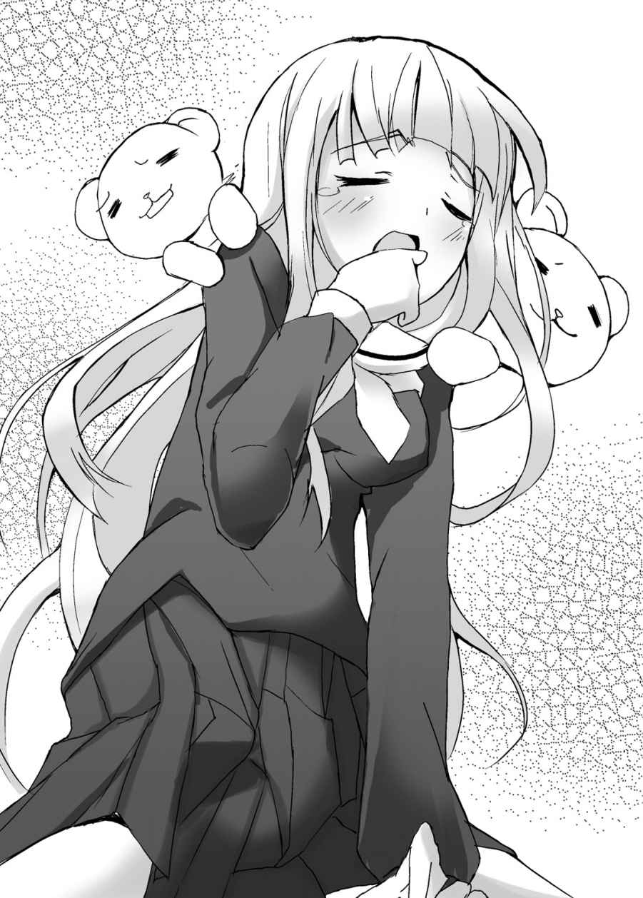
悠 長 にも、幽霊をかばって声をあげている。
デビルベアと緊縛女装少年と幽霊が、３Ｐ状態でくんずほぐれつ絡 み合う。
「いやっ、イキそうっ。あぁっ!! イキたくないの......ぶ、文化祭が、終わるまでは......お、落としたから......無くしてしまったものがあるから......。あの人が好きなのよ。文化祭であの人に......いやあぁあーっ」
「ほーれほれっ。ここはどないやっ。イキなはれっ」
「泣いてるじゃないかっ。かわいそうだっ。やめろよっ」
ゆり絵はムカムカしてきた。
恋 人 に抱き憑 く幽霊女も不快なら、赤の他霊 をかばう僚も不 愉 快 だ。
いちばんムカつくのは、ヒヒオヤジさながらの下品な声をあげ、ひーひーうなっているデビルベアだ。
ゆり絵に合わせ鏡をしてもらえないことには魔界に帰れない彼は、彼なりに必死に彼女の願いを叶 えようとしているのだが、ゆり絵にはそんなことはわからない。
ゆり絵は掛 け値 なしの処女だ。そして処女は、おしなべて潔 癖 だ。
恋人の女装ごっこの桃 色 臭 は許せても、ラクダのももひき色をしたオッサン臭 は我 慢 できない。
「ちょっとあんたたち、何を遊んでるのよっ!! 」
怒 ったゆり絵は、緊縛状態の女装少年の上でうなっているデビルベアを力一 杯 蹴 り飛 ばした。
すぽんっと栓 が抜 けるような音がして、小さな両手で霊 体 の肩 を抱きしめているデビルベアが蹴 り飛ばされる。
デビルベアは霊体を抱 えたまま、ひゅーんとうなりをあげて飛んでいき、天 井 にぶつかって撥 ね返った。
天井の照明器具の傘 に溜 まっていたほこりがもうもうと落ちる。
「えっ？」
ゆり絵が言った。
「えぇっ？」
僚の身体が言った。女の子の声と口調で。
「えぇえっ、な、何で僕なんだぁっ」
男の子の姿をした幽霊が悲鳴をあげた。
幽霊は詰 め襟 を着ていた。
「ウソやぁっ。な、何でこないなことっ。ワ、ワシ、霊を引っ張り出すつもりやったんやっ!! うわぁっ。ワシ、僚はんを生 霊 にしてしもうたぁっ!! 」
デビルベアが空中で頭をかかえて苦 悶 する。
悪 魔 であるデビルベアが、生きている僚からひっこ抜いたもの。
それは幽霊ではなく、他ならぬ僚の魂 だったのである。
デビルベアが魔力で引っ張ったのにもかかわらず、幽霊が抵抗し僚が彼女をかばったために、僚の魂が代わりに抜かれてしまったらしい。
ゆり絵は、たっぷり数秒間、途 方 に暮れた。
――どうしたらいい？ どうしたら僚を元に戻 せるの？ 焦 っちゃだめっ。考えるのよっ。
生 霊 になってしまった僚は、事態が把 握 できないのか、空中に浮 かびながら、呆 然 と口を開けている。
女装少年を拘 束 していたヒモは、僚が暴れたことで緩 んでしまったらしく、彼女はヒモをあっさりとどけるとよろよろと立ちあがった。
睡 眠 導入剤 の効果がまだ切れていないのだろう。眠そうな足取りでふらふらと歩き出す。今にも転びそうな足取りだ。
「待ちなさいっ」
ゆり絵は、幽霊が支配している僚の前に立ちふさがり、両手を広げた。ストライプのパジャマを着た女の子は、はっきりした口調で答えた。
「もう待てない。私は十年待ったのよ」
僚の声だった。
だが、口調が違 う。表情が違う。同じ顔のはずなのに、顔立ちまでも違って見える。これは僚ではない。ゆり絵の幼なじみの、大好きな少年ではない。
見慣れた少年の姿をした見慣れない存在は、ゆり絵の手を払 いのけると裸足 の足裏を動かして、ひたひたと歩き出した。
「ちょっと、どこへ行くのよっ。あんたは誰っ!? 」
「私はりょう。学校へ行くの」
僚は、廊 下 を歩き、玄 関 から出ていった。パジャマに裸足という格好で。
女の子の心理としては、僚の家に戻ってまず身だしなみを整えようとするだろう。パジャマでは出歩けない。
そしてたぶん幽霊は学校に行く。学校は門が閉まっていて入れない。幽霊は、門の外でうろうろする。つまり、まだ幽霊をつかまえる余 裕 があるというわけだ。
目の前で玄関のドアが閉まった。
今すぐ追いかけたいが、パジャマ姿では外に出られない。
着 替 えるために、二階の自分の部屋へ戻ろうとしたときのことだった。
「ゆり絵は～んっ」
デビルベアが涙 を流しながら、ぱふんと顔に張り付いてきた。
視界が茶色のモコモコでふさがれる。
「ちょっ、ちょっと待ってよっ。今、すっごく急いでるんだってばっ。前、み、見えないじゃないっ!? 」
愛らしいクマのぬいぐるみを力ずくで引き剥 がす。
「と、扉 っ、扉、と、閉じ、閉じ、し、潮が、と、時の潮が～っ。うぇええーんっ。ワシ、ワシ、また帰れへんようになってしもうたぁっ!! 」
揉 み合っていたのはわずかな時間だったように思うのに、玄関に置いてある時計は、すでに二時二十分を示している。
「過ぎた時間、少しじゃない？ まだ大 丈 夫 よっ。扉が閉じかけているなら、力ずくで開いてあげるわっ」
ゆり絵はデビルベアの頭部をぐわしとつかむと、スリッパをばたつかせて廊下を急ぎ、洗面所へと戻る。
そして、洗面所の鏡に向かってクマのぬいぐるみをぎゅうぎゅうと押 しつけた。
「魔 界 に帰ったら、死神に伝言しなさいねっ!! あの幽霊を迎 えに来て、地 獄 でも天国でも捨ててきてくれっていうのよっ!! 」
「むぎゅぅうっ」
クマのぬいぐるみが情けない声をあげてじたばたする。
これはきっと自分の手の力が弱いせいだ。足ならきっとなんとかなる。鏡にめりこむに決まっている。
テンパっているゆり絵はスリッパを履 いた足をぐっとあげ、デビルベアに足裏をくっつけてぐいぐいと押しつける。
だが、それでも、鏡の中には入らない。
デビルベアがスリッパの裏側と鏡のあいだで圧 迫 されて、せんべいになるだけだ。
「合わせ鏡するからねっ」
ゆり絵が足をおろしたとき、デビルベアは力なく洗 濯 機 の角に座りこんだ。
「ムダどすわ。ゆり絵はん......時の潮が、完全に引いてしまいました。扉が少しでも開いていたら、扉をこじ開けることができたのかもしれへんけど......もうムリどすがな......合わせ鏡をしてもあきまへんわ......」
デビルベアは、ひしゃげた頭を自分の手でポンポンと叩 き、元のかたちに戻しながら、世にも悲しい声で言った。
「最悪だわね......」
僚は生 霊 になった。
僚の身体は見知らぬ幽 霊 が支配している。
デビルベアは魔界に戻 れず、死神に幽霊を迎えに来てもらうという方法も採れない。
――どうする？ どうしたらいい？ 幽霊はどうするかしら？ 私が幽霊ならどうする？
この世に残している未練を、心残りを叶 えようとする。
幽霊は、好きな人がいると言った。
――処女のまま死んでしまったことが残念でたまらないんだろう？
勇 作 の言った台詞 を思い出す。
――イヤだっ。私の僚が、私以外の人間とエッチなことをするなんて......。
「次に扉が開くのはいつ？」
「えーと......十一月十日の昼 頃 どすわ。ちょっと時間かかりますなぁ」
ゆり絵はびくっとしたが、動 揺 を顔に出さないよう、必死の努力を費やした。
――検査入院の日じゃないのっ!?
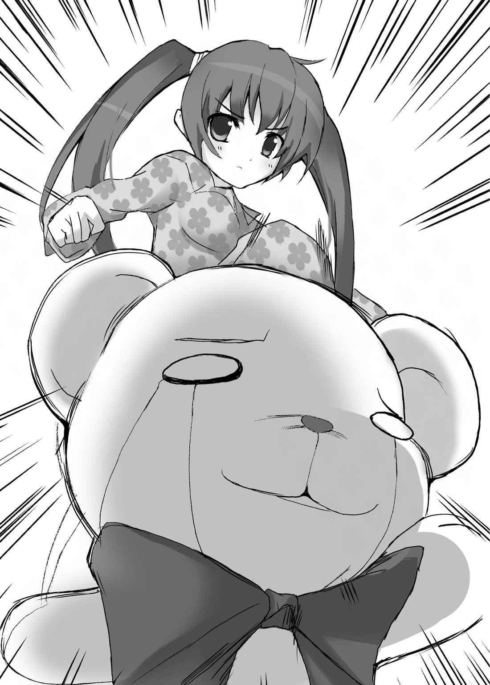
十一月十日業者テストの代休だ。
学校を休みたくないので、カテ検を代休にしてもらった。
考えられる中で、最悪のカードだった。
さあっと血の気が引くが、萎 えていたらダメだと思い直す。ゆり絵は意志の力で笑みを浮 かべた。
――何とかしなきゃね。私の責任なんだから。
「わかったわ。十一月十日に合わせ鏡をしてあげるわ。だから、それまで我 慢 して」
ゆり絵は自信ありげな表情を浮かべ、腕 組 みをしてツンと顎 をあげた。
「わ、わかりました。お願いしまっさっ。ワシ、女 房 も子供もおまんねん。こ、この通りやっ。ほんま拝みますっ」
デビルベアはははーっとばかりに土下座をし、両手をあわせて上 目 遣 いでゆり絵を見た。
さっきの３Ｐがオッサン臭 かったわけだ。愛くるしい外見に騙 されるが、中身は中年オヤジなのである。
「デビルベア、僚の身体を見張っていてっ。何か危ないことをしたら、力ずくで止めるのよっ。悪 魔 のささやきでも、何でも使っていいからねっ」
「アブナイことって？」
「あの幽霊、未体験のままで死んでしまったのかもしれないの」
デビルベアは、ぽんっと胸の前で両手を打ち合わせた。
「あーっ。そら、えらいこっちゃ。それで僚はんの身体を女性化させよったんやなっ。男あさりしてセックスしまくるかもしれへんっ」
デビルベアは中年オヤジの本性をあらわにして、へっへっへとイヤラしく笑った。口調だけは大 仰 に大変がっているのだが、しまりなくゆるんだ口 の端 から涎 が垂れ、瞳 が逆Ｕの字になっている。
蹴 り飛 ばしたくなったが自重する。
「僚に触 っていいのは私だけよ。もし僚に何かあったら、私、絶対に合わせ鏡してあげないからっ」
デビルベアはぶるるっと全身を震 わせた。
合わせ鏡してあげないは、やっぱりいちばん脅 しの効果がある。
「行きなさいっ!! 」
「イキまっさっ」
ゆり絵が窓を指さすと、デビルベアはひゅーと空中を飛び、洗面所の窓から出ていった。
「さて」
ゆり絵は、半 透 明 の僚に向き直った。
「僚、私の声、聞こえる？」
「き、聞こえる......」
「しゃべれるのね？ こうなったのは誰のせいだと思う？」
「ゆ、ゆり......」
「私のせいだって言いたいのっ!? 」
ゆり絵はスリッパを脱 いで空中にフワフワしている僚にむかって投げつけた。
僚は怖 そうに身体をすくめたが、スリッパは当たらなかった。幽霊の身体を通り過ぎ、トイレのドアに当たって撥 ね返った。
「だって、ゆり絵がデビルベアを蹴っ飛ばしたせいじゃねぇかよっ」
僚はぶつぶつと文句を言い、頭を掻 きむしって苦 悶 する。
「僕の身体が男と初体験してしまうなんてイヤだぁっ!! 」
「デビルベアが止めるからだいじょうぶよ。......なんか、男の僚としゃべるの、ひさしぶりだわ」
「ほ、ほんとうだ......」
「私がなんとかする。私のせいでもあるんだから......」
心臓がドキンと音を立てる。
――なんとか、できるの？
胸がきゅうっと痛くなり、心臓が高い鼓 動 を刻む。息苦しく、酸素が減ったように感じられる。
――検査入院、やめちゃう？
――だめ。やめちゃだめ。いまやめると、きっともう、入院すること、できなくなるよ......。
いまやめると、気力が萎える。
指先が冷たくなり、周囲が銀色に光り始める。
「おい、ゆり絵っ。おまえ、顔色、悪くないか？」
「ごめん。ちょっと、気分......悪い......」
発作の予兆だ。
――ああ、やだなぁ。しばらく発作起こしてなかったのになぁ。
原因はわかる。体調不良だ。一日中出歩いて、深夜の二時まで起きていたのだから、気持ちが悪くなって当然だ。
ゆり絵は胸を押 さえたまま、力無く膝 をつき、そのまま前のめりに倒 れこんだ。
――こんなところで倒れると、明日風 邪 を引いちゃうな......。私、バカだ。どうしてカーディガン、リビングに置いてきちゃったんだろ。
「ゆり絵っ。ゆり絵ぇーっ」
僚がゆり絵を介 抱 しようとしているが、肉体を持たない僚の手はスカスカと彼女の身体を通り抜 けてしまう。
――よくあることだから、だいじょうぶよ......。
そう言いたいが、声が出ない。胸がキリキリと痛く、心臓が大きな音を立て、意識がだんだんあいまいになっていく。
――学校、休みたくないなぁ。もうすぐ文化祭だし......。私、クッキー焼くのよね。
二年Ｄ組は仮装喫 茶 だ。手作りクッキーとハーブティだけの喫 茶 店 。お店の名前は『ナチュラルハーブ』。
ゆり絵の体力ではウエイトレスなんてできないから、前日のクッキー作りを担当することになっていた。
クッキーを焼いている夢を見た。
☆
僚は、うつぶせに倒れているゆり絵の前で、床 にへたりと座りこみ、力無く肩 を落としていた。
「ゆり絵、ゆり絵......っ」
幽 霊 になってしまった彼は、ゆり絵を介抱することもできない。
外に出て助けを呼ぼうとしたが、こんな深夜に道を歩いている人はいない。
ケータイやメールなら干 渉 できるのではないか、誰かを呼べるのではないかと思い試したのだが、やはりムリだった。
無力感にさいなまれながら、彼女の名前を呼び続けることと、泣くことしかできなかった。
永久にも等しい時間が経過したころ、ゆり絵の指先がぴくっとして、彼女が顔をあげた。顔色が、紙のように白くなっている。
「ゆ、ゆり絵......ゆり絵ぇ......」
ゆり絵は、まぶしそうに目を細めながら僚を見る。
「......い、今、何時？」
「二時四十分」
「十分ほどね」
失神していた時間のことを言っているのだろう。
ゆり絵は寒そうに自分の腕 で両 肩 を抱 くと、ぶるっと身体を震 わせた。
「風邪、ひ、ひかないか？」
「この程度ならだいじょうぶ」
ゆり絵はぎくしゃくと起きあがった。まだ心臓が痛いのか、片手でパジャマの胸のあたりをつかんでいる。苦しそうに顔をゆがめて立ち止まり、また歩き出す。
「どこへ行くんだ......」
「私の部屋......寝 るの」
「く、苦しくないか？」
「だから、寝るんだってばっ」
心配して差し出した僚の手を、ゆり絵が払 いのける。だが、ゆり絵の手は僚の身体を素通りした。
ゆり絵は、よろよろと階段をあがり、自分の部屋に入り、ベッドの中に倒れこんだ。
布団の中に潜 りこんだものの、寒そうにガタガタと震えている。苦しそうに顔をしかめているのが痛々しい。
「ごめん......僕のせいだ......。僕がはしゃいでたから......。女装して喜んでいる僕、気持ち悪かったよな......」
「そうね、気持ち悪いっていうより、おかしかったな」
「そ、そりゃ、笑うよな」
「僚の好きなことなら、別にいいよ。ヘンタイでも、何でも......他人に迷 惑 を掛 けないんならね......他の人が僚を笑っても、私は笑わない」
ゆり絵らしくない素直な言葉にびっくりする。
虚 勢 さえ張れないほど弱っているのだと思うと、罪悪感にさいなまれる。
「あ、ありがとう......。ゆり絵、そうとう苦しいんじゃないか？ 僕のせいだ......」
「そうよ。僚のせいよ。責任取ってもらうわよ」
「責任？ ど、どうやって」
「抱きしめて」
「できないよっ。僕、ゆり絵に触 れないのに」
「添 い寝してくれるだけでいいの」
「わ、わかった」
僚は、ゆり絵のベッドに横たわった。
恋 人 の顔が、すぐ前に来る。
ゆり絵が手を伸 ばしてきた。その手は、僚の頬 に触れず、スカスカと空中を泳ぐ。
「ゆり絵って、怖 がらないんだ......」
「バカね。僚が怖いわけないわよ。それにこんなの、たまに見てるし」
「僕に憑 いてた幽霊、気がついてた？」
「うん」
「昨日のデートで僕をメイクしてくれたり、やたらともてなしてくれたのは、それでなのか？」
「そうよ。僚の意識がなくなると、幽霊が出てくるの。だから、僚を眠 らせたくなかったの」
「言ってくれたらよかったのに。僕、いい気になってはしゃいでた」
「私が僚を、はしゃぐようにしむけたんだってば。幽霊のことなんか、知らせないほうがいいだろうって。僚ってば、人がいいから、幽霊をかばうんじゃないかって思ったの......予想通りだったね......まさか、こうなるとは思わなかったけどね......」
「ご、ごめん......」
僚はしおたれて肩 を落とした。
ゆり絵の気持ちにも気付かず、無 邪 気 にはしゃいでいた昨日の自分が腹立たしい。
しかも、いくら動 揺 していたとはいえ、幽霊になったのはゆり絵のせいだ、なんてことまで言ってしまった。
「謝らないでよ」
「で、でも、僕のせいだ。ゆり絵に発作を起こさせてしまった。ゆり絵の身体のほうが大事なのに。夜 更 かしすると肌 の調子が悪くなるって言ってたのに......」
「そうよ。私は身体を大事にしなきゃいけないの。私の美 貌 が失われるのは人類の損失よ。でも、僚だから、いいの。僚は、いちばん大事だからっ」
僚は、かっと顔を赤くさせた。
僚がいちばん大事。
人類よりも、僚が大事。
愛していると言われるよりも、もっと強 烈 な愛の言葉。
言葉が甘 く染みてきて、胸が熱く疼 き出す。
僚は、ゆり絵を抱きしめた。
「ゆり絵、大好きだよ」
触れることができなくても、必死に彼女を抱きしめる。
「もう、うるさいなぁ......私......眠い、ん、だって、ば......」
ゆり絵はすうすうと寝 息 を立て始めた。
一 緒 に寝ようと思うのだが、幽 霊 というものは寝る必要がないらしい。身体がないから、休む必要がないということだろう。
自分の身体を追いかけようかと思ったが、デビルベアが見張っている。あのヘタレな悪 魔 は、ゆり絵の命令には逆らえない。
だが、それより何より、ゆり絵のそばにいたかった。
――どうすればいい？ どうすれば元に戻 れる？
僚が幽霊になったのは自業自得だ。
ゆり絵に負担を掛けたくない。
――僕にできることは何だろう？
僚は、彼女の横に横たわりながら、まんじりともせずに天 井 を見あげていた。
第４章 幽霊の正体は？
古 泉 麻 子 は、風水の縁 起 物 だのラッキーストーンだのがあふれたアパートの一室で、ケータイ電話の液 晶 画面をじっと見ていた。
例の、『ユーマニスト』のサイトである。召 喚 の儀 式 は具体的に何をするのか、という質問を掲 示 板 にアップしたところ、参加希望の人にのみメールで教える、と返信があがっていた。
――悪魔召喚の儀式、でしょうね......。魔 法 陣 は自分で描 くって書いてあったし。
デビルベアは悪魔だ。悪魔でなければ、聖水だの聖なる布だの、聖なる鳥かごだのが、あれほど効果を発揮するわけがない。
あのぬいぐるみは、二年Ｄ組の如月 ゆり絵 のペットだが、如月からデビルベアを借りることは不可能だ。彼女はデビルベアの力を、女性化した恋 人 のために使おうとするだろう。
それに、ヘタに生徒に相談を持ちかけると、麻子の失敗が白日のもとにさらされる。
いかがわしいサイトの掲示板に書きこんで、桜 井 坂 高 校 に願いを叶 えてくれるぬいぐるみがいると広めてしまった。
麻子が書きこみさえしなければ、こんなことは起こらなかったはずなのだ。
――どうすればいい？ どうすれば止められる？
勇 作 と関係ができる前なら、儀式に参加して機会をうかがい邪 魔 しただろう。
麻子は、生徒たちを養護する保健室の先生だ。
自分を犠 牲 にしてでも、生徒たちを守る。それが彼女の役割だ。
――だめっ。できないっ!! 私には勇作くんがいるものっ!!
麻子は、ベッドで眠 る勇作をちらっと見た。整った横顔に、無 邪 気 な笑みが浮 かんでいる。
ケータイに親指を走らせて検 索 するが、召喚の儀式を邪魔するグッズなんて売っていない。
――そうだわ。
部屋にあふれるラッキーストーンを、屋上に持っていこう。
麻子はネットトレーダーだ。このアパートも、彼女が株の売買で儲 けて買ったもの。
三十歳 にして小金持ちの彼女は、結 婚 サギに狙 われてカモになったりしたものの、今となってはいい思い出だ。
ネットトレードで大事なものは運だ。その運を呼び寄せ、年下の若い恋人をつくってくれたラッキーストーンたち。
それらプラスの波動を出すものを、めだたないように置いておこう。悪魔召喚の儀式によって起こるマイナスの波動を中和してくれるだろう。
儀式そのものを止めることはできないが、無関係な生徒たちがマイナスの波動にさらされることを防止する程度のことはできるはずだ。
「ん......っ」
ベッドで気配が動き、勇作が伸 びをした。
「あ、勇作くん、起きた？ 今、起こそうと思っていたのよ」
「うん。麻子さんと一緒だと良く眠れる。いい匂 いがするからかな？」
勇作はウインクをした。
気取った様子が子供っぽくてほほえましい。
「今、朝ご飯作ってあげるね」
「うん。ありがとう。でも、いいよ。麻子さんは座っていてくれ。朝ご飯は俺が作るよ」
「今日は勇作くん、学校でしょ？」
「うん。俺は設営準備とウエイターの担当なんだ」
「仮装喫 茶 でしょ？ 何の仮装するの？」
「ロミオ」
「おおロミオ、あなたはなぜロミオなの、ってやつ？」
「うん。舞 台 衣装のレンタルをしてくれるところがあって、借りてあるんだ」
「あらすてき。文化祭、私も参加しようかな」
「先生なのに？」
「保健室の前で占 い師 をしようかなって思っているの。勇作くんのロミオ見たいしね」
「占い師かぁ。それは楽しくなりそうだ」
――私にできることはこの程度ね。勇気のない私を許して。
――どうかひどい結果になりませんように......。
麻子は背中から抱 きついてくる勇作の髪 を後ろ手にナデナデしながら、頬 に頬を当ててスリスリした。
☆
デビルベアは、フワフワと空を漂 いながら、幽 霊 の監 視 をしていた。
――このお人、何をしはるつもりやろ。
りょうと名乗った女の幽霊は、片手に持ったバッグをぶらぶらさせながら、朝日を楽しむようにして歩いている。
ゆり絵の白いワンピースを着ているのに、印象はまるで違 う。
――これが僚 はんとは思えへんなぁ。
身体は女性化できても、顔はいじれなかったみたいで、顔だちそのものは同じだ。
だが、人間というものは不思議な生き物で、魂 のありようひとつで、外見が変わって見える。
僚の中に入ったりょうという幽霊は、隠 花 植 物 のような、アヤシゲな色 香 を漂わせる少女だった。
お日様の光さえも、この少女には毒ではないかと思わせる。
男たちには、その不安定さが魅 力 的 に映るようで、駅へと急ぐ会社員や大学生たち、詰 め襟 の少年たちが、ちらちらと視線を送る。
りょうは、視線を平然と受け流しているが、その様子は、男たちの注目を集めていることに気付いていながら無視しているというよりは、他人に関心がないように思えた。
――別に、うっふんあっはんって感じやおまへんなぁ。
昨夜、ゆり絵に命令され、彼女を追ったデビルベアが、りょうを見つけたのは桜井坂高校の校門の前だった。
彼女は、学校をじっと見あげていた。
白いワンピースの彼女は、暗 闇 の中でいかにも目立った。
あきれるほど長く学校を見たあと、人気のない深夜の町をうろつき、二十四時間営業のファミリーレストランに入った。そして、コーヒーを注文してぼうっとしていた。
朝がきて、ポケットから財布を出してコーヒー代を支 払 い、店を出てまたふらふらと歩きだす。
――うぁ。僚はん。勝手にお金使われてはる。なんまいだぶなんまいだぶ。
――男なら誰でもええって雰 囲 気 やあらへんなぁ......。なんやろ？ 捜 し物 をしてるみたいに見えますがな。
☆
りょうは、木造二階建ての民家の前で足を止め、表札を見てため息をついた。
――ここも変わってる......。
りょうが生まれて育った家は他人のものになっていた。外 壁 は白に塗 り替 えられていて、まるで彼女を拒 むかのようによそよそしい。
――当たり前か。もう十年も経っているのよね。
あの人のアパートにも行ってみたが、空き地になっていた。ぼうぼうと生えた雑草が秋風に揺 れていた。
十年という時間は、存外長いものらしい。
だが、それでも、前のままのポストや庭の木々、窓や屋根の形に昔の面 影 が残っている。
眺 めていると、胸がじいんと熱くなった。
ふいにドアが開き、見知らぬおばさんがでてきた。両手にゴミ袋 を提 げている。ゴミ袋の色は黒ではなく、半 透 明 のウグイス色だ。
――あら、今って、ゴミ袋、緑色なのね。
おばさんは、家の前でしみじみしているりょうをじろじろと見ながら、ゴミステーションに向かって歩き出した。
りょうはしぶしぶその場を立ち去った。
どこに行けばいいのだろう。
この服だと、学校に入れない。
りょうが戻 るところは無い。
ぐう、とお腹が鳴った。
――あらら、私、お腹が減ってるんだわ。
さっきからずっと感じていた、このお腹がキュッとなる感 触 は空腹だ。
それはつい数時間前まで幽霊だった彼女には、新 鮮 な体験だった。霊 魂 だけのときには、お腹が減らなかったからである。
明日の文化祭まで、まだ時間はある。文化祭になれば、あの人に逢 える。
愛 しくてたまらないあの人に。
憎 くてたまらないあの人に。
「先生......」
先生は、私に勉強を教えてくれた。
人を好きになるということが、どういうことかを教えてくれた。
周囲がパッと明るく輝 いて見えるような楽しさと、痛いほどの胸の高鳴り。
そのとき、りょうの身体を擬 似 的 な痛みが走 り抜 けた。
りょうは両手で胸を押 さえて立ち止まり、弾 む息を整えた。
先生は、私を拒 絶 した。
私は階段から落ち、時間が止まった。
――私は先生に復 讐 する。
この身体ならできるだろう。
胸の痛みがようやく治まった。
苦痛を追い出そうとして、はぁーっと大きく息を吐 く。
お金も時間もあるのだから、生身の身体を楽しもう。
りょうは、この町いちばんの繁 華 街 に向かって歩き出した。
☆
ゆり絵は、ケータイの液 晶 画面を眺めながら、通学路を歩いていた。
桜井坂高校へと向かう道は、緩 いのぼり坂になっていて、両 脇 に桜の木が等 間 隔 に植わっている。
秋の盛りの現在では、茶色く染まった葉はあらかた落ちてしまっているが、春になれば咲 きそろう桜の花でピンクに染まる。
「ゆり絵、危ないよ。もうやめろよ。ケータイは、学校についてから見ればいいだろ？」
横を歩く僚がさかんに話しかけてくる。
「うっさいわねっ。黙 っててよっ!! 」
ゆり絵の周囲の生徒たちがいっせいにびくっとして、こわごわとゆり絵を見た。
霊 体 になってしまった僚の姿は他人には見えない。声だって聞こえない。
とつぜんのゆり絵の怒 声 に怯 えてしまったのか、彼女の半径一メートルの人間が潮が引いたようにいなくなる。
ゆり絵は、ケータイでネットを見ていた。
幽 霊 は、十年待ったと言った。桜井坂高校の階段で、十年前に死んだ女子生徒はいないだろうか。りょうという名の女の子が。
もしもいたら、その子があの幽霊である可能性が高い。幽霊のことを調べれば、僚を元に戻す手がかりがつかめるかもしれない。
そう思って調べているのだが、学校のホームページはもちろん、地方新聞のサイトにも、それらしいニュースは載 っていない。
保健室の先生に聞けばわかるかもしれないが、今日は文化祭前の自由登校日だから、先生が来ているとは限らないだろう。
――図書館に行くほうがいいのかな。
昔の新聞を調べたら、何か出てくるかもしれない。学校の図書館より、公民館の公立図書館のほうがいいだろう。地方新聞が置いてあるはずだ。
だが、図書館に行く時間はとてもなかった。
いよいよ明日は文化祭。調理室にいるだけで、一日が終わってしまうに違 いない。
「もう、もうっ、めんどくさいんだからっ」
ひとりごちたときのことだった。
「如月さんっ。お、おはよう......」
沙 希 が遠 慮 がちに声を掛 けてきた。
「滝 沢 くんは？」
「今日は休みよ。僚は、ウエイターの担当だから」
「あ、そうか。私、メイド服を着るつもりなんだ。家政婦さんから借りたのよ。明日、滝沢くん、何着てウエイターするのかな？」
「さあ、知らない。女装じゃないの？」
ゆり絵は、いらだたしげに答えた。
どうでもいいことを話しかけてくる沙希がうっとうしい。
ネットを調べたい。僚を人間に戻 す方法を探したい。
「あはは、女装か。似合うよね。滝沢くんの昨日のアレ、あのまま？」
――僚は、藤 宮 さんの横にいるわよっ！
とは、ゆり絵は言わなかった。
僚が幽霊になってしまったと言ったところで信じてもらえるワケがないし、説明するのもめんどくさい。
「女になってしまった滝沢くん、かわいかったなー。あんな滝沢くんなら、私だってつきあえそう」
沙希は、頬 を赤くして、照れくさそうに笑いながらつぶやいた。
隣 を歩く僚が、自分の胸元を指さしながら「僕かよ」とつぶやきながら相好を崩 した。
ムカッと来た。
僚が、沙希に憧 れていたのはわかっている。
沙希は学園のマドンナだ。女の目から見てもかわいい。性格も素直だ。
だが、こんなときに、のんきに喜んでいる僚が腹立たしい。
――私っていう恋 人 がいるくせにっ!!
ゆり絵は、肩 にかかるツインテールのひとふさを払 うフリをして、学生カバンを振 り回す。手 応 えがして、バコンとくぐもった音が聞こえる。
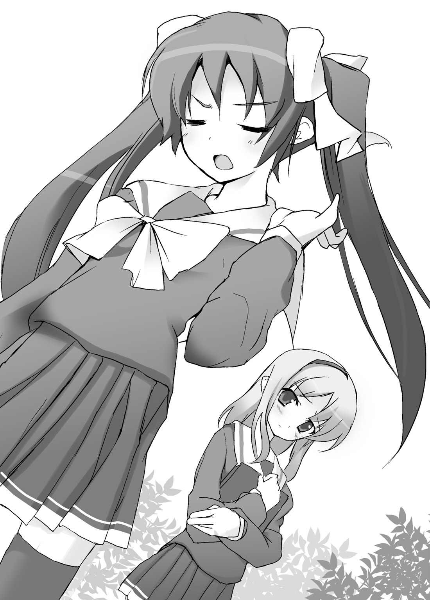
「きゃっ」
沙希が悲鳴をあげた。
「ど、どうじて？」
学生カバンの前面で顔を殴 打 されたのだ。片手で顔を押 さえて目を見開いている。
いきなりの暴力に驚 いたのか、僚がぼんやり口を開いている。
だが、びっくりしているのはゆり絵も同じだ。沙希を叩 くつもりはなかった。
僚をカバンで殴 るつもりが、通り抜 けてしまった。あまりにもクリアに見えるので、ついつい錯 覚 してしまう。
――早く僚を戻さないと、私が暴力女になっちゃうわ。
「おい、何てコトするんだよっ」
――僚のせいよっ。私のせいじゃないわっ。いくら私だって、赤の他人を殴る勇気はないわよ。
とは口に出さない。
「ごめんね。当たっちゃった」
ツンと顎 をあげ、早足で歩き去っていく。
あぜんとした沙希が残された。
☆
文化祭を翌日に控 えた桜井坂高校は、雑然としていた。
土日を文化祭、月曜の祝日を撤 去 日に当てるため、文化祭前の二日間は自由登校日という扱 いになっていて、出席をとらないにもかかわらず、全校生徒が出席していそうなにぎわいぶりだ。
先生方もけっこう出勤していて、腕 まくりしてあれこれ指示をしたり手伝ったりしている。
校庭だの渡 り廊 下 だのでベニヤ板をトンカンしている生徒もいれば、広げた模造紙に太いサインペンで文字を書いている生徒もいる。
ゆり絵は、活気づく廊下を眺 めながら歩いた。
二年Ｄ組の教室は、黒板に白と青のチョークで『ナチュラルハーブ』と店の名前が書かれ、周囲を紙テープで飾 られて、喫 茶 店 っぽい感じになっている。
「おはよう」
「おはよう。如月さん。調理室、みんな先に行ってるよ」
机を四つ寄せて、上に布を掛 けている女子生徒が言った。
「うわぁ。すごいな、忙 しそうだ......僕も手伝いたいんだけど、この身体じゃな」
僚がゆり絵の耳元で言った。あたりを見回してうきうきそわそわしている。
――平和なものね。
ゆり絵がこんなにも気を揉 んでいるのに、沙希も、皆 も、当事者である僚でさえ、平和そのものだ。それがムカつく。
「どうした？ ゆり絵、機 嫌 悪くないか？ また心臓が痛いのか？」
「平気よ」
図書館に行くつもりで廊下を歩いていたら、調理室からエプロン姿の少女たちが二人ほど出てきた。何かあったのか、必死な顔をしている。
「どうしたの？」
「あっ。如月さんっ。卵とバターが分 離 しちゃうの。家政科の先生、呼びに行こうと思って」
「ああ、いいのよ。別に、分離しても」
「如月さん、クッキー、焼けるの？」
「うん」
クラスメートたちが顔を見合わせた。
群れることをよしとしないゆり絵は、調理実習でも静かに作業をしていた。
ゆり絵が、料理上手で家事が得意だなんて、誰も気付いていないのだ。
「じゃさ、如月さん。手伝ってよ。困ってるの」
拝むようにして見あげられ、しぶしぶ調理室に入る。
調理台の上に、作りかけのクッキーが載 っていた。なるほどボウルの中で、バターと卵が分離して、ひどいありさまになっている。
「ああ、これね......こういうときはレンジの弱でバターを溶 かすの」
「えっ？ レンジに入れちゃうの？ ボウル、耐 熱 じゃないよ？ だいじょうぶなの？」
「弱で三十秒だから平気だよ。............これを、泡 立 て器 で、こうやって混ぜれば......ほら」
「うわ、すごい、混ざったじゃないっ!? 混ぜれば混ぜるほど分離して、どうしようもなかったのに。手品みたいよ。すごいねぇ」
すごーい、すごーいの声が木 霊 する。
ゆり絵は照れくささのあまり顔を赤くさせた。
ぶっきらぼうな口調で言う。
「水と油だからどうしてもこうなっちゃうのよ。少しなら分離しててもいいのよ。焼いたら同じになるからさ」
「じゃさ、こっちはどうかな？ ハーブクッキーなんだけど。なんでだろ、本の通りにやっているのに、型 抜 きするとベチャッてなるの」
「ああ、これはね。バターが溶けてるのよ。冷蔵庫に入れたら硬 くなるよ」
自分で調理係に立候補した生徒ばかりのはずなのに、みんなあまりキッチンに立たないらしく、手つきがかなり危なっかしい。
調理実習と違 い、先生がいないことも混乱に拍 車 を掛けているのだろう。お菓 子 作りの本を開いてその通りにしようとがんばっているのだが、なかなか本の通りにいかないようだ。
自然とゆり絵が先生役になってしまう。
――図書館に行かなきゃならないのに......。クッキー作りなんかサボるつもりだったのに。
こんな状態では、中座することは難しい。焦 燥 のあまりじりじりする。
――そうだわ。てきぱきやって、早く終わらせたらいいんだわ......。
これだけの人数がいるのだから、閉館時間までに図書館に行くことはできるはずだ。
ゆり絵は泡立て器を動かしてクッキーダネを混ぜながら、あるいは小麦粉を粉ふるいでふるいながら、クラスメートにアドバイスする。
「アイスボックスクッキーを先に用意した方がいいよ。三十分ほど冷やさなきゃいけないから」
「うん。そうだね。じゃあ、私たち、アイスボックスクッキーを作るね」
「ひとつめ、焼けたよーっ。みんな試食しようっ」
「うん。おいしいっ。サクサクだね」
「あ、ほんとだ。おいしいや」
焼きたてクッキーの香 ばしさと、口の中でほろほろととろける上品な甘 さが、ゆり絵の気持ちをなごませた。
「如月さん。苦しくなったら休んでね」
「あ、そうだよね。立ち仕事だもんね。如月さんって、心臓悪いもんね」
「平気だよ」
心臓のことを言われているのに、クッキーの甘さと香ばしさが気持ちをなだめ、イライラムカムカしない。
むしろ気 遣 ってもらえることに、素直な喜びを覚えてしまう。
――なんか、ちょっと楽しいな......。
クラスメートと距 離 を感じていたのに、その距離が一気に縮まったみたいでくすぐったい。
「明日、楽しみね。みんなどんなコスプレするのかな」
「女装する子とかもいるんじゃない？ 化 粧 しなきゃ、見れないと思うけど」
「化粧はして欲しいよねー。仮装喫 茶 なんだしさ」
「じゃあ、私がメイク担当しようかな」
つい言ってみたところ、みながしんとしてゆり絵を見た。
クラスでも浮 いた存在だった彼女が、まさか自分から買ってでるとは思わなかったらしい。
自分でも驚 いているのだから、クラスメートが驚くのもムリはない。
「如月さん、メイクできるの？ 化粧品とか、ある？ 口紅とか減っちゃうよ」
化粧品はある。
古泉先生にメイクするときに一通り買いそろえた。
「だいじょうぶよ。私、化粧、うまいんだよ」
「じゃあ、してよっ。私、明日、お姫 様 になるの。綺 麗 にしてね」
「うん。もちろん。まかせてっ!! 」
文化祭前日の調理室は、オーブンの熱でほんのりと温かく、なごむ空気に満ちていた。
☆
僚は、ふわぁとあくびを漏 らした。
エプロン姿の女の子たちが右往左往しているのを見ているのは楽しいが、見ているだけだと退 屈 だ。
ゆり絵はクッキー作りに一生懸 命 だし、クラスメートと楽しそうにしている。
別に僚がいなくてもよさそうだ。
僚は、ふわふわと空を飛びながら、学校中を見て回った。空中に浮くこともできるし、壁 を通り抜 けることもできる。どこにでも行ける。
中庭を飛んでいたときのことだった。
「お姉さま、私、お姉さまが好きなの」
「私も好きよ」
女子生徒同士のキスシーンをいきなり見てしまい、あわてて隠 れる。
だが、どうせ見えないのだから、隠れる必要はないのだと思い直す。
中庭は告白に最高のスポットだ。花 壇 と噴 水 があり、袋 小 路 になっていて、密会するのにちょうどいいと、どこかで聞いたことがある。
人目を忍 ぶ姉妹たちは、姉が妹を膝 の上に乗せ、熱いキスシーンをはじめた。
じっと見ていたが、ぜんぜんムラムラしない。
「つまんねぇ......次、行こっ。次っ」
僚は女子更 衣 室 に移動した。
体育の授業はないから無人だろうなと思っていた女子更衣室は、お芝 居 の練習をする女の子たちがドレスを脱 いで制服に着 替 えていた。通し稽 古 が終わったばかりなのだろう。
デオドラントスプレーを腋 の下 にスプレーしたり、おっぱいのさわりっこをしたり、スカートをめくったり、キャイキャイとはしゃいでいる。
――岡 下 先 輩 だーっ。
女の子たちからオスカル様と呼ばれて慕 われているボーイッシュな先輩だが、プロポーションの良さは目を見張るほどで、この美しい人が百 合 なのかと思うと不思議な気分になってしまう。
目の前でブラジャーに包まれた乳 房 がぷるるんと弾 んだり、ショーツ一枚のお尻 が揺 れているにもかかわらず、あまり気持ちは弾まない。
――なんでだろ？ 身体がないせいか？
――匂 いを感じないから？ それで盛りあがらないのかな？
「おーっ。でかい胸っ。あー、あのお尻、桃 みたいっ。すげぇっ。またひとり脱ぎましたっ!! 」
気持ちをもり立てようとして解説してみたり、女の子たちの間に入ったりしてみたが、よけいせつなくなってしまった。
女子生徒の手は、僚には触 れない。僚の声は彼女らには届かない。
視覚はある。聴 覚 もある。だが、触 覚 もなければ臭 覚 もない。これはせつない。寂 しくて、むなしい。
僚は、女子トイレに移動した。せめて視覚を楽しませようと思ったのだ。
女子トイレは、女の子たちが髪 をとかしたり、リップを塗 ったりしてくつろいでいた。
――いいよな。別に。僕、幽 霊 なんだし。別に痴 漢 じゃないぞ。
――ごめん。許してくれ。ゆり絵......。
個室に入って、洋式トイレに座る女の子を眺 める。
ぜんぜん楽しくなかった。
女の子が便器に腰かけてぼんやりしているだけの光景など、見てもぜんぜんわくわくしない。
ゆり絵と魂 が入れ替 わったとき、沙希と手をつないで一 緒 に行った女子トイレのほうがずっと楽しかった。
あのときのようなドキドキがないのは、触覚や臭覚がないことが原因ではない。
僚は彼女らの目に映らない。
ここにいるのに。
僕はここにいるのに。
彼女らにとって、僚は存在していないのだ。
それは、身体の芯 がきゅっと凍 えるような認識だった。どうしようもない現実に、悲しいとか寂しいとかいう感情を超 えた、ひどい無力感に襲 われる。
あの幽霊も、こんな気持ちだったのだろうか。
十年間も、あの階段で、生徒たちがはしゃぐ様子を、ただじっと見ていたのだろうか。
――あいつ、どうしてるんだろ？
ふいに心配になった。
十年間、こんな思いをし続けた幽霊がいきなり身体を手に入れたら......。
生きていることを確認したいと思うだろう。
食べる、寝 る、遊ぶ。セックスする。
女の身体をした自分が、自分の意志とは関係なしに、見知らぬ男と（女かもしれないが）セックスする！
「うぅ......」
ノーマルな少年である僚にとって、自分の身体が勝手に男と初体験をしてしまうかもしれないなんて想像は、悪夢以外の何物でもない。
裸 の男に組 み敷 かれている女性化した自分の姿が脳裏に浮 かび、そのあまりのホモホモしさにゲッとなった。
「い、いやだっ!! 」
叫 んだ瞬 間 、ひゅんっと耳元で風が鳴る音がして、目の前に雲があらわれた。
「あ、あれ？」
眼下を見て、自分が今、とても高い位置にいることにやっと気付く。
まるで瞬間移動したように、一瞬で浮かびあがった。
「あ、そうか......僕は今、幽霊だから、こういうこともできるわけか」
桜の木々に囲まれて丘 の上に立っている桜井坂高校が、よくできた模型に見えた。
校庭で設営をしている生徒が、セミやカブトムシぐらいの大きさだ。
僚は繁 華 街 に移動した。
りょうは、たぶん、町にいる。
☆
「おいしい......」
りょうは、オープンカフェで、道行く人を眺めながら、キャラメルマキアートを飲んでいた。
「ふうん。キャラメル巻き アートって、キャラメル味のカフェオレなのね」
キャラメル巻きなんていうから、お菓 子 かなと思っていた。飲み物なんて思わなかった。
キャラメルマキアートは、キャラメルの染みという意味で、アワだてたカフェラテに、キャラメルシロップを落としてアワに染みをつけた飲み物だが、りょうにはそんなことはわからない。
十年経つと、町の雰 囲 気 も変わっていて、昔はなかったお店があり、聞いたことのない飲み物がある。
道を行く人のファッションも変わっていた。ケータイは薄 くて安っぽくなっているし、ヘッドホンステレオは受信機だけをクリップで服に止めるのが流行っているらしい。
受信機ではなく本体なのだが、あんな小さなものに音楽が収録できるわけがないから、バッグかポケットに本体が入っているのだろうと想像した。
この店だってそうだ。店の外にテーブルと椅 子 があり、外を歩く人を眺 めながらコーヒーを飲むなんて習慣は、十年前にはなかった。
「浦 島 太 郎 だわ」
つい口に出してしまい、横のテーブルに座っている女子大生が振 り向いた。
――あ、そうか。今って、声がちゃんと出てるのよね。私、いま、生 身 なのよね。
りょうは、首をすくめてふふっと笑った。
生きた身体で、おいしいものを飲み、町を歩くのは楽しかった。頬 をなぶる風さえも新 鮮 で、生きているという気分になる。
文化祭まで、まだ時間がある。お金はあるのだし、この時間を楽しもう。
文化祭になれば、どうどうと桜井坂高校に入場できる。
そして、愛 しくて憎 らしいあの人に復 讐 し、探 し物 をみつける。
――何だっけ。私、何を探していたのだっけ？
大事なものだ。りょうにとってかけがえのないもの。小さな何かと、それよりももっと小さな何か。大事に大事に抱 きしめていた何か。
思い出せない。
十年という時間は、あんがい長いらしかった。
りょうは、頭上でデビルベアが見張っていることも、彼女と入れ違 いに幽 霊 になってしまった僚が自分の身体を探していることも、ぜんぜん気付かなかった。
☆
元女子高で、おとなしい生徒が多い桜井坂高校にも、不良と呼ばれる人種はいる。
「つまんねぇな」
ダボダボズボンに龍 の刺 繍 のガクラン男が言った。
「ああ、そうだな......なんかねぇかな。おもしろいこと」
じゃらじゃらしたものを制服いっぱいにつけているピアス男が言った。
「ナンパでもして、女コマすか？」
手首や手の甲 にカラフルな模様を乗せたタトゥ男が言った。
にぎやかな電 飾 と電子音を鳴り響 かせている目の前のゲームセンターも、彼らの退 屈 は解消できないようだった。
道ばたにだらしなく座りこみ、たばこをくゆらせている彼らを、道行く人たちはかかわりあいになりたくないとばかり、視線を外して歩いていく。
ゲームセンターに入った白いワンピースの女子高生を見て、タトゥ男が腰 をあげる。
「おい」
「ああ......」
三人の不良たちが、目配せを交わす。彼らの視線の先には、ワンピースの少女がいる。
彼女は、二ヶ月ほど前、ケンカしてノされてしまった少年、滝沢僚とそっくりな顔だちをしていた。
少女は、後ろ手を組んでゲームセンターを興味深そうに眺めた。これはいったい何だろうという表情で、入り口の横にある太 鼓 ゲームを見つめている。
うろうろと店内を歩いたあとで、やがて店の手前に置いてあるクレーンゲームにコインを落とした。
彼女は、よほど楽しいのか、目を輝 かせてボタンを操作している。病みあがりなのか、どこか病的な雰囲気があった。
彼女の纏 う、隠 花 植 物 のようなセクシーさは、男たちには目の毒だった。
宝石のように大事にしたいと思う一方で、いじめて泣かせてやりたいとでもいうような、危険な感情を誘 発 する。
「あーん、惜 しい、もうちょっとだったのに」
ゲームセンターの中のはしゃいだ声が、路上の彼らにも聞こえてきた。女にしてはハスキーな声だ。それが彼らを刺 激 した。
「声まで似てるな」
「ああ、いとこか妹か......そんなところだろう」
「礼をしないとな......」
「ああ......」
タトゥ男がのっそりと立ちあがった。
男たちが顔を見合わせてにやっと笑う。
☆
りょうは、ぬいぐるみをいれた袋 をうきうきと前後に振りながら、ゲームセンターから出た。
新しいゲームを試そうと思ったが、やり方がわからない。結局プレイしたのは昔からあるクレーンゲームだった。
景品のぬいぐるみは、ウソのように上等になっていた。昔は、もっと縫 製 がチャチで安っぽかったような気がする。愛 嬌 のある顔だちのクマのぬいぐるみが取れて、顔が自然とほころんでしまう。
「ふふっ」
とろけるような笑顔を浮 かべたとき、目の前にほっそりした男性が立った。秋なのに白い手 袋 をした彼は、りょうににこにこと笑いかけた。
「やあ」
手の甲や手首いちめんに描 かれた模様は手袋で隠 されているものの、崩 れた気配と暴力の臭 いが彼の周囲を色 濃 く取り巻いている。
彼女は、無視して通り過ぎようとした。
「滝沢のことだけど」
りょうは、足を止めなかった。滝沢という名に思い当たるフシがなく、自分に関係があるとは思わなかったのである。
「待てよ」
タトゥ男は、りょうの手首をつかんだ。手袋がずれて、手首のドクロマークのタトゥがのぞく。りょうはまるで無反応だ。
ずっと幽 霊 だった彼女は、警 戒 心 どころか、恐 怖 心 さえ欠落している。ドクロマークを見ても、何かしらと思っただけだ。
「カラオケ、行かないか？」
「カラオケ......今もあるのね......」
「んっ？ そ、そりゃ、あるよ」
行きたい。だが、この男と一 緒 に行くのはつまらなさそうだ。一人カラオケするほうが、きっとずっと楽しいだろう。
りょうはぷいと顔を背 け、すたすたと歩いていく。
男が追いすがってきた。口からでまかせをいう。
「あんたを探している男がいるんだ」
「私を探している、男？」
りょうの表情が、はじめて動いた。
「私を、ずっと、探していた、の？」
ナンパ担当のタトゥ男は、りゅうの表情の変化を見 逃 さなかった。如 才 なく話を合わせ、にやっと笑う。淫 靡 な笑いだった。
「ああ、そうだ。ずっと探していたと言ってたっけ。一緒に来るか？」
りょうは、こくんとうなずいた。
☆
「うーん」
見るからに怪 しげな不良男についていったりょうを見て、彼女を見張っていたデビルベアはうなり声をあげた。
「どないしょう？」
空中に浮かんだままで、器用に腕 組 みをして考えこむ。
りょうの目的は、ゆり絵の言うとおり、初体験なのだろうか。
だったら、セックスすれば、あっさり成仏してくれるのではないだろうか。
処 女 膜 が破れるだろうが、男の身体に戻 ったら処女膜なんて無くなるのだから、かまわないのではないか。
ゆり絵は僚の貞 操 を守れと命令したが、幽霊を成仏させるほうが、ゆり絵が喜びそうな気がした。
デビルベアにとって大事なのはゆり絵のご機 嫌 を取り結ぶこと。僚の身体はどうでもいい。
「あれ？」
白い手袋の男の手首に、ヘビのウロコのような模様がある。
どこかで見たような気がした。
三人セットで覚えていたせいもあり、デビルベアのせいで僚と戦った不良たちの一人だとは、デビルベアは気付かない。
☆
養護教 諭 は、屋上いっぱいに書かれた魔 法 陣 を見て息を呑 んだ。
見事なできばえだが、秋のお日様の下で、チョークで描かれた魔法陣は、いかにも安っぽく見えた。
これだけの大きさをしゃがみこんで描くのは、なかなかの手間だったに違 いない。
――本気で悪 魔 召 喚 をやるつもりね。誰かしら。生徒かしら。先生かしら。
文化祭に儀 式 というのはなかなかいいアイデアだ。先生も生徒もイベントのひとつだと思ってしまい、目立たずに儀式ができる。
麻子は、ずしんと重いバッグをコンクリート地面に置くと、踊 り場 の掃 除 用具入れからモップを出した。
チョークなので、モップでこすれば簡単に落ちる。
さして時間もかからず魔法陣を消し去った麻子は、モップをはたいて片づけてから、掃除用具入れに戻す。
麻子はバッグを開いた。
中に入っているものは十数個の石だ。
ネットトレーダーの彼女に幸運をくれたラッキーストーン。悪魔召喚のマイナスの波動を相殺するはずだ。
大事そうに石を取り出すと、屋上のあちこちに置き始めた。
給 水 塔 の角のへこんでいるところ、角の溝 の中、階段の裏側、非常階段のへこみ。吹 き溜 まった落ち葉の中。
麻子にとっては宝石にも等しいものだが、何の変 哲 もないただの石だ。きっと誰にも気付かれない。
――お願いよ。桜井坂高校のみんなを守って。
――こんなことしかできない私を許して。
麻子は真 剣 な表情で、祈 りをこめて石を置いていく。石をひとつ置くごとに、ずっと感じていた後ろめたさがらくになっていく。
麻子は、ありったけのラッキーストーンを手放すことで、贖 罪 をしようと思っていたのかもしれない。
からっぽになったバッグを提 げて、階段を降りはじめたときのことだった。
階段を上がってくる男性教諭に出くわした。たしか半月ほどまえに赴 任 してきた、産休補助教員の数学教師。名前は確か......。
「倉 森 先生」
「あっ。古泉先生。白衣じゃないから、見 違 えました。屋上に何か用事でも？」
「いえ、とくに。私、ここ、好きなのよ。見晴らしがいいから気分がいいし」
「あははっ。僕も同じです」
数学教師は明るい声で笑っている。チョークで汚 れた手に、鍵 が握 られていることに気がついた。授業があるときだけ出入りできるはずの屋上のドアは、鍵が開いていた。
「授業がないのに、熱心なのね？」
「だって、文化祭って、ワクワクするじゃないですか？」
「魔法陣を描いたの、倉森先生かしら？」
言ってしまってから後 悔 した。
警 戒 されるだけなのに、なぜ言ってしまったのか。魔法陣は私が消したと宣言しているようなものだ。
「すみません。何のことかわかりません」
「生徒に何かしたら、許さないわよ」
「ははっ。古泉先生は養護教諭の鏡ですね。僕も、僕の生徒 が大事ですよ」
二人はそのまますれ違った。
☆
「あっ。いた。僕だ」
ようやく自分を見つけた僚は、空中に浮 いたままでりょうを観察する。
彼女はゲームセンターで、クレーンゲームをしてはしゃいでいる。
「女の子、だな」
外も中も女なのだから当然かもしれないが、異性の自分はイヤになるほど女の子っぽかった。どこか病的な雰 囲 気 があるものの、それが逆に魅 力 になっている。
「僕って、こんな顔してたんだ」
しげしげと見てしまう。
彼女が財布からお金を出す様子を見て悲鳴をあげる。
「おい、ちょっと待て。その財布、僕のじゃないかよ!? ぐわーっ。僕、昨日、生活費おろしたんだよなーっ」
彼女は、どうせ他人のお金よとばかり、次々にコインを投入してボタンを操作している。
十数回目のプレイで、ようやくクマのぬいぐるみがボトンと落ちた。
彼女は、とったぬいぐるみを備え付けの袋 に入れると、にこにこしながらゲームセンターを出た。
ゲームセンターの外で、白い手 袋 をした男が、りょうを待ち受けるようにして立っていた。
「あいつ......」
この顔には見覚えがある。二ヶ月ほど前、僚がケンカした不良男だ。
りょうは、話しかけてきた男と少し会話したあと、男のあとをのこのことついていく。
「おいっ、ちょっ、な、何をするんだよっ。危ねぇよっ。おまえひとりの身体じゃねぇんだぞっ......わっ」
あわてて彼女を追いかけようとしたとき、顔面にふわふわした茶色いものがぶつかった。
デビルベアだった。彼は、空中に浮かんだままで、短い手を器用に組んで、哲 学 者 のように考えこんでいる。
「げっ。僚はんっ！」
まるでうしろめたいことがあるかのように、両手足をじたばたさせて逃 げようとしたデビルベアを手で払 ってバシッと落とす。
手 応 えがあったことに驚 いて、さらにバシバシと叩 きまくる。
「あれっ。錯 覚 じゃないよな。触 れる？ 触れるよな？ わーっ。すげぇっ。僕、この身体になってはじめて触れるものがあったぞーっ」
「い、痛いっ、痛いどすがなっ。悪 魔 が人間の魂 をさわれへんかったら、そら困りますがな」
「デビルベアッ。りょうを止めろっ。ゆり絵との約束だったろ！」
「わかりました。止めますがな......っ。しかたおまへんなぁ」
デビルベアは、しぶしぶという感じで悪魔のささやきをはじめた。
赤いフェルトでできた口から、悪魔語の詠 唱 が流れ出す。
「あ、あれっ。あれあれっ」
デビルベアは冷 や汗 を流しながら詠唱をするのだが、りょうの行動に変化はない。
ふわふわした、だが、確かな意志を感じさせる足取りで、男の横を歩いていく。
男はさかんにケータイで話しながら、カカトがつぶれたスニーカーをひきずるようにして歩く。
「えらいこっちゃ......悪魔のささやきが効かしまへん......」
悪魔のささやきは、人間の行動に干 渉 するもの。気の迷いとか魔が差すとか、そういうたぐいだ。気まぐれを起こさせる程度の効果しかないが、使い方によっては高い効果を発揮する。
「りょうは人間じゃないからだろ」
「あ、そうどすな」
「つ、使えないやつ......不良のほうを止めろっ」
だが、少し遅 かった。りょうと不良は、肩 を並べてカラオケボックスに入ってしまった。タトゥ男はカウンターで何事か話してから、二人して廊 下 を歩く。
りょうとタトゥ男が入った部屋には、先客がいた。
ガクラン男とピアス男の二人が、皿に盛られたお菓 子 のたぐいをだらしなく食べている。
僚は顔を青くした。
「うわ。やっぱりだ。あいつら僕に仕返しをするつもりなんだ」
「ああ......今思い出しましたがな......僚はんと戦った不良どすな。なるほどなぁ」
「納得していないであいつらを止めろっ」
だが、デビルベアは腕 を組み、目を横線にして考えこんでいる。ぴったりと口をつぐみ、悪魔のささやきをしようとはしない。
「おいっ。デビルベアッ。おまえ、何を考えてるんだっ!! 」
僚はデビルベアの首に手を掛 けて、思い切り締 めあげた。
だが、それでも頑 固 に口をつぐんでいる。詠唱する気はないらしい。ゆり絵の機 嫌 を損ねることが何より怖 いはずなのに、これはいったいどうしてだろう。
僚はぼうぜんとして、デビルベアを締めあげる手をゆるめた。
「おまえ、あいつら止めないのかよ？」
「僚はんが止めはったらよろしおま」
「くっ、こ、この悪魔っ」
「ワシは悪魔どすがな......」
デビルベアは、にやぁ、と笑った。
☆
「あの人は、いないの？」
不良たちは顔を見合わせた。
りょうには怯 えている様子がかけらもない。不思議そうな表情で小首をかしげ、ぼんやりと視線をさまよわせている。
それは落ち着いているというよりは、頭のねじが緩 そうに見えた。
彼らは、りょうのうなじや耳たぶ、ワンピースの胸を押 しあげる双 つの胸のふくらみや、ウエストのくびれ、ハート型に張り出した腰 や、ニーソックスに包まれたすんなり伸 びた下 肢 、ソックスのゴムとワンピースの裾 からのぞく太 腿 の毛穴を、舌なめずりしそうな視線で眺 めている。
「いないのね？ 帰るわ」
一人がリモコンをとりあげ、曲番を入力する。
歌声のない伴 奏 だけの音楽は、緊 迫 した雰 囲 気 を裏切る脳天気なＪ－ＰＯＰだ。
女の子の悲鳴をごまかすためのＢＧＭなのだが、彼らにはレイプ開始の合図になる。
一人がドアノブにハンガーを引っかけてドアが外から開かないよう細工した。さらに、別の一人がりょうの行く手を両手を開いてふさぎ、ひとりが重いスツールやテーブルを移動させてドアを塞 ぐ。しょっちゅうやっているので慣れたものだ。
テーブルがあったところが四角く空いていて、そこが生 け贄 の料理場になる。
ガクラン男がりょうの手首をつかむ。
「何かしら？」
ガクラン男は、つかんだ手を振 り回し、ワルツのように少女の身体をくるりと回すと、後ろ手にねじりあげた。もう片方の手も拘 束 する。
「きゃっ」
少女は両手を後ろ手に回されているため、胸を突 き出す形になる。
どうぞ好きなように触 ってね、とばかりの彼女の胸を、ピアス男がさわっと触った。
ほっそりした彼女の身体がビクッと震 える。
ピアス男は、ワンピースの上から、ねちっこい手つきで乳 房 をくにゅくにゅと揉 み始めた。
タトゥ男は、りょうの太腿の表面を手のひらでなで回し、くんくんとにおいを嗅 いでいる。
嫌 悪 感のあまりなのか、それとも気持ち良さの表れなのか、皮 膚 にザワリと鳥 肌 がたち、すべすべの感 触 がザラリとなる。
タトゥ男は、スカートの中に手を入れ、ショーツの二重布で包まれたふっくらしたアソコの真ん中を、指でつんつん押している。
いつでも下着はおろせるのだといわんばかりのイヤラしい手つきだ。
彼女の背中側に立ち、手首を拘束しているガクラン男は、片手でりょうの手首をねじりながら、もう片方の手でお尻 の表面を撫 でさすっている。
うなじを舐 め、耳たぶを甘 く噛 んでふうと息を吹 きかける。
「でっかいおっぱいだねぇ。お姉さん、サイズはいくつ？」
りょうは答えない。答える必要はないと思っているのだろうか。自制心の表れというよりは、どうにでもしてくださいというような、どこかなげやりな印象は変わらない。
「Ｆカップはあるのかな？ ぷりんぷりんでちゅねぇ。はーい、胸を開いてくださいねぇっ。診 察 させてもらいますからねぇ」
男たちがゲラゲラ笑う。りょうが悲鳴をあげず、抵 抗 らしい抵抗もしないことに、すっかり安心したようだ。
ひとりがお尻や背中を、もうひとりが乳房を、別のひとりが太腿の前面から股 間 のあたりを撫でさするたび、エロティックに身体がくねる。まるで男を誘 っているようだ。
「あっ、あんっ......んっ」
いやがりながら高まっていく感じが、男たちの劣 情 をかきたててやまなかった。
☆
「おいっ。やめろよっ。やめてくれっ」
僚は悲鳴をあげ、男たちのあいだに割って入った。
だが、彼の悲鳴は男たちには聞こえない。
男たちにつかみかかろうとも、僚の抵抗は男たちに届かない。
「やめろよっ。やめろっ!! あの子がかわいそうだっ」
悲鳴をあげ、男たちを止めようと必死になっている僚に、りょうはふっと笑った。どう、幽 霊 はつまらないでしょ？ 私の気持ちわかる？ と言いたそうな、優 越 感 さえ感じられる冷たい笑み。
――もしかして、この女、わざとか......。
食べる。寝 る。休む。遊ぶ。感じる。動く。これらすべて、生きているからこそできる人間の楽しみだ。
十年間も地 縛 霊 として、桜井坂高校の階段に縛 り付けられていた彼女にとって、セックスは生きていることの確認なのかもしれない。
なんとなく、そうじゃないかなと思っていた。
だが、まさか、とも思っていたのだ。
「ひどいよ、そんな......」
僚はその場に立ちつくし、ぽろぽろと泣き出した。
手の甲 で涙 を拭 く。
幽霊になっているのに、涙は出るのだと感心する。
「僚はん、邪 魔 どっせ」
デビルベアが僚の目前にやってきて、彼の肘 を小さな手でキュッとつかんだ。
そして、くいくいと引いて僚をうながす。
僚はしかたなく浮かびあがった。
「僚はん。すいまへんなぁ」
「いや、君が謝る必要はないよ。りょうが、それを望んでいるのなら、しょうがない」
「僚はんはやさしおすなぁ。目の毒やさかい、見いひんほうがよろしおす。どっかいきまひょか？」
「見るよ。あれは、僕の身体なんだ。たとえ、お、男に......押 し倒 され......うっ、しくしくっ。ぐすっ......お、犯されても、ちゃ、ちゃんと、見たいんだ」
僚はしゃくりあげた。
泣くことしかできない自分がもどかしい。
女性化した自分の身体が、自分の目の前で男たちに陵 辱 されるという悪夢に、また涙が出てしまう。
☆
――このぶんやったら、僚はん、ゆり絵はんに告げ口はしよらへんな。
――まあ、目の前で自分の身体がいてこまされるんやから、ショックやわな。
――でもなぁ。あの幽霊が成仏したら、身体が男に戻 って全部リセットや。何の問題もあらしまへん。
デビルベアはやはり悪 魔 だった。
男女の機 微 はもちろん、人間の感情がわからない。
男たちになで回されて、甘 い吐 息 をあげているりょうを見ながら、デビルベアは悪魔っぽい笑顔を浮 かべている。
☆
「全部脱 がせるか？」
「味けねぇよ。そんなの。着たままのほうが興奮する」
ピアス男が、前開きのワンピースのボタンを外す。そして思い切り襟 を左右に開く。白いワンピースの襟から、ケミカルレースのブラジャーに包まれた、まあるい乳 房 が現れた。
ゆり絵から借りたブラジャーはりょうにはやや小さめで、カップが下乳を押さえつけているために、よけいに乳房が大きく見えた。ふわりと甘い肌 の香 りが匂 いたつ。
タトゥ男がショーツのゴムを膝 のところまでズルリと下げる。
ニーソックスはちゃんと履 き、ワンピースの袖 も通しているにもかかわらず、桜色の小さな乳首やそけい部のヘコミ、股間の翳 りさえ露 出 した、しどけない姿になっている。
脱ぎかけの服が白い肌にまとわりつき、いっそ全 裸 でいるほうがマシではないかというほどの淫 靡 な様子になっている。
「だいじょうぶだよ。俺ら、紳 士 的 なんだ。服を破ったり、ケガさせたりしねぇよ。病気も持ってないぜ。まあ、中だしはするけどよ」
「おいおい、三つ子が生まれるんじゃねぇか？」
「あはは、そりゃいい」
「わんぱくでもいい。元気な子を産んでくれーっ」
下品な冗 談 に、男たちはゲラゲラと笑った。
「えっ。産む......子供？」
ぼんやりした少女の身体がビクンと震 える。
「い、いやっ、いやっ」
少女がはじめて抵 抗 した。
顔色が変わっている。
さっきまでどうでもよさそうに身体を投げ出していたのに、今はいやそうに顔をしかめ、必死さを感じさせる動きで悶 えている。男たちを蹴 り飛 ばしそうな雰 囲 気 だ。
だが両手を後ろ手につかまれているので、何ができるわけもない。
ただ服がめくれあがり、エロティックさが増しただけだ。
抵抗は、男たちの劣 情 を刺 激 する。
不良たちは、りょうの下 肢 を払 うと、元はテーブルがあった場所に横たえた。ケガをさせないと宣言した通り、手首や肩 をしっかりとつかんでそうっと寝 かせる。
乱れたスカートの間から、ニーソックスに包まれた下肢がのぞく。太 腿 の内側がぬめっと白く輝 いている。
男たちがゴクリと息を呑 む。
ガクラン男が進み出た。
「俺からだ」
「じゃあ、俺はそのかわぇぇお口で」
「俺は胸ーっ」
陵辱がはじまるかと思ったまさにそのとき、異常が起こった。
男たちがほんの一 瞬 手を離した瞬 間 、自由になったりょうの細い手がスッと伸 び、ガクラン男の頬 に指先を当てる。
たったそれだけのことなのに、男は驚 いたように目を見開き、身体をガクッと震わせる。そして胸をいじっていたピアス男の上に倒れこんだ。
まるでスイッチが切れたかのような、唐 突 な倒れ方だ。
「えっ。お、おいっ。ど、どうしたっ!? 」
急病だと思ったのだろう。不良たちがあわてふためく。りょうは、ひんやりした笑みを浮かべながら身体を起こした。
ワンピースの衿 は大きく開いて乳房のふくらみがのぞき、右の膝のところにショーツをまつわらせたしどけない格好だ。
だが、扇 情 的 な雰囲気はまるでなかった。彼女の周囲を、霊 気 のような、白いモヤがただよう。
「こ、これは、お、おまえかっ!? 」
「おまえっ、な、何者だっ」
ようやく彼らは、自分たちがナンパした人物が、普 通 の人間ではないと悟 ったらしい。怖 そうに後ずさる。
「こ、殺した、のかよっ!? 」
「殺してない......精気をもらっただけ......」
笑いの形に口角が上がっているのだが、まっすぐに彼らを見つめる力のない瞳 がいかにも不気味だ。
りょうは男たちに向かって片手をさしのべた。
「ひっ、ひいぃーっ」
男たちの喉 から、悲鳴がほとばしった。
それが合図になったように、男たちが逃 げ出した。
だが、ドアの前のバリケードが邪 魔 になり、ドアが開かない。
「わーっ、わぁああっ、あぁああああっ」
あたふたしながらスツールだのテーブルだのを取り払う。
りょうは、二人に歩み寄った。
開いた衿から、ブラジャーに包まれた乳 房 が覗 いているのにもかかわらず、まるで気にしていない。
白いワンピースのまわりを、どす黒いオーラがとりまいている。
彼女は薄 い笑みを浮 かべていた。あどけない笑顔なのに、見たものの背筋が凍 るような、そんな笑顔だ。
ピアス男はドアをガタガタさせていた。ドアの取っ手に掛 けた内 鍵 代わりのハンガーが引っかかって取れず、泣きそうな表情でしゃにむにドアを押していたが、やがてあきらめたらしい。
「や、やめてくれーっ。わ、悪かった。すまない。ゆ、許してくれーっ」
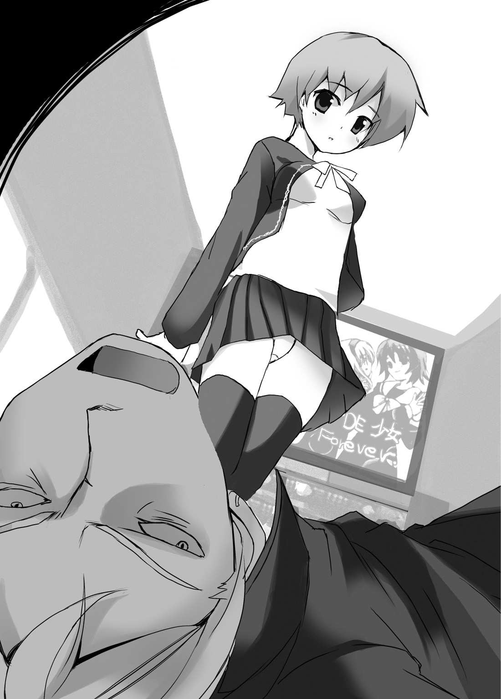
開かないドアに背中を当て、りょうに懇 願 した。
りょうは無言で手を伸ばし、ピアス男の首筋に指を当てる。
不良は、電気に打たれたようにガクンガクンと身体を震 わせた。
瞳から力が抜 ける。
ピアス男は、膝 から崩 れるようにして倒 れ伏 した。
精気を奪 ってやっただけだが、死にそうな顔をしている。
みっともなく歪 んだ顔がこっけいだった。
「あははっ、ははっ、きゃはははっ」
りょうは笑った。
狂 気 さえ感じさせる笑い声は、恐 怖 を誘 わずにはいられない。
「う、うわー、うあぁあっ、や、やめてくれぇっ」
最後にひとりきり残ったタトゥ男が、逃げようとして這 いずっている。
驚きと恐怖のあまり腰 が抜けてしまい、立って逃げることができないのだ。
りょうは、膝 小 僧 でまつわっていたショーツをずりあげ、ブラジャーの位置を指先で戻 すと、襟 のボタンをはめた。
乱れた髪 を手のひらでなでつけると、もう元通りの姿になる。
そして、白い繊 手 を伸ばすと、みっともなく這いずっているタトゥ男の背中に触 れて、最後の一人を無力化した。
命まで奪っていないが、三人とももうぴくりとも動かない。
タトゥ男が入力した伴 奏 だけのＪ－ＰＯＰはとうに止まってしまい、カラオケボックスは怖いほどに静まりかえっている。
りょうは、カバンを肩 に掛けると、ドアに掛けてある内鍵がわりのハンガーを取った。
ピアス男が取れずに困っていたハンガーだが、ひねるようにして引っ張ればあっさり取れる。
彼女はハンガーをぽいと放り投げた。
タトゥ男の背中に当たって撥 ね返る。
そして彼女は、クマのぬいぐるみを入れた袋 を手に提 げて、倒れている男たちをそのままにして立ち去った。
「思い出したわ」
彼女はひとりごちた。
無くしてしまったふたつのもの。
ひとつは指輪......。
もうひとつは......かけがえのない、大事なもの......。
☆
ブランコに腰かけてうなだれている白いワンピースの少女を、暮れていく夕陽が赤く染めている。
彼女がブランコを揺 らすたびに、影 絵 を思わせるくっきりした影が、不安定に揺れる。
まだ明るいのに、公園は不思議なほど人 気 がなかった。幼児を遊ばせるお母さんたちが家に帰り、ちょうど公園が役目を終える時間なのだ。
「よお」
僚は、りょうの前に立ち、話しかけた。
デビルベアが、僚の頭上に浮かんでいる。
「もう陽が暮れるぜ」
それがどうしたの？ というふうに見あげられ、僚は口ごもりながら言った。
「僕の家に行かないか？」
「行って、どうするの？」
ようやく声が返ってきた。
「寝 るところ、必要だろ」
「どっか、泊 まるから、いい。お金あるし......あ、そうか、このお金、君のなんだね。だいぶ使っちゃった」
「いいよ。十年ぶりだからしかたない。僕もきっとそうすると思うし」
「どうして？」
「幽 霊 って、つまんないよな。何もできないし。僕さ、女子更 衣 室 とか、のぞいたんだ。でも、ぜんぜんつまんねぇの。むなしくなっただけだった」
りょうは答えない。
たいくつそうにブランコを揺らしているだけだ。
「セックスしたいなら、もっといい相手、紹 介 してやる」
僚は、勇作の顔を思い浮 かべながら言った。
りょうは、ふふっと笑った。
「君って、人がいいのね。私、君のお金と身体を使ってるのに、その上セックスしてもいいっていうの？ 君の身体が男とセックスしちゃうのよ。平気なの？」
「う......ちょ、ちょっと、かなり、イヤだけど......で、でも、でもだよっ、ああいう、ナゲヤリなのは、よくないと思うんだっ!! もっと自分を大事にしろよっ」
「あれは、別に、そういうつもりじゃ......でも、そうね、せっかく生身になれたんだし、セックスだってしたいかな」
「だったら、マジで勇作、紹介するよ。古泉先生、霊 感 あるから、僕から頼 めば勇作に引き継 いでくれる。勇作、君を気に入ってたっぽいし......あ、でも、古泉先生が嫌 がるよな......恋 人 を貸してくれなんて......」
「へえ、先生と生徒が交際してるの？ 古泉先生って、あの赤い車の女の人よね？」
「うん。アツアツだよ」
「いいなぁ......」
しみじみとした口調だった。
――あれ、この子......。先生が好きだったのかな？
十年前、桜井坂高校は女子高だった。だが、先生まで女ばかりとは限らない。男の先生と恋 愛 して、かなわぬ恋 に命を落としたのだろうか。
りょうは、ブランコから降り立った。
「ごめんね。今日は君の家で休ませてもらうね」
「ああ、鍵 はエアコンの室外機の裏側に掛 けてある。台所も風 呂 も好きに使ってくれ。晩飯、まだだろ。パンとか卵とか、適当に食べていいから」
「ありがとう。......文化祭、明日よね」
「うん。僕ん家、わかるか？ ここからだと、あの道をまっすぐ行って左側だ」
「ほんと、君ってお人好しだわ......もう一日だけ時間をちょうだい。明日、君に身体、返すから」
「僚ーっ」
声が響 いた。
ゆり絵だった。
道の向こうに立ち、手を振 っている。
ひょい、と移動して、ゆり絵の前に立つ。
彼女はびっくりしたのか、息を呑 んで後ずさった。
「わ、わわわっ。びっくりした......っ。急に来るんだもんっ」
「ごめん」
「別にいいけど。なぁに？ 幽霊と話していたの？」
「あはは、今は僕のほうが幽霊だけどな」
りょうはブランコから降り立つと、反対側の道を歩いていく。デビルベアがりょうのあとをついていく。デビルベアは、ゆり絵の言った見張っていろという命令を、律 儀 に果たそうとしているらしい。
りょうは、僚とゆり絵をちらりと見た。
ゆり絵は、りょうに背中を向け、プイと顔を背 けた。そして、ヒソヒソ話をする口調で言う。
「私さ、図書館、行ってきたのね」
「うん？」
「新聞を調べたの。学校の図書館じゃムリだったから、公立の図書館に行ったのよ。今って、新聞記事、マイクロフィルムになってるのね。検 索 ができちゃうの。キーワードを打つと、その記事に飛ぶのよ。びっくりしたわ」
「ふぅん？」
「十年前の地方新聞を調べたんだけど、桜井坂高校で、死亡事故はなかったの」
「検索がうまくできてないだけじゃないか？」
「私もそう思って、いろいろ入れてみたの。桜井坂だけにしたり、桜井坂女子にしたり、高校だけにしたり、地名を入れたり、十六とか十七とかでも入力したわ。だって、死亡事故って、名前の下に年 齢 がカッコで入っているから。範 囲 もね、九年前から十一年前でしてみたの。名前も、ひらがなでりょうにしたり、漢字にしたり、凉 子 にしたり、いろいろやったわ。とにかくいろいろ試してみたのよ。......でも、なかった。ぜんぜん、なかったのよ」
死亡事故はなかった。
少なくとも、ニュースになるような事件はなかった。
じゃあ、りょうは？
屋上へとつながる階段で十年待ったというりょうは、いったい何者なのだ？
二人は、歩き去っていくりょうを見た。
彼女の頭上を、デビルベアが飛んでいく。
愛らしいクマのぬいぐるみが、ウルトラマンのように両腕を前方に伸ばし、ゆっくりゆっくり飛ぶ様子は、のどかでどこかおかしかった。
第５章 文化祭、それぞれの想い
二年Ｄ組の教室は、四つ合わせた机に布が被 せられ、テッシュで作った花と紙の鎖 で飾 られて華 やかな雰 囲 気 に変わっていた。
奥 のところがベニヤ板で区切られて、内側では湯 沸 かしポットが湯気を立て、昨日作ったクッキーとハーブティのティパックが、タッパーに入れて用意されている。
「ねえ、ちょっと、ヘンじゃない？」
藤 宮 沙 希 が、メイドキャップを手で押 さえながら教室に入ってきた。照れくさそうな顔をして、唇 を尖 らせている。
「かわいいっ!! メイドさんだーっ」
「似合うよーっ」
女の子たちが声をあげ、クラスに三分の一ほどいる野 郎 どもが感心のためいきをつく。学園のアイドルのメイドコスプレは、それほど見事だったのである。
生徒たちはそれぞれ仮装をしていたが、沙希のメイド服がいちばん似合っていた。
丈 の短い黒ワンピースに白いエプロン、頭にメイドキャップという服装は、沙希の清 楚 で控 えめな雰囲気を引き立てている。
まるでメイド喫 茶 のウエイトレスみたいなのに、少しもちゃらちゃらしていず、しっとりした印象だ。
「なんかちょっと恥 ずかしい......丈短いし......」
沙希は、スカートを指先で引っ張ってはじらっている。
「かわいい......」
僚 がひとりごちると、窓際の席でクラスメートにメイクをしていたゆり絵 が、手を止めずに僚を見た。
こんなときにのんびりしたことを言って......という非難の視線で見られてしまい、おどおどと言い訳をする。
「似合ってると思わないか？」
「そうね。ステキね」
ゆり絵は魔 女 のコスプレをしている同級生に口紅を塗 りながら、なおざりに答える。
僚の姿も声も、他の生徒には見えないので、クラスメートは自分に言われているのかなと思ったのだろう。不思議そうに目を見開いた。
「ハイ終わり。魔女だから、ちょっとマスカラをキツめにしておいたの。目、こすらないでね。目の周りが黒くなるから」
「わー。目が大きくなったーっ。如月 さん。メイク巧 いんだね。びっくりしちゃった」
黒いワンピースに黒いマント。つばの大きい三角帽 子 、ラップの芯 に空 き缶 のフタで飾りをつけた魔 法 の杖 を持った魔法少女が、鏡をのぞきこんで感心している。
「藤宮さーんっ。如月さんがメイクしてくれるよーっ」
コスプレ魔女がメイド服の沙希を手招きする。
昨日、ゆり絵にカバンで殴 られた沙希は、ゆり絵が怖 いらしく、どぎまぎした様子で彼女の前に座る。
「あんまり濃 くしないでね」
「うん。そうだね。メイド服だから、薄 化 粧 にするね」
「ひゃっ。冷たいっ」
「ちょっと我 慢 して」
ゆり絵はてきぱきと化粧をしていく。
僚は、彼女の手つきに見とれていた。
古 泉 先生にはじめてメイクをしたときは、こわごわした手つきだったが、回数を重ねるうちに慣れてきたらしく、落ち着いたものだ。五分もかからずメイクを終えた。
「はい。できたよ」
瞳 をくっきりさせて、唇の輪 郭 をはっきりさせただけの薄化粧なのに、美人度がひときわあがった。
沙希は鏡の自分に向かって驚 いたように目を見開き、次にはとろけそうな笑顔を浮 かべた。メイクは女の子を綺 麗 にさせるだけではなく、自信を与 える効果があるらしい。
先ほどまでの、おずおずした様子が消え失せて、お姫 様 がドレスを纏 ったようにどうどうとしている。
「ありがとう。なんか別人みたい」
――ああ、わかる......。僕もそうだった。
女の身体、女の格好、女のメイクでゆり絵とデートしたとき、あんなにも楽しかったのは、別人になったようなドキドキ気分のせいだった。
別に女になりたいわけではないが、変身願望を叶 えられた楽しさとでもいうのだろうか。
「ねぇねぇ。如月さんはコスプレしないの？」
「しないよ。私、ウエイトレスする体力ないもん」
「でもさ、ウエイトレスしなくっても、コスプレだけしようよ」
ドレス姿の同級生が言った。頭にティアラ（王 冠 ）をつけたお姫様スタイルだ。
「これね、姉の結 婚 式 のお色直しのドレスなんだ。実はさ、ウェディングドレスもあるのよ。着てみない？」
お姫様な同級生は紙 袋 から、ドレスを引っ張り出して広げて見せた。
「じゃじゃーんっ!! 」
レースがいっぱいの白いドレスは、宝石でできた妖 精 の衣装のように光を透 かし、白く輝 いている。
ゆり絵が「わぁ」とため息をつき、あこがれの表情で腰 をあげた。だがすぐ腰を下ろし、モゾモゾしている。
メイクしなきゃいけないし......でも、着たいし......という葛 藤 を見て取って、僚はゆり絵にそっと耳打ちする。
「着たいんだろ？」
「着たいっ！」
「じゃあ、行こうよ。更 衣 室 ！ 私、着付け、してあげるっ!! 」
「メイクなんかあとまわしでいいじゃないっ」
「あっ。走っちゃダメッ！ 如月さん、心臓が悪いんだってばっ」
照れくさそうな、それでいてうれしそうな表情をしたゆり絵が、女の子たちに手を引かれて教室を出ていく。
ゆり絵の着 替 えを見たいなと思ったが、怒られると思い、僚はついていかず教室にとどまった。
入れ違 いにやってきたのは、ロミオの格好をした勇 作 だ。長身の彼に、イタリア貴族の衣装は似合いすぎるほど似合っていた。
「わぁ。ステキ」
「ステキね」
女の子たちのため息がはじける。
「ふふっ。温 子 さん、君も似合うよ。その格好、魔 女 なんだね。藤宮さん。メイド服すごくかわいい」
「ねぇねぇ。紙皿がないんだけど」
「えー。やだぁっ。ほんとにないの？ お皿、調理室から借りて来ようか？」
「私、紙皿、持ってきたよ」
「わぁっ。助かるっ」
「このポット、お湯、沸 いてないよ」
「あーっ。やぁだっ。コンセント入れてない～っ」
「早く気付いてよかったじゃない？」
はじまりまであと数分という時間になり、教室はにわかに騒 然 としてきた。
「確認しまーすっ。朝の部の、十一時までのウエイトレスとウエイター、ちゃんといる？」
「あっ。滝 沢 くんが来てないよ」
「遅 刻 かな？」
☆
りょうは、桜 井 坂 高 校 の前に立ち、校舎を見あげた。ぬいぐるみの袋 を提 げている。
門のところに立てかけられている「桜井坂高校文化祭」の看板。ガラス窓に張られた模造紙。ベニヤ板で作られたさまざまなもの。
お祭り特有のわくわくした空気が校門の外にまで漂 ってくる。
新曲なのだろう。聞き慣れないＪ－ＰＯＰと生徒たちのざわめきが混ざり合って聞こえてくる。
「あれっ。滝沢くんね。誰かと思った。遅 かったのね」
校門のところに立つ、小 柄 なスーツ姿の女性に話しかけられた。
文化祭の見学に来た保護者からチケットを受け取り、代わりに案内の用紙を渡 している。
「何をぼんやりしているの？ みんなもう教室に行ってるわよ。早く二Ｄに行きなさい。今日は遅刻で処理するからね。それにしても、滝沢くんって、そういう格好、似合うのね。メイクのせいかな。すごくかわいい。あ、かわいい、なんて男子高校生に言っちゃ悪いかな」
どうやら、滝沢僚のクラスの担任の先生らしい。
「はい。すみません」
「きゃあぁああっ。しゃべり方まで女の子っぽいわっ。あとで写真撮 らせてねっ」
これが先生かとあきれたが、十年前と今では先生の種類も違っているのだろうと思い直す。
「先生方も全員来られているんですか？」
「ええ。もちろん。正社員 は全員ね。非常勤の先生方は自由だけど。......あっ。そこの保護者の方、チケットをお願いしまーすっ」
「全員、出席......」
りょうは満足そうな笑みを漏 らした。
ぬいぐるみの入った袋をぶらぶらさせながら、中庭だの校庭だの、水飲み場だの、校庭だの、あてどなく学校を歩く。職員室ものぞきこんだ。
外側の非常用階段をあがり、二階の教室をひとつひとつ眺 めながら歩く。
その様子は、人 捜 しをしているように見えた。
二－Ｄの教室の前を通ったときのことだった。
「わっ。滝沢くんだーっ。すごーいっ。メイクしてるんだーっ。カワイイッ!! 」
「いや。さわらないで」
「やだもうっ。その気になってるんだもんっ。みんなーっ。滝沢くんが来たよーっ」
腕 をつかまれる形で、二年Ｄ組の教室へと連れて行かれる。
おーっ、と歓 声 があがった。
りょうはびっくりして身体をすくませる。
生徒たちはそれぞれ仮装をしていた。
武士にお姫 様 にメイドさんに魔 法 少女にロミオにギャルソン。
似合っている生徒も似合っていない生徒もいたのだが、いかにも楽しそうな雰 囲 気 だ。
「うおー。すげぇな......、どっから見ても女の子にしか見えねぇっ......滝沢が、こんなにかわいいなんて思わなかった」
柔 道 着 の男子高校生が言う。
「知らなかった。滝沢くんって、実はかわいかったんだ」
「そりゃ遅刻するよねぇ。こんなにしっかりメイクしてきたんじゃ......」
「かわいいっ。この服誰から借りたの？ 如月さんの？ ねぇねぇ。その胸どうやってつくったの？ タオル？」
「触 っていい？」
否 も応 もなかった。女子生徒たちの小さな手が伸 びてきて、りょうの胸を揉 みまくる。
十人もいない男たちは、怖 がって後ずさったので、周囲を女の子たちに丸く取り囲まれ、もう揉み放題だ。
「あーっ。ぷにぷにーっ。すごいね。本物みたい。むっちむちだよーっ」
「知ってる。これ、ヌーブラでしょ。これってパッド代わりになるもんねー」
「なんか本物のおっぱいみたい。おっきいねぇ。Ｆカップぐらいありそう」
「あっ。これ、付け乳首でしょーっ。わぁっ。芸が細かいねーっ。ちっちゃくってかわいいーっ。こりこりしてるぅっ」
乳 房 を揉まれ、乳首を指先でいじりまわされたりょうは、驚 きと混乱、気持ち良さと苦痛で、どうしていいかわからなくなった。
――何コレ？ いじめ？ 痴 漢 ？ 違 うよね？ こ、これって、挨 拶 代わりなの？ し、信じられないっ。女子高生って、女の子たちって、怖い......っ。
女の子たちの過激なスキンシップに思考停止状態に陥 ったりょうはしゃがみこみ、顔を赤くして耐 えている。
☆
――ああ、また始まった。女の子に触られるのって、気持ちいいんだよなぁ。どうせなら僕が体験したい......。って、身体は僕じゃねぇかよ。
――すげぇ。みんな、パッドだと思ってるから遠 慮 なく揉んでんなぁ。あー。こりゃ痛そうだ。
――うわ。あんなきつく揉んで......。......ごめんな。僕の身体......。ひでぇ目にあわせて......。耐えてくれ。
元女子高の桜井坂高校は共学になってまだ三年目なので、ノリはまるっきり女子高だ。
女子生徒という人種は、キャイキャイとはしゃぎながら、挨拶がわりに乳揉みをしたり、くすぐりあいっこをしたりする。
はじめて体験したときはあまりの百 合 百合しさにドン引きしてしまったが、今ではもう、そういう生き物なのだと思うようにしている。
――あれ？ あのりょうって子、なんかすげぇびっくりした顔をしてるぞ？
桜井坂の生徒なら、挨拶代わりの乳揉みに驚いたりしないはずだ。
十年前の女子高時代は、今よりもっとすごかったはずなのに、なんであんなにあっけにとられているのだろう。
――もしかして、あの子。桜井坂の生徒じゃない、とか？
――あれ？ だったら、どうして、ウチの高校の、階段の地 縛 霊 になってるんだ？
――うーん。わけがわかんねぇ......。
「あのう、いいですかーっ。ハーブティ飲みたいんですけどーっ」
廊 下 から声が掛 かった。他校の学生なのだろう。見慣れない私服の男子高校生が、開け放したままのドアから顔をのぞかせている。
女の子たちは、ぴたりと乳揉みをやめた。いたずらっぽい笑みが浮 かんでいた彼女らの表情がすずしげなものに変わる。
濃 く立ちこめていたピンク色の空気が、さわやかな空気に取って代わった。
さっきまであんなにはしゃいでいたのに、その切り替 えの早さには驚くしかない。
さわさわと輪がほどけ、真ん中で乳を揉まれていたりょうがうつむきながら教室を出ていこうとする。
ズレたブラジャーをトイレで直すつもりなのだろう。
だが、ダメだった。
魔 法 少女のコスプレをしたクラス委員長の手が伸びて、りょうの襟 首 をガシッとつかむ。
「滝沢くんは午前中の当番でしょお？ ウエイトレス やってねーっ」
お盆 と伝票代わりのメモ帳を手 渡 される。
いつもは表情の乏 しいりょうの顔に、困った色が浮かぶ。
――うわぁ。あいつ、また例のアレ、やるんじゃないか？
カラオケボックスで三人の不良たちの精気を奪 って眠 らせたときの様子が脳裏に浮かぶ。
僚は顔を青くさせた。
文化祭の仮装喫 茶 で女装し、ウエイターをした。女装している姿は本物の女の子みたいだった。それぐらいならまだ許せる。
だが、クラスメートに暴力を振 るうのは許せない。
僚が身構えたときのことだった。
りょうは、迷いながらも手を伸 ばすと、お盆とメモ帳を受け取ったのである。
そして教室の一角をベニヤ板で囲ってつくった厨 房 に入った。乱れた服装を直しているのだろう。ごそごそした気配が伝わってくる。
身だしなみを整えた彼女は、メモ帳を持ちながら、席に座った他校の生徒に向かって言う。
「ご注文は？」
はにかんで笑い、小首を傾 げている。
なりゆきとはいえ、縁 もゆかりもないクラスの、文化祭の出し物の、ウエイトレスをやるつもりらしい。
――あいつ、あんがい、人がいいんじゃないか。文化祭に用事があるんじゃなかったのか？ こんなことしてていいのかよ。
「あっ。メニュー、これですっ」
メイド服の沙希が、あわててメニューを持ってきた。
他校の生徒が、ほぉっとため息をつく。りょうの清 楚 なワンピース姿と、メイド服の沙希に見とれているらしかった。
「うーん。女性化した滝沢って、けっこうかわいいな。あの恥 ずかしそうな様子、そそるねぇ......」
ロミオの扮 装 をした勇作がひとりごち、注文を聞いて戻 ってきたりょうにまとわりつく。
「なぁ。滝沢。展示、一 緒 に見に行かないか？ 楽しそうなのがけっこうあるぞ。あっ。俺がやろうか。かわいい女の子がやけどでもしたら人類の損失だ......。しっかし、おまえ、かわいいよなぁ......」
――勇作って、勇作って、すごすぎる......。
元が男であることを知っていても、かわいい女の子であれば見境無く口説ける勇作の漢 らしさに、僚はひたすら感心する。
りょうは勇作を完全無視だ。
知らんぷりでお盆にハーブティを載せている。
「滝沢くんにコナかけてどうするっていうのよ。滝沢くんは男なのよっ。ホモっぽいことしないでくれるっ!! 花 村 くんは外よ。客引きをしなさいっ」
魔法少女に背中を押 され、ロミオがしぶしぶ廊下に出る。
――あれ、デビルベアがいねぇな......。りょうを見張っているはずじゃなかったのかよ。
☆
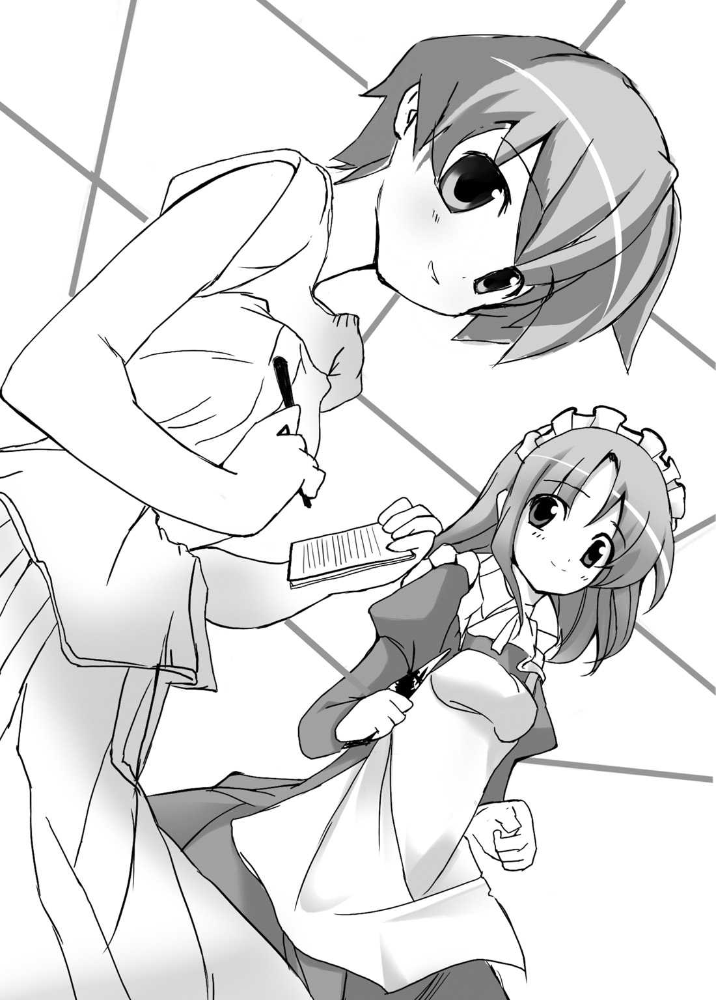
そのころデビルベアは、鼻をくんくんさせながら、学校をぐるぐると旋 回 していた。
――何やろ？ おかしな匂 いがするんやけど。
どこかなつかしさを感じる妙 な匂い。匂いというより、気配かもしれない。
どこから漂 ってくるのだろう。肌 がヒリヒリして、いてもたってもいられないような緊 張 感にさいなまれる。落ち着かないことこのうえない。
祭りのうわついた空気がそうさせるのかと思ったが、確かに何か起こっている。
一階の保健室の前を通り抜 けたときのことだった。
机を挟 んで女子生徒と向いあって座る、頭からヴェールを被 った黒い服の女性を見て、あわててひゅんっと飛びあがる。
彼女は机の上の水 晶 に手をかざしていた。水晶玉占 いの張り紙が保健室のドアに張ってあるのが見て取れた。
――あの、あの、おばはんやぁっ!!
デビルベアを拉 致 し、聖なる鳥かごに閉じこめて、願いを叶 えろと迫 った悪 魔 のような女。
――うっ、こ、怖ぁ......っ。
聖水を掛 けられて、消 滅 寸前まで行ってしまい、大変な思いをした。
あのときの恐 怖 を思い出したのか、心臓がバクバクして涙 目 になった。米 粒 のような涙を放射状に噴 きこぼしながら、ひゅんひゅんと飛びあがる。勢いではるか上空まで行ってしまい、眼下に校舎が見えた。
――何やろ......。
屋上に、細かい模様が丸く描 かれているのが見て取れた。
デビルベアは、高度を下げた。
悪 魔 召 喚 の魔 法 陣 が描かれていた。
魔法のことをろくに知らない人間が生半可な知識で描いたものらしく、本物の魔法陣とは細かいところがいろいろと違 っている。
本来なら、こんなもの、何の力もないはずだった。
なのに、屋上に、おかしな地場が発生している。デビルベアが感じていた匂いのモトはこれらしい。
階段のドアがぎぎぎと重い音を立てて開き、ライオンの着ぐるみを着た人が入ってきた。次に現れたのは、ウサギの着ぐるみだ。ネコに、犬、タヌキ、カエルにワニが続く。
露 わになっているのは顔と手だけだが、男も女も、若いのも、大人もいるようだ。
――えらいイカレてはりますのう。こいつらいったい何もんや？
ざっと二十人はいるだろうか。よくもまあこんなにも集まったものだと感心する。
――こいつら全員、普 通 の人間やな。ゆり絵はんみたいに、人間やけどわけのわからん力がある、ちゅうわけでもなさそうやな。
アンマンマンのかぶり物をしたトレーナー男が魔法陣の中央に進み出ておじぎをする。
着ぐるみ集団からいっせいに拍 手 が起こった。
――何がはじまるんや？
「みなさん。オフにお集まり頂きましてありがとうございます。僕が発起人のアンマンマンです。それではみなさん。手を繋 いでください。今からメールでお知らせしたとおり、願いを叶えてくれるぬいぐるみを召 喚 します」
デビルベアは、空から落ちそうになるほどびっくりした。驚 きのあまり実体化しそうになり、あわてて姿を隠 す。
――ワシのことかぁっ!!
――げぇええっ!! 捕 られてたまるかぁっ!!
「見事ＧＥＴできたあかつきには、ひとりあたり一日で所有します。そのあいだ、何回でも願いを叶えさせることができます。順番はくじびきです。コレに入れておくと、ぬいぐるみは逃 げることができません。宅配便で次の人に送るようにしてください」
アンマンマンが足下に置いてあった風 呂 敷 包 みを開いた。
中から出てきたのは聖なる鳥かごだった。聖なる虫取り網 までフェンスのところに立てかけてある。
――うぇえっ。あのっ、あのっ、鳥かごやぁっ!!
デビルベアは冷 や汗 を垂らしながら、空中でじたばたしている。逃げたいのだが、事態の推移を見極めたい気持ちもあり、身体がじりじりしてしまう。
カエルの着ぐるみがスッと手をあげた。
「メールを拝見したんですけど、ほんとうにあんなので召喚できるんでしょうか？ 悪魔召喚の儀 式 とはぜんぜん違いますけど。この模様は悪魔召喚の魔法陣ですよね」
――ふん。こんなもん、何の役にもたたへん。魔法陣っぽい、ただの模様やでぇ......。
「これは念のためです。悪魔だという説も捨て切れませんから、いちおう描きました。ですけど私は、あれは悪魔じゃないと思っています。メールにも書きましたが、テディベアの形をしているんですよ。私はあれは、座 敷 童 みたいな妖 怪 だと思っています。あるいは子供か赤 ん坊 の霊 ですね。だからあれで、絶対に出てきます」
――なんでテディベアってわかったんやぁっ!? ワシ、ワシ、妖怪でもないし、人間の霊でもないでっ!! ワシは悪魔やっ。悪魔やぞっ。
デビルベアは空中でじたばたした。
「歌の隠された意味については読んでくださっていますよね？」
召喚の対象が、実は彼らの上にいるなんて、夢にも思っていないのだろう。儀式の参加者は真 剣 な表情でうなずいている。
「では、手をつないで輪になって。魔法陣を取り囲むようにして。そろそろはじめます」
――あかんっ。はよ逃げなっ。こいつらに捕 まったら、えらい目に遭 わされる......っ!!
デビルベアはひゅんひゅんと空を飛んで逃げだした。
「どうかみなさん、楽しんでくださいね。雑談してもいいし、笑い声をあげてもいい。そんな緊 張 しないで。子供の霊なんですから、みなさんが楽しんでいたら絶対に出てきます。ですけど、出てきても、手を離さないで。ぬいぐるみを鳥かごに入れるまでは、手をつないだままにしてくださいね」
召喚の儀式が、いよいよはじまろうとしていた。
☆
「オスカルーっ」
「アンドーレ」
「私はフランスの、じょおおぉっ、なのですからーっ」
桜井坂高校の講堂は、今まさに三年Ａ組の舞 台 発表「ベルサイユの百 合 」の最中だった。
ドレス姿のお姫 様 と美 貌 の騎 士 が抱 擁 し、目と目を合わせて歌い踊 る波 瀾 万 丈 のストーリーに、観客席の女子生徒は両手を組み合わせ、はらはらしながら舞台を見ている。
元女子高とはいえ、男子生徒はひとクラスあたり数人から十人前後いるのだが、舞台に出ているのは全員女性だ。男役を務めているのも女子生徒だ。
主人公のヒロイン、男装の麗 人 オスカルを演じているのは、オスカル様と愛 称 で呼ばれ、女子生徒の羨 望 の視線を一身に集める岡 下 留 香 。
「オスカル様ーっ」
ここぞというシーンでは、観客席から黄色い歓 声 が飛び交う。
長身でさっぱりした美貌の彼女に、男装の騎士役は当たり役だ。
――うーん。岡下先 輩 、やっぱり綺 麗 だなーっ。
男の服装を着るからこそわかる、匂 い立 つような女らしさにほれぼれしてしまう。身体にぴったりした騎士服も、プロポーションの良さを強調している。
とつぜん歌い踊る様子も、なんでもないときにいきなりされるとけっこう怖 いが、舞台だとなかなか楽しい。そういうものだと身構えているからだろう。
――僕って、岡下先輩に愛の告白をされたことがあるんだよなーっ。キスしたこともあるしなぁ。ま、僕じゃなくて、僕の身体、だけど。......そういや、僕の身体は、今はりょうが使っているんだよなぁ......。
突 然 、視界が、茶色いモコモコした布でふさがれた。
「ぶっ」
霊体になりはてている僚に触 れることができるのは、この世の中でデビルベアしかいない。
僚は、顔にくっついていたデビルベアを引き剥 がした。
すごい魔 力 を持つはずの悪魔は、ガタガタガタガタ震 えている。しかも茶色の毛が見事に逆立っているありさまだ。
「おまえ、何を怖がってるんだ？」
「に、人間......ひぃ、恐 ろしい、恐ろしい......なんまいだぶなんまいだぶ......」
「悪魔のくせに人間が怖いのかよ？」
「そら怖いどすがなっ。人間どもが、ワシを召 喚 する儀式をしとる。ワシを捕まえて、鳥かごに押 しこめよるんやぁ～っ」
「なんだおまえ、捕まえられそうになったのか？」
僚は、思わず吹 き出した。
霊 体 になると恐 怖 感が欠落してしまう。
そんな彼には、デビルベアの恐 がりようはただひたすらおもしろかった。
はたと気付く。
「ちょっとまて、悪 魔 召喚の儀 式 を誰かがやっている、って言ってたな......？ どこでだ？ どこでそんなことをやってるんだっ？」
「こ、ここ、この上、この上どっせっ!! 」
ガンと頭を殴 られた気分だった。
「屋上か？ 屋上なのか？ 今やってる最中なのかよ？ そういう儀式って、夜中にやるもんじゃないのか？ ま、まだ、十時半だぞっ。な、なんで学校で？ 誰が何のために？」
何のために、は容易に想像できる。
デビルベアを捕まえて願いを叶 えさせるためだ。
デビルベアは領収書をお金に変えたり、魂 を入れ替 えたりできる。悪魔のささやきを使って、人間に気まぐれを起こさせることもできる。
中身は下品だが、外側はクマのぬいぐるみで見るからに愛らしい。その上人間の望みを叶えてくれるなんて、なるほど魅 力 的 なおもちゃだ。
「おいっ。デビルベア、学校で悪魔召喚の儀式なんかして、おかしなことにならないだろうな!? 」
「そ、そんなん知りまへんがな。ワシ、逃 げてきたんどっさかい。ゆり絵はん、どこでっか？ ワシ、ワシ、ゆり絵はんに合わせ鏡してもらうんやぁっ!! 」
デビルベアは、人間に捕 まえられるかもしれない恐怖で錯 乱 状態だ。
古泉先生の拉 致 監 禁 脅 迫 がよっぽど恐ろしかったらしい。
「ムダだって。時の潮が満ちるときしか魔 界 の扉 は開かないって言ってたのはおまえじゃないかよ」
「そやかて、ゆり絵はんなら、閉じてる扉かて、力ずくでこじあけはるかもしれへんやんかっ!? あのお人はなんか人間ばなれしとるよって」
「おい、僕の恋 人 を化け物みたいに言うのはやめろ」
「でも、ゆり絵はんにしろ、あの怖いおなごはんにしろ、悪魔よりも悪魔っぽいやおへんか」
あの怖いおなごはんとは、保健室の先生らしい。
儀式のきっかけを作ったのは、古泉先生だろう。
先生がスピリチュアル好きなことは、僚だって気付いていた。性 転 換 薬をネット通 販 しないかとすすめたほどだから、彼女がデビルベアのことをどこかの掲 示 板 にアップしたとしても不思議はない。
「ワシ、ワシ、十一月十日までなんて待てへんっ。い、いますぐ、魔界に帰りたいんやぁっ」
「おい、ちょっと待てよ。次に、魔界の扉が開くの、十一月十日なのか？」
「そ、そうどっせ」
――ゆり絵の検査入院の日じゃないかよ......。
冷 や汗 が出た。
せっかくゆり絵が決心しているのに、飼い主としてペットを見捨てるわけにはいかないから、入院を延 ばすと言いかねない。
ゆり絵は、ああ見えて責任感が強いのである。
「一 緒 に行こう」
「どこに？」
「屋上」
「えっ。い、行くんどっかっ？」
「行かなきゃ、何もわからないだろ」
「い、いやや。こ、怖ぁ......怖おすがなっ」
「悪魔召喚の儀式なんだろ。魔界の扉が開くかもしれないぜ。おまえ戻 れるかもしれないんだよ」
とっさに言ったひとことだったが、逃げ腰 だったデビルベアがしゃんとした。握 り拳 をつくって前後に振 っている。勇気を奮い起こそうとしているのだろう。
「行きまっさ!! 」
僚は、デビルベアを引き連れて、屋上へと移動した。
☆
「今は困難運が来てるけど、これはもうすぐ去ってしまうの。代わってやってくるのは恋 愛 運 ね。だいじょうぶ。来月になれば運気が良くなるから、彼ともうまくいくはずよ」
「わあ、先生、ありがとうございます」
古泉麻 子 は、席を立つ生徒をほっとした気分で見送った。
いい卦 がでるとほっとする。生徒たちには、笑顔で毎日を過ごして欲しい。
そのとき、廊 下 を吹 き抜 けた風が、麻子の髪 を覆 う黒ラメのショールを揺 らした。
保健室の前の廊下に机を出しているせいで、風が吹きこんでけっこう寒い。
身体がぞわっとした。
「何これ？」
これは物理的な寒さと違 う。背筋を冷たいものが伝いあがってくる。
これはスピリチュアルな風だ。霊気 による冷気 。
何かが起こっている。屋上だ。ついにはじまったのだ。悪 魔 召 喚 の儀 式 が。
麻子は、頭から被 っていた、黒ラメのショールを外し、椅 子 の上に畳 んで置いた。
紫 の小さなクッションの上で鎮 座 ましましている水 晶 玉 をそのままにして席を立つ。
☆
ゆり絵は、ウェディングドレスの裾 を気にしながら階段をあがっていた。
上のほうから、妙 な気配を感じたのだ。
背中に氷でも当てられているような、そんなゾクッとくる冷たさは、まったくはじめてのものだった。
ときおり立ち止まり、はぁはぁと息をつく。
気はあせるのだが、ゆり絵のぽんこつの心臓では、ゆっくりしか階段をあがれない。ドレスの裾が足にまとわりついて邪 魔 だ。
また、ゾクッと来た。
「何なの？ 何が起こっているの？」
ひとりごちたときのことだった。ふいに耳元で相づちを打たれて面食らう。
「如月さんも感じるのね」
「きゃっ。古泉先生っ。びっくりしたじゃないですか！」
ウェディングドレスを着た白ずくめのゆり絵と、黒い服を着た麻子は、肩 を並べて屋上への階段をあがっていく。
「やっぱり如月さんもゾワゾワするの？ 霊 感 があるのは、如月さんと私だけなのかしら」
「そうです。ゾワゾワですね。なんだろう。このヘンな感じ」
「悪魔召喚の儀式だと思うわ。屋上に魔 法 陣 が描かれていたの。私がモップで消したけど」
「悪魔ってデビルベア？」
「ええそうよ。だってあれって、願いを叶 えてくれるぬいぐるみでしょ。人間にとっちゃ、魅 力 的 な生き物だわ」
「あんなものいくらでも貸してあげますよ」
「デビルベアをレンタルする前に、滝沢くんの身体を男に戻して、如月さんの心臓の穴を塞 ぐように頼 むのね」
「健康な心臓が欲しいっていうのは、一度頼んでいるんですが、あいつ、できなかったんです。デビルベアって、何でもできるわけじゃないですよ。バカだし無能だし、でも、すごい力があるわけだから、逆に心配なんですよね」
階段を一歩あがるたびに、不安で胸がキュウと痛くなる。不安で不安でたまらない。わけのわからない恐 怖 でゾクゾクする。
「如月さん。ほんとうに、だいじょうぶ？ 顔色、悪いわよ」
「先生こそ」
ゆり絵は、踊 り場 で足を止め、屋上のドアを見あげた。
ドアの隙 間 から、秋の太陽が放射状に差しこんでいる。
「私、ここの階段で、こけたことがあります。ここにあの子はいたんですね。あの子、十年待ったって言ってました。僚と一 緒 に歩いていたから嫉 妬 されちゃって、足首をつかまれたのかな？」
「学園伝説だと思ってたのに、ほんとうにいたのね」
「ってことは、先生も見てないんですか？」
「如月さんも？」
「はい。私は見えるタチなんですが、ここで幽 霊 は見たことがありません」
「私もよ」
「十年間、じっとしてたんですよね。生徒たちにあんまり姿も見せず、ほとんど悪さもしなかったのに、なんでいきなりこうなっちゃったんでしょうね？ 文化祭の前に、ほんのちょっと悪さをするだけだったはずなのに」
「何かきっかけがあったのかしらね？」
二人はなごやかに会話をしながら、階段をあがっていく。
しゃべっていないと、不安という名の巨 大 な岩に、押 しつぶされそうな気がした。
「あれ？ 何か......」
「声が聞こえますね」
「ほんとね。遊んでいるみたいな......」
二人は、屋上のドアを開けた。
☆
りょうは、校舎の側面についている非常用の外階段をあがっていた。
校舎内の階段は使いたくなかった。
自分が十年もとらわれていたところなんて、もう二度と歩きたくない。
秋のさわやかな風に吹 かれ、外を見ながら階段を歩くのはなかなかいい気分だった。
「先生......」
十年前の桜井坂女子高校の文化祭。先生と屋上で逢 う予定だった。
家庭教師の先生だった。理数系と英語が得意で、教え方が上手で熱心な先生だ。
大学生で、教育学部に通っていた。
その先生が女子高に教育実習に行くなんて、私だけの先生で無くなりそうで不安だったことを覚えている。
先生から文化祭のチケットを貰 ったとき、絶対行くと言ったのは、先生の教え子や、教師としての先生を見たかったからかもしれない。
それがあんな結果になるなんて......。
妊 娠 検査薬なんて、朝にチェックしなきゃよかったのだ。
何を無くしたのかも忘れたままで、無くしてしまったふたつのものを、探して探して探し続けて、十年もの時間が無 為 に経過した。
でも、もう、私は探さない。
私は先生に復 讐 する。
無くしてしまったふたつのもの。
ひとつは指輪。
もうひとつは、赤ちゃん......。
私と先生の、子供。
☆
「な、なんだよ。これは......」
僚は、ぽかんと口を開けて屋上を見た。
中央に、チョークで書かれた魔 法 陣 がある。
魔法陣の周囲に、着ぐるみを着た人間が手を繋 いで輪になっていた。ネコにウサギにワニにカエル、ライオンにタヌキもいる。
アンマンマンのかぶり物をした人間だけが、普 通 の洋服を着ていた。
「かーごめ、かごめ、籠 の中の鳥は、いついつ出やる。夜明けの晩に、鶴 と亀 が滑 った」
悪 魔 召 喚 の儀 式 などというおどろおどろしいものではなかった。
かごめかごめだ。
昔からある子供の遊び。
それを大人たちが真 剣 にやっている。
年 齢 も性別もさまざまな人たちが声をそろえて歌うのに、照れがぜんぜんなく、妙 な真剣さが感じられる。
その様子ははっきり言って不気味だった。
「あれ、何か......？」
違 和 感 を覚えた。だが、何がおかしいのかわからない。
着ぐるみの参加者が雑談している。
「ねぇ。こんなので、ほんとうにぬいぐるみが出てくると思う？」
「さあ、出てくるんじゃない？ メールに書いてあったでしょ。鬼 のいないかごめかごめは降 霊 術 だって。ぬいぐるみは子供の霊 だから、かごめかごめが召喚の儀式になるんだって」
――あ、そうか、これ、真ん中に人がいないんだ。
何がおかしいのかやっとわかった。
子供の頃 にやったかごめかごめは、まんなかに鬼役の子供がひとりしゃがみこみ、両手で顔を覆 って、後ろの正面に来た人の名前を言った。名前が当たると鬼は当たった子と交代する。その鬼がいないのだ。
「ぬいぐるみが出てきたら、ウサギさんは何をお願いする？」
「私はねぇ、家のローンを何とかしたいのよねーっ。タヌキくんは何？」
「俺は就職だよなぁ。なかなか就職が決まんなくてよぉ。第二新卒って大変だよなぁ」
「私は彼だなぁ。つきあって三年だし、来年は三 十 路 だから、いいかげん結 婚 したいのよねぇ」
彼ら彼女らは雑談をしながら、熱心にかごめかごめをしている。
状 況 の異様さと、ローンだとか就職だとか結婚だとかの生々しさのギャップがおかしい。
後ろの正面だあれ、でいったん止まるものの、ワンテンポ置いてすぐにまたかごめかごめがはじまる。
「気持ち悪いわね」
「わっ、わわわっ、びっくりしたっ!! ゆ、ゆり絵。いつ入ってきたんだよっ」
ウェディングドレスを着たゆり絵が横に立っていた。スカートがフワッとふくらんだドレスを着て、胸を張って立っている。ツインテールに結った黒 髪 が白いドレスによく映えていた。
「失礼ねっ。ちゃんと階段をあがって、ドアを開けて入ってきたわよっ!! 幽 霊 に会ったように驚 かないでよっ」
――ゆり絵って綺 麗 だなーっ。
こんなときなのに、ゆり絵のドレス姿に見とれてしまう。
「滝沢くんがいるわね」
「見えます？」
「ぼんやりとね」
ゆり絵の横に立っている古泉先生がつぶやく。
古泉先生の視線は、はっきり僚を捉 えていた。
養護教 諭 はいつも白衣なので、黒い服が新 鮮 だ。
「えーと、あのその......、どうしてこうなったかは......」
「あとで聞くわ。この人たち、デビルベアを幽霊だって思っているのね。降霊術なのよね。これって」
養護教諭がひとりごちる。
スピリチュアル好きの先生は、そうした知識も豊富なようだ。
「かごめかごめが降霊術だなんて、信じられないです。私、子供の頃、普通に遊んでましたよ」
「えーと......ちょっと待ってね......」
先生はケータイを取り出すと、数字盤 に親指を忙 しく走らせた。
「これを見て」
僚は、液 晶 画面をのぞきこむ。
ネットの百科辞典だった。真ん中に鬼がいないかごめかごめは降霊術だと書いてある。人の輪の真ん中に、霊が降りてくるのだという。
「なんだよ。これ、ずいぶん気持ちの悪いこと、書いてあるな......」
かごめかごめの歌の解説を読んだ僚は、顔をしかめる。
かごめかごめ（籠女のこと。籠を抱 いている女性。すなわち妊 婦 ）
かごの中の鳥は（お母さんのお腹の中の子供は）
いついつ出やる（いつ生まれてくる）
夜明けの晩に（夜明けから晩まで、つまり一日のうちのいつか）
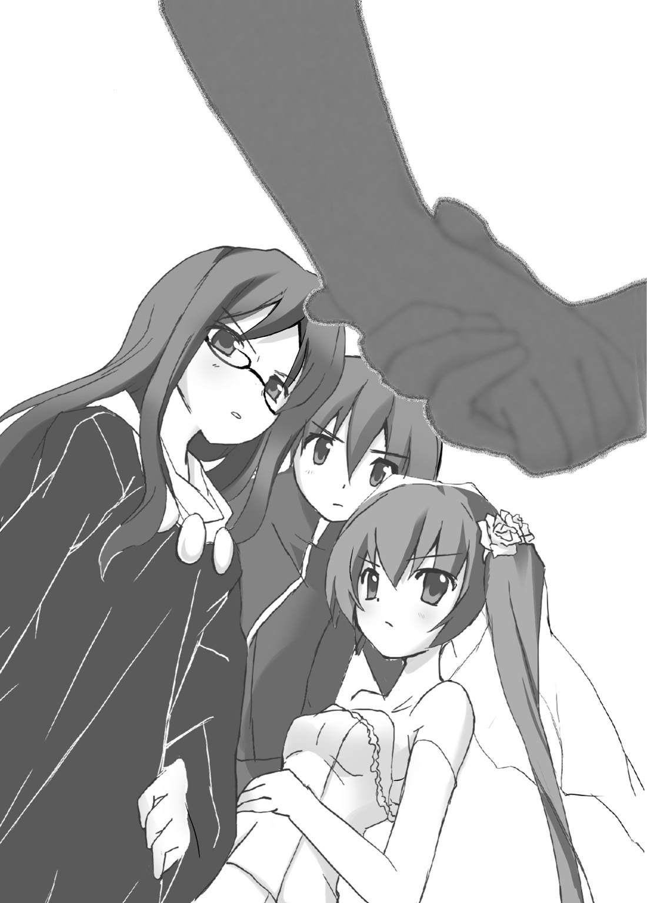
鶴と亀が滑った（鶴と亀はおめでたいことの象 徴 。それが滑ったのだから、生まれることの否定。妊婦は階段から突 き落 とされて流産してしまった）
後ろの正面だぁれ（私を殺したのは誰？）
顔をしかめていたのは、僚の腕 の中のデビルベアも一 緒 だった。
小さな腕を器用に組み、真っ黒い瞳 を見開きながら、魔 法 陣 をじっと見つめている。
「これで出てくんのはそのへんにいてる人間の霊 だけや。そやのに、なんやねん。この匂 いは......これ、地 獄 の匂いや。どっかで嗅 いだことがあると思うてましたんや。地獄の釜 のフタが浮 いてまんな......。おかしいわ。なんでこんな変な力が発生してますねん？」
養護教諭が置いたラッキーストーンと、アンマンマンが生半可な知識で描いた魔法陣が効果を自乗させているのだが、そんなことはわからない。
鉱物は特定の波動を放つ。水 晶 （クオーツ）の振 動 は、電波無線やクオーツ時計に使われているほどだ。
その振動が人の思いと同調し、より大きな波動になって返ってくる。
石は、人間の幸運を願う思いや未来を知りたいと思う情念を増 幅 させ、力にして人間に返してくれる。
神社のご神体が石でできている場合が多いのも、水晶玉占 いをするのも、石が持つ思念増幅装置としての力によるものだ。
麻子はパワーストーンをめだたないところ......屋上の角に置いた。ちょうど角を囲むかたちになった。そのため力は石で囲まれた内側を向いてしまった。さらに、魔法陣の円に、かごめかごめの円が重なり、思念の力は倍増し、およそありえないほどの力場となった。
素人判断が招いた偶然といえるだろう。
デビルベアは怖 いのか、僚にぴったりくっついて小刻みに震 えている。
中身がオッサンだと知っていても、幽霊になり果てて何にも触 れられない彼にとっては、フワフワの毛皮の触 り心 地 が良いのでそのままだ。
ゆり絵は、不 審 そうにデビルベアを眺 めている。
デビルベアは姿を消しているのだが、ゆり絵にはしっかり声が聞こえているらしい。
「おいおい、こいつら、止めたほうがいいんじゃねぇの？ 地獄の釜のフタが開くなんてシャレにならないだろ」
「僚は黙 ってなさいっ!! あんたは何もできないんでしょっ。幽霊のくせにっ」
「あ、はい、その通りです。すみません」
幽霊、という言葉に反応したのか、アンマンマンがくるりと首をめぐらせて僚たちのほうを見た。作り物の目がキロッと光り、僚たちを見つめる。
「うっ。こ、怖ぁ......っ」
「君たちも参加しないかい......っ？」
アンマンマンが息を荒 げながら声を掛 ける。
着ぐるみの参加者はどこか気楽な感じがするのだが、アンマンマンだけ必死さが違 う。
「遠 慮 します！」
ゆり絵がぷいと顔を背 けた。
「あ、あれ、この声？」
僚は首を傾 げた。どこかで聞いたことがある声だ。
若い男の声で、しゃべり慣れている感じがした。
口調のせいか、アンマンマンからは、ある種の職業に共通した匂いがあった。
――この人、先生？
「後ろの正面だぁれーっ」
ぐるぐると回転していたかごめかごめの円が止まった。
「それは私」
非常階段へと通じる低い柵 に作られたドアの前に、人 影 が立った。
女性化した僚だった。ショートカットの髪 と白いワンピースの裾 を秋風に揺 らしながら腰 ほどの高さしかない柵にもたれるようにして立っている。
非常階段は屋上の出っ張った部分にあるために、まるで彼女の身体が、青い空に浮いているように見えた。
りょうは、表情の抜 け落ちた顔をしていた。口もとが笑みの形に上がっているが、黒い瞳は笑っていない。
「私はりょう。あなたが階段から突き落として殺した、りょう」
りょうは繰 り返した。たっぷりと呪 詛 を乗せた低い声は、屋上に響 き渡 った。
生身の人間のはずなのに、絶対零 度 の空気を纏 っているような、見る者の恐 怖 を誘 う雰 囲 気 がある。
儀 式 の参加者は、何だ何だとばかりに顔を見合わせている。
願いを叶 えてくれるぬいぐるみが出てくるはずだったのに、登場した人物は人間、それもみかけは普 通 の女の子だったのだから、混乱するのもムリはない。
「りょうっ!! りょうなのかっ!! 」
アンマンマンが悲鳴をあげた。
つないでいる手をほどき、非常階段の彼女に向かってふらふらと歩みよる。
「よかった。ようやく君に逢 えた。十年ぶりに桜井坂に赴 任 するなんて、しかも文化祭の前なんて、ぜったいに逢えると思っていたんだ」
「先生、逢いたかった......私を殺した、先生にやっと逢えた......ふふ......うれしい......十年ぶりね......？」
「僕が......君を......殺した......!? 」
「私、ようやく先生を殺すことができるのね？」
りょうが身体から離 れ、アンマンマンに向かってつかみかかる。
アンマンマンは、かぶり物を脱 ぎ捨 てて叫 んだ。
「君は死んでなんかいない！ 勘 違 いしているんだっ!! 」
意識を失ってしまった僚の身体がぐらりと揺れた。
柵にもたれていたからたまらない。
背中を下にして落下していく。
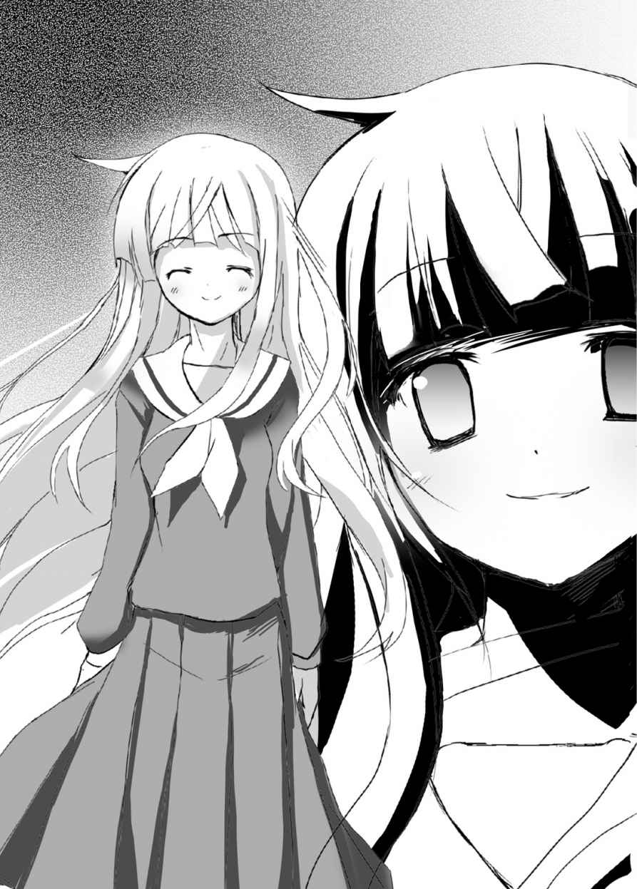
僚は真っ青になった。
校舎は四階建てで、ここは屋上だ。
「うわーっ。わわぁっ。お、落ちる。落ちるぅっ」
僚はあわてて移動し、落ちていく自分の身体を支えようとした。デビルベアも僚と一 緒 に空を飛び、僚の腕 をつかんでひっぱりあげようとがんばっている。
どうせ触 れないだろうと思いながら伸 ばした指先が、スッと自分の肩 にめりこんだ。
「あっ、戻 るっ、戻れるっ!! 」
いっぱいに伸ばしたゴムひもが、指を離すと同時に一 瞬 で戻るような雰囲気で、魂 が身体に吸いこまれていく。
目を見開くと、青い空と階段、それに屋上の柵が見えた。
「も、戻った」
指が動く、手が動く。風が髪を撫 でる感 触 がわかる。
だが、事態は切 迫 していた。
身体が落ちている。
四階建ての校舎の屋上から、下に向かって、まっすぐに落ちていく。
風がうなる音が耳元でした。
「おいっ。デビルベアッ、何とかしろよぉっ!! 」
自分の喉 が悲鳴をあげている。デビルベアも必死に僚を引っ張りあげようとしているのだが、少年ひとりの身体を引きあげるほどの力はない。
「落ちなはんなやーっ。ワシ、ゆり絵はんに殺されるぅーっ」
「だめぇっ。僚っ。僚ぉーっ」
デビルベアの悲鳴と、頭上から振 ってくるゆり絵の泣き声が交 錯 する。
――死ぬのかな？
一秒にも満たない短い時間なのに、生まれてから今までの記 憶 が脳裏に再生されていく。目が回るような早さだった。
走 馬 燈 のように、という使い古された表現がぴったりだった。
目を閉じたときのことだった。
たくましい腕が、ズシッと僚の身体を受け止めた。
ずんと来る衝 撃 が身体を襲 い、何が何だかわからない。
階段の踊 り場 に立っていた誰かが、腰から落ちてきた僚を、お姫 様 だっこで受け取めたらしい。
「わーっ、わわわっ。わーっ」
勢いがついていたので、その人物は僚を抱 きしめたまま尻 餅 をついた。巻きこむようにして横に転がり、僚の身体にのしかかる。
背中に秋のお日様に温められたコンクリートが当たって痛い。
「痛い......よ、な？」
自分に確かめるように言う。
痛覚がある......。
ということは......。
「えっ。僕、生きてる......。生きてるんだ......っ」
僚のすぐ上で顔をしかめているのは勇作だった。イタリア貴族の扮 装 をしたままなので、ロミオに押 し倒 されているジュリエットのようだ。
勇作は痛そうに顔をしかめている。
「痛ぇ......し、尻 、打った......」
「ごめん。助かった。ありがとう......勇作がいなきゃ、死んでいるところだった」
「どこか痛いところはないか？」
「うん。だいじょうぶだ」
「よかった。君みたいなかわいい女の子 に何かあったらと思うと、思わず身体が動いたんだ」
たぶん、ナンパする目的でりょうのあとをついて歩いていたのだろうが、落ちてくる女の子をお姫様だっこで受け止めるなんて、フェミニストな勇作らしい行動だ。
「女性化した君をはじめて見たときから、なんてかわいいんだ、って思っていたんだ」
勇作が唇 を重ねてきた。
「愛 している」
助けてもらった安 堵 感 で呆 然 としていた僚は、逃 げることができなかった。
唇が合わさるひんやりした感触にほっとする 。
この唇も、この腕も、この身体も全部自分のものだ。
――生きてる......。僕は生きてるんだ......。
同性の幼なじみにキスされているというのに、嫌 な感じはぜんぜんなかった。
どっちみち身体は女なのだし、男にキスされても別にいいかと思ってしまう。だいいち勇作は、身体を張って助けてくれたのだ。
――そっかーっ。勇作がモテるわけだよ。ほだされてしまうんだなぁ......。こうやって好きになっていくんだろうな......。
勇作とのキスは何回目だろう。ゆり絵の身体に入っていたとき、勇作に押し倒されそうになったことが何度かある。さすが名うてのプレイボーイだけあって、溶 けそうに気持ちのいいキスだった。
――あれ、勇作、舌入れてこないな......。
反応がヘンだった。目を見開いて固まっている。
「わーっ。ぺっぺっぺっ」
勇作がぱっと立ちあがり、気持ち悪そうにえずいた。顔を赤くしたり、青くしたりして、腕 だの背中だのを掻 きむしっている。
「お、男っ？ 男ーっ!! キモッ!! 」
「何を言ってるんだ？ 僕は今、女の身体をしてるだろ......わーっ。わわわーっ。男になってるぅっ!! 」
僚は、胸だの股 間 だのお腹だのをパタパタと触 りまくった。
ふんわりぷにぷにの胸のふくらみが消え失せて、手で胸を押さえるたびにブラジャーのカップがパフパフする。胸板も厚くなってしまったらしく、ブラジャーのアンダーベルトが胸板に食いこんで痛い。
何よりも彼を感動させたのは、股間に感じる確かな男根の感 触 だった。
両手で股間を押させて背中を反らしたポーズのままで、じいいんと感動に浸 る。
「やったーっ。男に戻 ったぞーっ。ばんざーいっ、ばんざーい、ばんざーいっ」
勇作に抱 きついて踊 り出す。
勇作は、男にキスしてしまったことがよほどショックだったのか、納豆嫌 いの人間が間 違 えて納豆を食べたような、世にも情けない顔をしている。
女の身体をしてたら元が男でも欲情するらしいが、身体が男だとダメらしい。わかりやすくてきっぱりしている。
「せ、せめて、化 粧 だけでも落としてくれ......っ。滝沢、おまえ、すげぇキモいぞ。勃たなくなったらどうしてくれる......」
勇作が空吐 きしながら、涙 ながらに訴 えた。
なんで急に戻ったのだろう。
りょうの魂 が抜 け出てしまったことにより、身体が本来の性別に戻ったのだろうか。
「そ、そうだ。りょうは？」
僚は、身体がなめらかに動くことに感動しながら、階段を駆 けあがった。僚の身体を落とすまいとしてがんばっていたデビルベアがいないことには、少しも気がつかなかった。
☆
それより少し前――。
「君は死んでなんかいない！ 勘 違 いしているんだっ!! 」
階段の下へと落ちた僚を助けに行こうとしていたゆり絵は、アンマンマンのかぶり物を脱 ぎ捨 てた青年を見て驚きの声をあげた。
「倉 森 先生っ」
半月前に赴 任 してきた産休補助教員で、数学の倉森先生だった。
半 透 明 のぼんやりした幽 霊 は、魔 法 陣 の中央に浮 かぶと倉森先生に向かい合った。輪の中にいるときだけ姿形がくっきり見える。
幽霊のりょうは、セーラー服を着ていたが、桜井坂高校とは少しデザインが違 っている。僚にくっ憑 いていたときは、あいまいにしか見えなくて、他校の生徒だとは気がつかなかった。
かごめかごめをしていたメンバーがどよめいた。
「ねえ、あれがぬいぐるみなの？」
「幽霊は幽霊だけど、子供じゃないね。あれって、女子高生じゃないの？ セーラー服着てるし」
悪 魔 召 喚 のメンバーは、かごめかごめをやめてしまい、のんびりしたことを話している。
つないだ手をほどかないのは、アンマンマンに言いくるめられているのだろう。
「えっ。僕、生きてる......。生きてるんだ......っ」
階段の下のほうから、僚の声が聞こえてきた。
――よかった。僚はだいじょうぶそうね。
先天性の心臓病のゆり絵は、階段を駆け下りることができない。迷ったが、ここにいて、幽霊と倉森先生の関係を確かめることにした。
幽霊は、恨 みがましい表情で倉森先生を見つめている。
「先生......。私、階段から落ちたとき、痛かった......。血が流れて、止まらなくて......、文化祭で、みんな楽しそうなのに......私だけ、痛くて、苦しかったよ」
「助けられなくてごめんっ！ ほんとうにごめんっ」
倉森先生は、痛そうな顔をした。
申し訳なさそうに頭を下げる。
「りょうに逢いたかった。ずっとずっと逢いたかった。儀 式 をしたのは、りょうに逢うためだったんだっ」
「先生は、私を拒 絶 したわ......。お腹に赤ちゃんがいるって言ったら、イヤそうな顔をした」
「ご、ごめん。動 揺 してしまって......僕は、結 婚 して、君と赤ちゃんを守っていく自信がなかった。僕はまだ、二十二歳 の、教育実習生だったんだっ!! 」
「先生は......私を......嫌いだったの？」
「違う。僕はりょうを愛 している！ 生徒を好きになるなんて、カテキョ失格かもしれない......。だけど僕は君が好きなんだっ」
家庭教師と生徒。
倉森先生は、教育実習生として桜井坂高校に来ていた。十年前の文化祭。妊 娠 を告げたりょうは、どういういきちがいからか、階段から落ちた。
「私、階段で無くしたものがふたつあるのね。......拾ってから逝 こうって、そう思っていたの。でも、無くしたものが何か忘れちゃってて......階段から下りられなくなってたの」
「君が落としたもののひとつが、ここにある」
倉森先生は、ジーンズのポケットに手を入れた。
グーにした手を上向かせ、そっと開く。
手の中に入っていたのは、一連のシンプルなシルバーリングだった。
十七歳に恋 人 からもらって左手の中指につけておくと、幸せになれると言われている。女の子たちのあこがれの恋人のリング。十年前も今も、女の子という生き物は変わっていない。
銀は磨 かないと黒く変色してしまうものなのに、ぴかぴかに輝 いている。
「君が、指から外して僕に投げつけたものだ。僕が拾っておいた。ほんとうは、眠 っている君につけたかったけど、看護師さんに外すように言われたんだ。むくんで取れなくなるかもしれないからって......」
「眠っている？」
「そうだ、病院で、十年間、ずっと眠り続けている。ケガは癒 えてる。もともとたいしたケガじゃなかったんだ......」
「そんなはず......私、死んだって思ってた。階段から落ちそうになって......先生が私に向かって手を伸 ばして......」
「君の手をつかめなくて、助けられなくてすまない......っ!! 」
「突 き飛 ばしたんじゃなかったの!? 先生は、あのとき私を突き飛ばして......」
「もういちど、よく思い出してくれないか？」
「......あ、そ、そうだわ。私、指輪を拾おうとして......私、自分で、バランスを崩 して......階段を、落ちたんだわ」
りょうの妊娠の報告に、あのとき、倉森先生は困った顔をした。
精神的な拒絶だった。
それが階段を落ちる苦痛と混乱の中で、物理的に拒絶されたと思いこんだ。
「でも、お腹の赤ちゃんは、死んでしまったわっ」
りょうは、お腹を両 腕 で抱 え、身体をくの字に折り曲げて悲鳴をあげた。
「違 う！ 君は妊娠なんかしていなかったんだよ!! 病院で、検査して、赤ちゃんがいないことがわかったんだっ」
「そんな......妊娠検査薬が反応したのに......つわりもあったし、体温も高くなっていたのに......」
「医者から聞いた。想像妊娠って、本当に妊娠みたいな症 状 が出るんだって。お腹だってふくらむ人がいるんだって」
「そんな......」
「君は生きてる。生きているんだ」
りょうが無くしたと思っていた大事なもの。
指輪。
愛の結 晶 。
りょうの身体......。
そして命......。
すべてはりょうの誤解だった。
りょうは、命を無くしてなど、いなかったのだ。
「あのとき言えなかったことを、今、君に言うから聞いてくれ」
先生は言葉を切り、生 霊 に向かって指輪を乗せた手を伸ばした。
「僕と結婚してください」
表情の乏 しい幽 霊 の顔が、驚 きの色に染められる。
ゆり絵の目には、喜びよりも、驚 愕 が勝 っているように見えた。
「もう二度と、りょうを失いたくない。......僕は君を守る......だから。その、もう一度言うよ......」
りょうは、信じられない、とばかりの表情で小首を傾 げている。
誤解したまま十年も無 為 に過ごし枯 れ果 ててしまった彼女の心に、先生のりょうを大事に思う気持ちがゆっくりと染みていく様子が、見ているゆり絵にもわかる気がした。
「僕と、結婚......してください」
りょうは甘 く笑った。純 朴 そうな少女の素顔がふっと浮 かぶ。そして、コンクリート地面に降り立つと、そっと左手をさしのべた。
「はい......」
先生が、りょうの手を取り、左手の薬指 に指輪を嵌 める仕草をする。
触 れることのできない彼女の指に、指輪が嵌 ったように見えた。
恋人リングの中指ではなく、ちゃんと薬指に、指輪が嵌った。
彼女は、とろけるような笑顔を浮かべた。
グーにした左手に右手を乗せて口に当て、シルバーリングにキスをする。
「私、先生を待っていて、よかった......」
セーラー服のりょうの全身が、ぱあっと白く発光し、金と銀の光の粒 子 になって散りながら、空気に溶 けて消えていく。
光がきらきらと降り注ぎ、世界が二人を祝福しているように見えた。
――いいなぁ......。
彼を待ち続けた彼女がいて、彼女を待ち続けた彼がいる。
十年越 しの恋 愛 の成就を目の前で見て、ゆり絵の胸が熱くなる。
かごめかごめをしていた皆 が手を離し、いっせいに拍 手 をした。
倉森先生は、アンマンマンのかぶり物を片 腋 に抱えると、階段を駆 け下 りていく。恋 人 の病院へと行くのだろう。
彼女はきっと目覚めていて、先生と見つめ合って笑うのだ。
だが、これで終わりではなかった。
ぜんぜん終わってはいなかったのだ。
☆
非常階段をあがった僚が見たものは、角の側 溝 のところにしゃがみこみ、何かを持ちあげようとしてうんうんとうなり声をあげているデビルベアだった。
実体化しているが、角の狭 いところなので、儀 式 の参加者は気付いていないようだ。
「うおっ、何だっ？」
デビルベアを蹴 り飛 ばしそうになり、あわてて後ずさる。
「僚はんっ」
デビルベアが僚を呼んだ。
「ち、力、貸してくださいっ。こ、この石が妙 なふうに作用して、地場を固定させてますねん。こ、これを外さな......地 獄 の釜 のフタが、う、浮きますねんっ」
悪 魔 召 喚 にしろ、降 霊 術 にしろ、ゆり絵がやった合わせ鏡にしろ、魔界、あるいは天界など、異界に通じるゲート（扉 ）を作る行 為 である。
出入り口であるわけだから、めあてのものがでてくるとは限らない。
人間が異界へと旅立つこともあれば、死 霊 や悪魔が出てくることだってありうる。
今はまだ、地獄の釜のフタが浮いているだけで、扉は完全には開かれていないが、異界へのドアが、今まさに開きつつある状態だ。
デビルベアは、磁場を固定し、思念を増 幅 させているラッキーストーンを外そうとして必死になっていた。
「な、なんでやっ？ なんで、なんでこんなに重いんやぁっ」
「わかった。外せばいいんだな......うぉっ、重ぃいーっ」
デビルベアと交 互 に石を持ちあげようとするが、コンクリート地面に張り付いたようになっていて持ちあげることができない。
手のひらサイズの小さな石なのに、まるで強力な磁力に引っ張られているみたいだった。
勇作が非常階段をあがってきた。僚を見て、いやそうに顔を背 ける。
「勇作、手伝えっ!! 」
僚の必死な様子に気付いた勇作も首をひねりながら参加して、男二人とデビルベア一匹 で交互に持ちあげようとしているのに、小さな石はびくとも動かない。
「滝沢、このオモチャは何だ？ しゃべるし、動くし、おもしろいじゃないか。よくできてるなぁ」
勇作はデビルベアを見て、のんきに感想を言っている。
「取ればいいのね？」
ゆり絵がひょいと石を持ちあげた。
デビルベアが勢いで地面にころんと転げ落ちる。
「うわっ。ゆり絵はんはやっぱり人間離 れしてますのぅ」
「あっ。ぬいぐるみだっ!! 」
「ほんとうにでてきたんだっ。日本語しゃべっているぞーっ」
「い、いややーっ。いややーっ。捕 まるのはいややぁっ」
デビルベアが涙 を噴 き出しながら、屋上をぐるぐると旋 回 する。そのあとを、召 喚 の儀式にやってきた人間たちがわあわあと声をあげながら追いかける。
「勇作くん。誰にキスしたの？」
「いやだなぁ。麻子さん。どうしてそんなことを言うのさ？ 俺、誰にもキスしていないよ」
「唇 に口紅がついているわ」
「さ、錯 覚 だよ。俺はさ、あ、麻子さんがいちばん好きなんだ」
「知らないっ。大 嫌 いっ!! 」
「あ、麻子さぁんっ」
こんなときだというのに、勇作と古泉先生が痴 話 喧 嘩 をはじめた。
あっけにとられて眺 める僚とゆり絵の前を、デビルベアと着ぐるみの大人たちが追いかけっこをし、年の差カップルがケンカしている。
阿 鼻 叫 喚 の嵐 が吹き荒 れる。
「ゆり絵はんっ。お、お願いやっ。お願いがありまんねんっ、魔 法 陣 の中央に向かって、その石、投げてつかあさいっ」
「わかった。つかまつるわっ」
おかしな日本語を操りながらゆり絵が投げた石は、何かに当たって撥 ね返った。
「あれっ？ 何か、あるみたいな......」
「ゆり絵はん、見えまへんのか？ 地獄のフタや。浮 いてますねん。このままやと亡 者 が出て来ますねんっ。今も、フタの隙 間 から外をのぞきこんでまっ」
僚にはさっぱり見えないが、ゆり絵は目をぱちくりさせている。
「ほんとね。お鍋 のフタみたい。煮 えたぎっているみたいに浮いたり戻 ったりしているわね。上から乗って押 さえたらいいんじゃない？ 私、どーんって乗って、飛び跳ねてやるわよ」
「そんなムチャクチャな......ゆり絵、するなよ......っ。そんな危険なことっ。ゆり絵はほんとうにやりそうで怖 いんだよーっ」
逃 げ回っているデビルベアが息を荒 げながらいう。
「ワシを、フタに向けて投げて欲しいんやっ。ワシ、内側からフタをしますよって」
「ああ、そうだったわね。地 獄 と天国と魔界は向こう三軒 両 隣 なのよね」
「へえ。ワシ、地獄の釜 に近づけまへんねん。ホンマはこういう近回りはルール違 反 やよって、神様が近づけへんようにしましたんや」
次に魔界の扉が開くのは、ゆり絵の検査入院の日だ。できるなら、その日までにデビルベアを帰してやりたい。
ゆり絵も同じことを考えたのだろう。デビルベアに向かって手を伸 ばす。
「わかった。おいでっ」
「ゆり絵はぁーんっ」
デビルベアがゆり絵の胸に抱 きついてきた。
フワフワモコモコのクマのぬいぐるみを受け止めたゆり絵は、さっき石が撥ね返ったところに向けてデビルベアを投げる。
「いっけぇっ!! 」
「行きまっさ」
デビルベアが、ウルトラマンのように両手をバンザイの状態にして、魔法陣の中央に向けて飛びこんでいく。
ひゅーっと空気がうなる音を立てて飛んだ彼は、魔法陣の中央で何かにぶつかった。
バチーンと派手な破 裂 音 があがる。
光でできた半分だけの球体ができ、加速度的にふくらんでいく。
魔法陣の内側に、光のドームが出現した。
光の中に釜が見えた。
釜というより鍋の上半分だった。フタがぷかぷか浮いていて、その内側からたくさんの瞳 が光っている。
亡者が外に出ようとして様子をうかがっているのだ。
デビルベアがフタの隙間から身体をくねらせて地獄の釜にするんと入った。
足から胴 体 、首、頭と、順 繰 りに入っていく。
「僚はーんっ。ゆり絵はーんっ。ごめんやっしゃーっ」
「さようならっ」
「またねぇ」
フタがぴったりと閉じて、白い光が消えていく。
まばたきする間に、釜は綺 麗 さっぱり消え去った。
うららかな秋の太陽が、チョークで汚 れた屋上を照らしているだけだ。
吹 きすぎる風までさわやかな、ごく平 凡 な秋の昼間......。
「よかった......。行っちゃった」
「おーいっ。ぬいぐるみが見つかったぞーっ」
デビルベアを追いかけ回していた男のひとりが言った。
クマのぬいぐるみを高く掲 げ、ぶんぶんと振 り回す。
「えっ？ なんでテディベア？ あ、そうか。りょうがクレーンゲームで取ったやつだ......」
「みんな、くじ引きしましょっ。アンマンマンは行っちゃったから、あみだくじをつくるわね」
召 喚 のメンバーは、コンクリート地面に座りこみ、チョークで書いたあみだくじで盛りあがっている。
「あんなのでいいのかな？」
ひとりごちると、スピリチュアルな養護教 諭 が年下の恋 人 の頬 を引 っ掻 く手を止めて、解説をしてくれた。
「鰯 の頭も信心なのよ。信じる心が幸運を呼び寄せるの。だから、彼らにとっちゃ、あのぬいぐるみが願いを叶 えてくれるぬいぐるみになるの。ラッキーストーンだとか開運グッズなんてそんなもんよ」
「信じる力が幸運を呼び寄せる......」
ゆり絵がひとりごちた。
僚は横に立つゆり絵をじっと見た。
ゆり絵は胸の前で握 り拳 をつくり、よしっ、というふうにして前後に振っている。
彼女が何を考えているか、わかる気がした。
もうすぐ検査入院だから、自分を信じ、未来を信じて生きていこうと思っている。
真っ白いウェディングドレスの彼女は、まるでフランス人形のようだった。
ゆり絵は僚に笑いかけた。顔をあげ、目を閉じる。
「キスして」
「こ、ここで？ この格好で？ ぼ、僕、女装だぜ......メイクもそのまんまで、キモいだろ......。勇作が、悲鳴をあげたぐらいだからな」
「言ったでしょ。私、僚がヘンタイでも愛 してるって。好きなのは僚の中身なのよ。外見なんてどうでもいいの。それに、僚の女装、カワイイよ。自信を持ってよね!! 」
そんな自信持ちたくないと思ったが、口には出さない。
「で、でも、みんないるし......」
「下りてくわよ」
あみだくじが終わったらしい儀 式 の参加者たちが三々五々階段を下りていく。
養護教諭も、年下の恋人の襟 首 をつかまえながら、ひきずるようにして階段に向かう。
勇作は世にも情けなさそうな顔をしていた。
女だと思ってキスした相手が、キスの最中に男に変わり、あげくに恋人に頬を引っかかれたのだからムリもない。
ドアが重い音を立ててしまり、静 寂 が立ちこめた。文化祭のざわめきが、下のほうからわずかに聞こえる。
僚は、ゆり絵を抱 きしめると、そっと唇 を重ねた。
ゆり絵の唇は、ひんやりしてつるつるで、いい匂 いがした。
ウェディングドレスのすべすべの布の感 触 が珍 しい。ゆり絵の甘 い匂いが鼻 孔 をくすぐる。
どちらの心臓の音なのか、ドキンドキンと聞こえてくる。
――ああ、そうだ。僕は今、生きているんだ。
ウェディングドレスの少女と、女装の少年は、しっかりと抱き合いながら、長いキスを続けていた。
エピローグ
校庭の中央に井形に組まれた木材の真ん中から、勢いよく炎 が噴 きあがる。
祭りを盛りあげていた模造紙や紙類、ハリボテなどが炎の中にくべられるたび、炎はひときわ大きくなり、天も焦 げよと燃えあがった。
心が浮 き立 つような音楽がスピーカーから流れ出す。
わくわくしながら待っていた生徒たちの間から、わぁっと歓 声 があがった。
あちこちで組ができて、踊 りの輪がキャンプファイヤーを取り囲む。
フォークダンスのはじまりだ。
文化祭の最終日、校庭でキャンプファイヤーをして、生徒全員でフォークダンスをするのは、桜 井 坂 高 校 の伝統になっている。
「なんか、楽しいのに、悲しいみたいな......」
詰 め襟 の僚 は、フォークダンスでにぎわう校庭を眺 めながらひとりごちた。
手をつないでいるゆり絵 が、えっ？ というような声をあげて僚の顔を見つめる。
祭りの終わりは、どこかせつない。
騎 士 服のオスカル様とメイド服の沙 希 が手を取り合って踊っている。女にしては長身でさわやかな美 貌 の岡 下 先 輩 と学園のアイドルの二人が踊ると、あたりを払 うほどの迫 力 だ。
ロミオの衣装の勇 作 は、黒い服を着た養護教 諭 と踊っている。勇作の頬 には、痴 話 喧 嘩 のあとを示すかのように、ひっかき傷があざやかに残っていた。
――いいなぁ。僕も踊りてぇ......。
「踊ろうよ」
横に立つゆり絵が繋 いでいる手をくいくいと引いて、僚を促 した。
まるで、僚の気持ちを読んだかのようなタイミングだ。
セーラー服の彼女の横顔が炎に照り映えて、瞳 がゆらゆら光って見える。
「そんなうらやましそうな顔をしてないでさ、踊っちゃおうよ」
「だいじょうぶなのか？ 文化祭の間中、ずっと忙 しかったろ、疲 れてるんじゃないか？」
「平気よ。私も踊りたいんだってばっ。フォークダンスって、見てるとうずうずするもんね。一曲だけでやめるから」
手を取り合い、踊りの輪の中に横入りし、リズムに合わせて踊り出す。
「んっ、む、難しいな。ツーステップタッチだよね」
「そうだよ。サイドシャッセ、グレープパインでくるっと回る」
体育の授業で何度も練習させられたから、僚のほうがステップがうまい。だが、ゆり絵のカンの良さはなかなかだった。
もたもたしていたのははじめだけで、すぐに慣れてなめらかに踊り出す。
「デビルベア、ちゃんと帰れたかな？」
「あいつ、釜 のフタ、ちゃんと閉めてくれたね。ああ見えて、正義感あるんだね」
「いや、そうでもないと思うよ。やっぱりあいつは悪 魔 だよ」
レイプされそうになったりょうを見下ろしながら、ワシは悪魔どっせ、と笑ったときの顔を思い出す。
だが、デビルベアはゆり絵のペットだ。悪く言う必要はない。
僚は強引に話題を変えた。
「昼にさ、倉 森 先生と会ったんだ。お金返してくれた。りょうが勝手に僕の財布を使ったから......それで、そのときに聞いたんだけど、あの、りょうって子、目を覚ましたらしいよ」
「ふうん。そうなんだ......」
「目を覚ましたとき、指輪してたんだって。ちゃんと左手の薬指に。不思議なこともあるもんだね」
今の彼らは、二十二歳 の大学生と十七歳の女子高生ではない。三十二歳と二十七歳の大人同士だ。
十年間、ずっとお互 いを待っていた。
十年のブランクのある彼女の社会復帰は、難しいかもしれない。
だが、彼女はひとりではない。恋 人 がいる。二人できっと、困難を乗 り越 えていくだろう。
「よかったねぇ」
「僕はひどい目にあわされたけど」
「あはは、そうだね。やっぱり僚は、今のままがいいな。女性化した僚は、あれはあれでかわいかったけど」
曲が終わり、また曲がはじまった。
本来ならここでパートナー変 更 なのだが、ゆり絵の体調を考えて踊りの輪を抜 ける。
「そうだ。これ、見せてあげるね」
ゆり絵がスカートのポケットからケータイを取り出し、開いて見せた。液 晶 画面に白いワンピース姿の僚が映っている。
僚は青くなった。
自分が自分でなかったときの過 ちを、こんな風にして目の前に突 きつけられると、あまりの衝 撃 にクラクラする。
女の子が盗 撮 された自分の全 裸 写真を見たときのショックは、きっとこんな感じだろう。
「ね、かわいいでしょ？」
「こ、こんなもの、い、いつ......っ」
「仮装喫 茶 でウエイトレスしてたときの写真だよ」
「そ、それはわかるけど......な、なんでゆり絵が......」
「あっちゃんが画像をくれたの」
「あっちゃん？」
「魔 法 少女だよ」
「ああ、あのクラス委員かぁ」
画像をくれる友達なんて、少し前までいなかった。
ゆり絵は、文化祭がきっかけで、同級生たちと仲良くなった。
いいことだ。ゆり絵にとっては、すごくいいことだ。
だが。
「そ、それ、消してくれないか？」
「えーっ。消すの？ やだなぁ」
「で、でも、消して欲しいんだ。ぼ、僕、観覧車の前の写真も、恥 ずかしくて見れないんだ......」
「もう、そんな泣きそうな顔をしないでよ。はい消したよ。これでいい？」
「ちょ、ちょっと待ってくれ、画像をくれた......ってことは」
「うん。みんなコレを待ち受け画面にしてるよ。クラスの女子は全員じゃないかな。だって、僚、かわいいもんね」
「わーわわあーっ。わぁーっ」
僚は頭を抱 えて悲鳴をあげた。
ノーマルな少年である彼にとって、考えられる限り最悪の羞 恥 プレイだ。
真っ赤になって悶 える少年と、あははと声をあげて笑う少女の横顔を、キャンプファイヤーが明るく照らす。
いちまつの寂 しさを残しながら、文化祭が終わっていく。
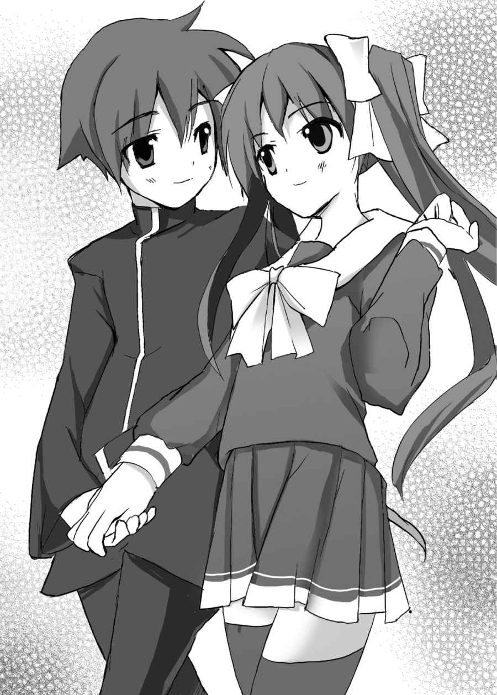
あとがき
こんにちわ。わかつきひかるです。
「ＡＫＵＭＡで少女」もこれで三作目です。わー、すごーいっ。パチパチッ!! 一冊で終わってもしかたがないって覚悟してたのに、ほんとうにありがたいです。
今回、大変でした。プロットは三回、原稿は二回も書き直して、著者校正二回しました。
余裕のスケジュールのはずだったのに、時間がギリギリになってしまってヒヤヒヤしました。
苦労したぶん、いい出来になってたらいいなぁ。うん。きっとなってるはずだ！
大変だった毎日にうるおいを与えてくれたのは、クリスマスから飼い始めた、ハムスターのチュー太郎くん。
エサ食べて寝て、回し車ぐるぐるして寝て、エサ食べて寝てます。
私がチュー太郎くん、って話しかけると、後ろ足で立ち上がってお髭ぴくぴくさせて、なぁに、って聞いてくれます。チュー太郎くんを見ていると、ほんわかしてなごみます。
いやなことがあったとき、チュー太郎くんに報告すると、「そうかぁ。それは大変だったね。ひかるちゃんは悪くないよ」と言ってくれたり、「あきらめるなよ。がんばろうよ。ひかるちゃん」って叱咤激励してくれるのもうれしいものです（ネズミのセリフをしゃべるのは私なので忙しいですが）。
私はチュー太郎くんを男の子だと思っていたのですが、飼い始めてすぐに、お尻の内側に、穴が二つ開いていることに気付きました。ほ乳類で穴が二つって言ってたら、ひとつは肛門で、もうひとつは膣口ですよね。
女の子だったのかな。でもまあいいや、女の子でも......。チュー太郎くんかわいいし、と思い、名前を付け直したりせずそのままにして一ヶ月後。しっぽの付け根にどうみても陰嚢らしいふくらみが......。
びっくりしてネットで調べたのですが、肛門と生殖器の距離でオスとメスを見分けると書いてあってさらにびっくり。オスの生殖器って、ペニスじゃないんですかっ？ 穴なんですけどっ。どう見ても膣なんですけどっ!!
はたと気付きました。ハムスターって、足が短くて、お腹と床の距離がすぐじゃないですか。ペニスがぶら下がっていたらケガしますよね。ここから先は想像ですが、ハムスターのペニスはお腹の中に格納されていて、セックスするときに出てくるに違いありませんっ。人間だって、勃起したらペニスが大きくなるじゃないですか？ ぜったいそうですっ！
じゃあ、チュー太郎くんって、はじめっから男の子だったの？ いやいや、チュー太郎くんは、男→女→男に、ＴＳしたのですっ!!
「ＡＫＵＭＡで少女３」を一生懸命書いていたから、飼いネズミが女性化したのでしょう。
チュー太郎くんに指を噛まれて大惨事になり、キーボードを打つたびに流血して大変だったりもしましたが、もう忘れることにします（執筆に時間がかかった原因のひとつ）。
そんなこんなで大騒ぎしながら書いた「ＡＫＵＭＡで少女３」。楽しんでいただけたらうれしいです。
この本とほぼ同時期に出る「キャラの！」で、ＡＫＵＭＡで少女の漫画連載もはじまります。すごいなぁ。私の妄想が漫画になるんですよ。しみじみとうれしいです。
ではまた。４巻でお会いしましょう！
飼いネズミに愚痴を垂れつつ、わかつきはがんばりますっ!!
２００８年３月３日
わかつきひかる拝
◆ご意見、ご感想をお寄せください......ファンレターのあて先◆
〒１５１―００５３
東京都渋谷区代々木２―15 ―８
（株）ホビージャパン ＨＪ文庫編集部
わかつきひかる先生／高階＠聖人先生
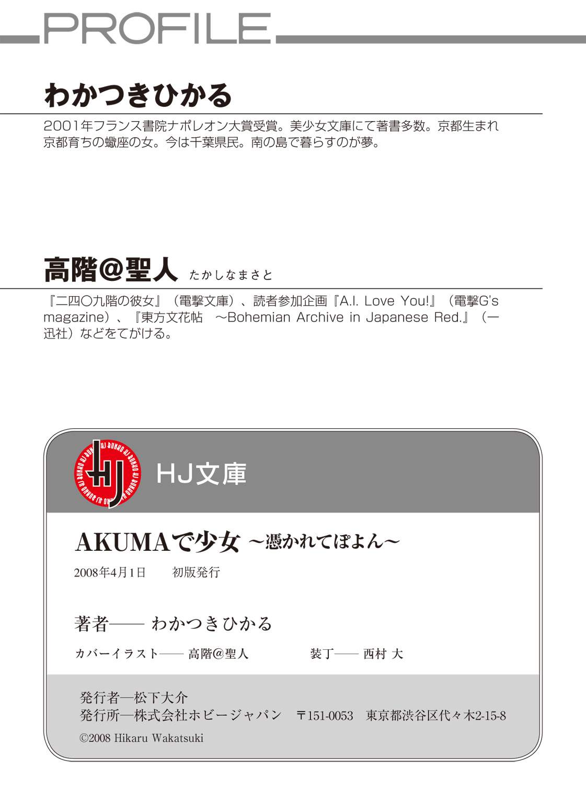